4. Difference-in-Differences
Mike Nguyen
2026-03-22
c_did.Rmd
library(causalverse)
knitr::opts_chunk$set(
warning = FALSE,
message = FALSE,cache = TRUE)Assumptions
Treatment Variation Plot
library(PanelMatch)
pd_stagg <- PanelData(
panel.data = fixest::base_stagg |>
mutate(treat = if_else(time_to_treatment < 0, 0, 1)),
unit.id = "id",
time.id = "year",
treatment = "treat",
outcome = "y"
)
DisplayTreatment(
panel.data = pd_stagg,
xlab = "Year",
ylab = "Unit",
hide.y.tick.label = TRUE
)It’s okay to have some units without any observation on the left-hand side (i.e., left-censored).
Pre-treatment Parallel Trends
plot_par_trends
The plot_par_trends function is designed to assist researchers and analysts in visualizing parallel trends in longitudinal datasets, particularly for datasets with treatment and control groups. This tool makes it easy to visualize changes over time for various outcome metrics between the groups.
Data Structure
For optimal use of plot_par_trends, ensure your data is structured in the following manner:
-
entity: A unique identifier for each observation (e.g., individuals, companies). -
time: The time period for the observation. - Treatment status column: Distinguishing treated observations from controls.
- Metric columns: Capturing the outcome measures of interest.
Sample Data Generation
For demonstration purposes, we can generate some illustrative data:
data <- expand.grid(entity = 1:100, time = 1:10) %>%
dplyr::arrange(entity, time) %>%
dplyr::mutate(
treatment = ifelse(entity <= 50, "Treated", "Control"),
outcome1 = 0.5 * time + rnorm(n(), 0, 2) + ifelse(treatment == "Treated", 0, 0),
outcome2 = 3 + 0.3 * time + rnorm(n(), 0, 1) + ifelse(treatment == "Treated", 0, 2),
outcome3 = 3 + 0.5 * time * rnorm(n(), 0, 1) + rexp(n(), rate = 1) + ifelse(treatment == "Treated", 0, 2),
outcome4 = time + rnorm(n(), 0, 1) + ifelse(treatment == "Treated", 0, 2) * 2
)
head(data)
#> entity time treatment outcome1 outcome2 outcome3 outcome4
#> 1 1 1 Treated -2.300087 2.963285 3.371155 0.5654913
#> 2 1 2 Treated 1.510634 3.384160 4.619099 1.0015782
#> 3 1 3 Treated -3.374527 4.521132 2.931090 3.1943447
#> 4 1 4 Treated 1.988857 2.915973 3.784315 3.5720560
#> 5 1 5 Treated 3.743105 3.199908 2.922883 4.8883488
#> 6 1 6 Treated 5.296823 4.423231 2.254846 4.0199024
summary(data)
#> entity time treatment outcome1
#> Min. : 1.00 Min. : 1.0 Length:1000 Min. :-3.9073
#> 1st Qu.: 25.75 1st Qu.: 3.0 Class :character 1st Qu.: 0.9742
#> Median : 50.50 Median : 5.5 Mode :character Median : 2.7320
#> Mean : 50.50 Mean : 5.5 Mean : 2.7587
#> 3rd Qu.: 75.25 3rd Qu.: 8.0 3rd Qu.: 4.4386
#> Max. :100.00 Max. :10.0 Max. :10.2979
#> outcome2 outcome3 outcome4
#> Min. : 1.024 Min. :-7.435 Min. :-1.432
#> 1st Qu.: 4.434 1st Qu.: 3.044 1st Qu.: 4.895
#> Median : 5.619 Median : 5.093 Median : 7.428
#> Mean : 5.634 Mean : 5.015 Mean : 7.488
#> 3rd Qu.: 6.807 3rd Qu.: 6.812 3rd Qu.:10.098
#> Max. :10.575 Max. :18.138 Max. :16.668Visualizing Trends with plot_par_trends Invoke the plot_par_trends function using the sample data:
results <- plot_par_trends(
data = data,
metrics_and_names = list(
outcome1 = "Outcome 1",
outcome2 = "Outcome 2",
outcome3 = "Outcome 3",
outcome4 = "Outcome 4"
),
treatment_status_var = "treatment",
time_var = list(time = "Time"),
smoothing_method = "glm",
theme_use = causalverse::ama_theme(base_size = 12)
# title_prefix = "Para Trends"
)Note: This custom function is built based on the geom_smooth function from ggplot2. Therefore, it supports most of the smoothing methods you’d find in ggplot2, such as lm, glm, loess, etc.
The function returns a list of ggplot objects, which can be visualized using tools like gridExtra
library(gridExtra)
gridExtra::grid.arrange(grobs = results, ncol = 2)
Note of Caution: When using this custom package, it’s crucial to carefully examine parallel trends plots both with and without control variables. At times, one might observe suitable parallel trends without control variables. However, when these control variables are introduced, the underlying assumptions can be disturbed. Conversely, there are cases where the general parallel trends assumption doesn’t seem to be in place, but when conditioned on the control variables, the trends align perfectly. This package provides functions that allow users to easily generate these plots side by side, especially after formulating the predicted values of dependent variables by accounting for control variables. Always approach these plots with a discerning eye to ensure accurate interpretation and application.
In this demonstration, I’ve incorporated the use of the smoothing function to illustrate its potential application. It’s imperative, however, to approach this function with prudence. Although the smoothing function can be invaluable in revealing underlying trends in specific scenarios, its application carries inherent risks. One such risk is the inadvertent or intentional misrepresentation of data, leading observers to falsely deduce the presence of parallel trends where they might not exist. This can potentially skew interpretations and lead to incorrect conclusions.
Given these concerns, if you’re inclined to utilize the smoothing function, it’s paramount to also consider the implications and insights from our secondary plot. This subsequent visualization offers a more granular and statistically sound perspective, specifically focusing on the pre-treatment disparities between the treated and control groups. It serves as a vital counterbalance, ensuring that any trend interpretations are grounded in robust statistical analysis.
plot_coef_par_trends
Arguments
-
data: A data frame containing the data to be used in the model. -
dependent_vars: A named list of dependent variables to model along with their respective labels. -
time_var: The name of the time variable in the data. - (similarly, describe other arguments…)
Output
The function returns a plot or a list of plots visualizing interaction coefficients based on user specifications.
data("base_did")
# Combined Plot
combined_plot <- plot_coef_par_trends(
data = base_did,
dependent_vars = c(y = "Outcome 1", x1 = "Outcome 2"),
time_var = "period",
unit_treatment_status = "treat",
unit_id_var = "id",
plot_type = "coefplot",
combined_plot = TRUE,
plot_args = list(main = "Interaction coefficients Plot"),
legend_title = "Metrics",
legend_position = "bottomright"
)
# Individual Plots
indi_plots <- plot_coef_par_trends(
data = fixest::base_did,
dependent_vars = c(y = "Outcome 1", x1 = "Outcome 2"),
time_var = "period",
unit_treatment_status = "treat",
unit_id_var = "id",
plot_type = "coefplot",
combined_plot = FALSE
)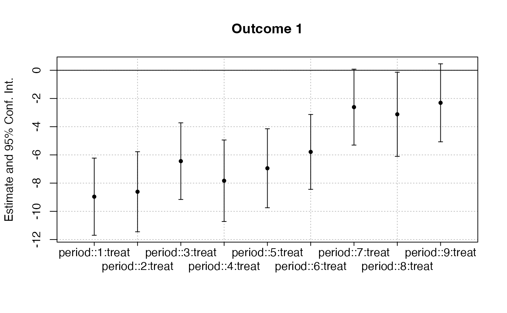
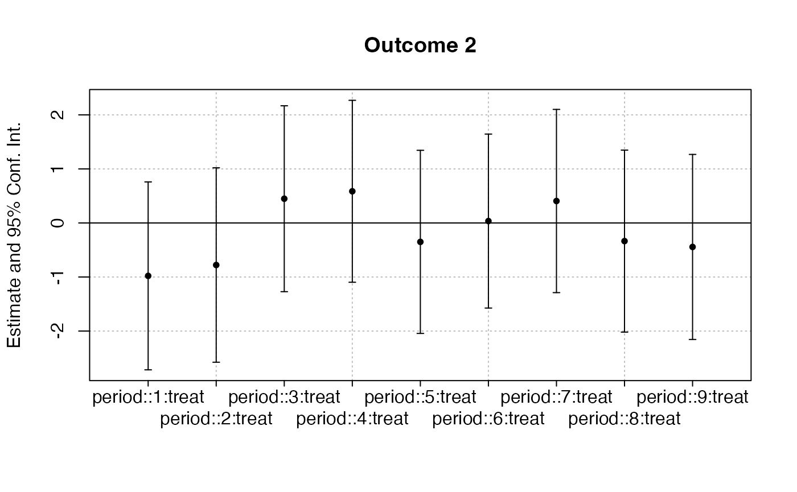
Random Treatment Assignments
In Difference-in-Differences analysis, ensuring randomness in treatment assignment is crucial. This randomization comes in two main levels: random time assignment and random unit assignment.
-
Definition: This pertains to when (in time) a treatment or intervention is introduced, not to which units it’s introduced.
Importance in Staggered DiD or Rollout Design: If certain periods are predisposed to receiving treatment (e.g., economic booms or downturns), then the estimated treatment effect can get confounded with these period-specific shocks. A truly random time assignment ensures that the treatment’s introduction isn’t systematically related to other time-specific factors.
Example: Suppose there’s a policy aimed at improving infrastructure. If this policy tends to get introduced during economic booms because that’s when governments have surplus funds, then it’s challenging to disentangle the effects of the booming economy from the effects of the infrastructure policy. A random time assignment would ensure the policy’s introduction isn’t tied to the state of the economy.
-
Definition: This pertains to which units (like individuals, firms, or regions) are chosen to receive the treatment.
Example: Using the same infrastructure policy, if it is always introduced in wealthier regions first, then the effects of regional affluence can get confounded with the policy effects. Random unit assignment ensures the policy isn’t systematically introduced to certain kinds of regions.
Providing Evidence of Random Treatment Assignments:
To validate the DiD design, evidence should be provided for both random time and random unit assignments:
-
Graphical Analysis: Plot the timing of treatment introduction across various periods. A discernible pattern (like always introducing a policy before election years) can raise concerns.
Narrative Evidence: Historical context might indicate that the timing of treatment introduction was exogenous. For example, if a policy’s rollout timing was determined by some external random event, that would support random time assignment.
-
Statistical Tests: Conduct tests to demonstrate that pre-treatment characteristics are balanced between the treated and control groups. Techniques like t-tests or regressions can be used for this.
Narrative Evidence: Institutional or historical data might show that the selection of specific units for treatment was random.
Random Time Assignment
library(gridExtra)
# Control number of units and time periods here
num_units <- 2000
num_periods <- 20
# Setting seed for reproducibility
set.seed(123)
# Generate data for given number of units over specified periods
data <- expand.grid(unit = 1:num_units,
time_period = 1:num_periods)
data$treatment_random <- 0
data$treatment_systematic <- 0
# Randomly assigning treatment times to units
random_treatment_times <- sample(1:num_periods, num_units, replace = TRUE)
for (i in 1:num_units) {
data$treatment_random[data$unit == i &
data$time_period == random_treatment_times[i]] <- 1
}
# Calculate peaks robustly
peak_periods <- round(c(0.25, 0.5, 0.75) * num_periods)
# Systematic treatment assignment with higher probability at peak periods
prob_values <- rep(1/num_periods, num_periods)
# Update the probability for peak periods;
# the rest will have a slightly reduced probability
higher_prob <- 0.10 # Arbitrary, adjust as necessary
prob_values[peak_periods] <- higher_prob
adjustment <-
(length(peak_periods) * higher_prob - length(peak_periods) / num_periods) / (num_periods - length(peak_periods))
prob_values[-peak_periods] <- 1/num_periods - adjustment
systematic_treatment_times <-
sample(1:num_periods, num_units, replace = TRUE, prob = prob_values)
for (i in 1:num_units) {
data$treatment_systematic[data$unit == i &
data$time_period == systematic_treatment_times[i]] <- 1
}
head(data |> arrange(unit))
#> unit time_period treatment_random treatment_systematic
#> 1 1 1 0 0
#> 2 1 2 0 0
#> 3 1 3 0 0
#> 4 1 4 0 0
#> 5 1 5 0 0
#> 6 1 6 0 0
# Plotting
plot_random <-
plot_treat_time(
data = data,
time_var = time_period,
unit_treat = treatment_random,
theme_use = causalverse::ama_theme(base_size = 12),
show_legend = TRUE
)
plot_systematic <-
plot_treat_time(
data = data,
time_var = time_period,
unit_treat = treatment_systematic,
theme_use = causalverse::ama_theme(base_size = 12),
show_legend = TRUE
)
gridExtra::grid.arrange(plot_random, plot_systematic, ncol = 2)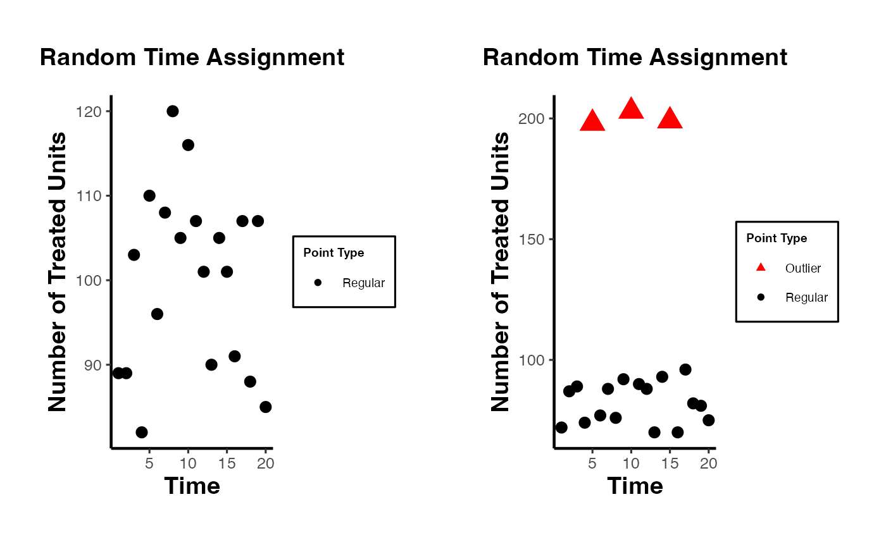
Random Time Assignment Plot:
- Treatment is dispersed randomly across time periods, with no clear pattern.
Systematic Time Assignment Plot:
- Distinct peaks are observed at the 25th, 50th, and 75th periods, indicating non-random treatment assignment at these times.
Interpretation: The random plot shows arbitrary treatment assignments, while the systematic plot reveals consistent periods where more units receive treatment. This systematic behavior can introduce bias in causal studies.
Random Unit Assignment
-
For a Single Pre-treatment Characteristic:
- T-test: This is used for comparing means of the characteristic between two groups (treated vs. control). If the p-value is significant (typically < 0.05), it suggests the groups differ on that characteristic.
# data <- data.frame(treatment = c(rep(0, 50), rep(1, 50)),
# # Dummy for treatment
# characteristic = rnorm(100) # Randomly generated characteristic
# )
set.seed(123)
data = mtcars |>
dplyr::select(mpg, cyl) |>
dplyr::rowwise() |>
dplyr::mutate(treatment = sample(c(0,1), 1, replace = T)) |>
dplyr::ungroup()
t.test(mpg ~ treatment, data = data)
#>
#> Welch Two Sample t-test
#>
#> data: mpg by treatment
#> t = 0.81508, df = 29.976, p-value = 0.4215
#> alternative hypothesis: true difference in means between group 0 and group 1 is not equal to 0
#> 95 percent confidence interval:
#> -2.575206 5.995841
#> sample estimates:
#> mean in group 0 mean in group 1
#> 20.83889 19.12857- Regression: Run a regression of the pre-treatment characteristic on the treatment dummy. If the coefficient on the treatment dummy is significant, it suggests the groups differ on that characteristic. The regression can be specified as:
where is the pre-treatment characteristic of unit and is a dummy variable which equals 1 if is treated and 0 otherwise.
lm_result <- lm(mpg ~ treatment, data = data)
summary(lm_result)
#>
#> Call:
#> lm(formula = mpg ~ treatment, data = data)
#>
#> Residuals:
#> Min 1Q Median 3Q Max
#> -10.439 -4.529 -1.179 2.271 13.061
#>
#> Coefficients:
#> Estimate Std. Error t value Pr(>|t|)
#> (Intercept) 20.839 1.429 14.581 3.72e-15 ***
#> treatment -1.710 2.161 -0.792 0.435
#> ---
#> Signif. codes: 0 '***' 0.001 '**' 0.01 '*' 0.05 '.' 0.1 ' ' 1
#>
#> Residual standard error: 6.064 on 30 degrees of freedom
#> Multiple R-squared: 0.02046, Adjusted R-squared: -0.01219
#> F-statistic: 0.6265 on 1 and 30 DF, p-value: 0.4348- For Multiple Pre-treatment Characteristics:
Visualization
- For both single and multiple characteristics, it can be useful to visualize the distributions in both groups. Histograms, kernel density plots, or box plots can be employed to visually assess balance.
- It’s important to note that you should consider the pre-treatment periods.
library(rlang)
library(gridExtra)
# Density distribution for a single characteristic
ggplot(data, aes(x = mpg, fill = factor(treatment))) +
geom_density(alpha = 0.5) +
labs(fill = "Treatment") +
ggtitle("Density Distribution by Treatment Group") +
causalverse::ama_theme()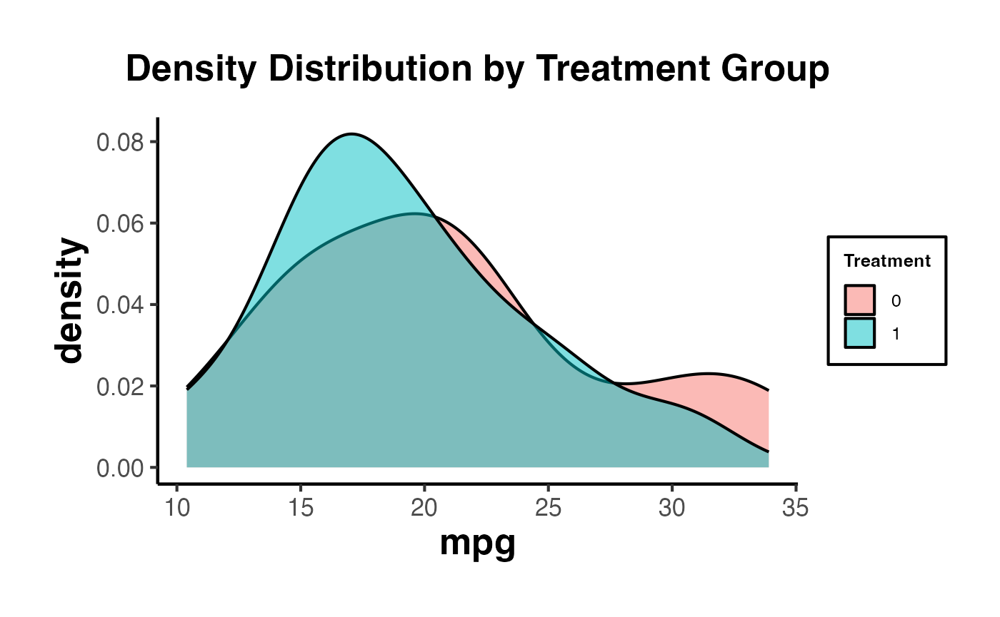
# Side-by-side density distributions for multiple characteristics
plot_list <- plot_density_by_treatment(
data = data,
var_map = list("mpg" = "Var 1",
"cyl" = "Var 2"),
treatment_var = c("treatment" = "Treatment Name\nin Legend"),
theme_use = causalverse::ama_theme(base_size = 10)
)
grid.arrange(grobs = plot_list, ncol = 2)
Multivariate Regression
Run a regression of each pre-treatment characteristic on the treatment dummy. This allows for the simultaneous assessment of balance on multiple characteristics. You can include all characteristics in a single regression as dependent variables.
lm_multivariate <-
lm(cbind(mpg, cyl) ~ treatment, data = data)
summary(lm_multivariate)
#> Response mpg :
#>
#> Call:
#> lm(formula = mpg ~ treatment, data = data)
#>
#> Residuals:
#> Min 1Q Median 3Q Max
#> -10.439 -4.529 -1.179 2.271 13.061
#>
#> Coefficients:
#> Estimate Std. Error t value Pr(>|t|)
#> (Intercept) 20.839 1.429 14.581 3.72e-15 ***
#> treatment -1.710 2.161 -0.792 0.435
#> ---
#> Signif. codes: 0 '***' 0.001 '**' 0.01 '*' 0.05 '.' 0.1 ' ' 1
#>
#> Residual standard error: 6.064 on 30 degrees of freedom
#> Multiple R-squared: 0.02046, Adjusted R-squared: -0.01219
#> F-statistic: 0.6265 on 1 and 30 DF, p-value: 0.4348
#>
#>
#> Response cyl :
#>
#> Call:
#> lm(formula = cyl ~ treatment, data = data)
#>
#> Residuals:
#> Min 1Q Median 3Q Max
#> -2.2857 -2.1111 -0.1111 1.7579 1.8889
#>
#> Coefficients:
#> Estimate Std. Error t value Pr(>|t|)
#> (Intercept) 6.1111 0.4274 14.30 6.21e-15 ***
#> treatment 0.1746 0.6461 0.27 0.789
#> ---
#> Signif. codes: 0 '***' 0.001 '**' 0.01 '*' 0.05 '.' 0.1 ' ' 1
#>
#> Residual standard error: 1.813 on 30 degrees of freedom
#> Multiple R-squared: 0.002428, Adjusted R-squared: -0.03082
#> F-statistic: 0.07302 on 1 and 30 DF, p-value: 0.7888All of the coefficients in each regression are not significant. Hence, we don’t have any concerns.
To be more rigorous, we should estimate all regressions simultaneously using SUR if we suspect the error terms of the different regression equations are correlated.
# install.packages("systemfit")
library(systemfit)
equation1 <- mpg ~ treatment
equation2 <- cyl ~ treatment
system <-
list(characteristic = equation1, characteristic2 = equation2)
fit <- systemfit(system, data = data, method = "SUR")
summary(fit)
#>
#> systemfit results
#> method: SUR
#>
#> N DF SSR detRCov OLS-R2 McElroy-R2
#> system 64 60 1201.65 32.5288 0.019002 0.020257
#>
#> N DF SSR MSE RMSE R2 Adj R2
#> characteristic 32 30 1103.0113 36.76705 6.06358 0.020457 -0.012194
#> characteristic2 32 30 98.6349 3.28783 1.81324 0.002428 -0.030824
#>
#> The covariance matrix of the residuals used for estimation
#> characteristic characteristic2
#> characteristic 36.76704 -9.39974
#> characteristic2 -9.39974 3.28783
#>
#> The covariance matrix of the residuals
#> characteristic characteristic2
#> characteristic 36.76704 -9.39974
#> characteristic2 -9.39974 3.28783
#>
#> The correlations of the residuals
#> characteristic characteristic2
#> characteristic 1.000000 -0.854932
#> characteristic2 -0.854932 1.000000
#>
#>
#> SUR estimates for 'characteristic' (equation 1)
#> Model Formula: mpg ~ treatment
#>
#> Estimate Std. Error t value Pr(>|t|)
#> (Intercept) 20.83889 1.42920 14.58080 3.5527e-15 ***
#> treatment -1.71032 2.16075 -0.79154 0.43484
#> ---
#> Signif. codes: 0 '***' 0.001 '**' 0.01 '*' 0.05 '.' 0.1 ' ' 1
#>
#> Residual standard error: 6.063584 on 30 degrees of freedom
#> Number of observations: 32 Degrees of Freedom: 30
#> SSR: 1103.011349 MSE: 36.767045 Root MSE: 6.063584
#> Multiple R-Squared: 0.020457 Adjusted R-Squared: -0.012194
#>
#>
#> SUR estimates for 'characteristic2' (equation 2)
#> Model Formula: cyl ~ treatment
#>
#> Estimate Std. Error t value Pr(>|t|)
#> (Intercept) 6.111111 0.427384 14.29887 6.2172e-15 ***
#> treatment 0.174603 0.646144 0.27022 0.78884
#> ---
#> Signif. codes: 0 '***' 0.001 '**' 0.01 '*' 0.05 '.' 0.1 ' ' 1
#>
#> Residual standard error: 1.813238 on 30 degrees of freedom
#> Number of observations: 32 Degrees of Freedom: 30
#> SSR: 98.634921 MSE: 3.287831 Root MSE: 1.813238
#> Multiple R-Squared: 0.002428 Adjusted R-Squared: -0.030824
# or users could use the `balance_assessment` function to get both SUR and Hotelling
results <- balance_assessment(data, "treatment", "mpg", "cyl")
print(results$SUR)
#>
#> systemfit results
#> method: SUR
#>
#> N DF SSR detRCov OLS-R2 McElroy-R2
#> system 64 60 1201.65 32.5288 0.019002 0.020257
#>
#> N DF SSR MSE RMSE R2 Adj R2
#> mpgeq 32 30 1103.0113 36.76705 6.06358 0.020457 -0.012194
#> cyleq 32 30 98.6349 3.28783 1.81324 0.002428 -0.030824
#>
#> The covariance matrix of the residuals used for estimation
#> mpgeq cyleq
#> mpgeq 36.76704 -9.39974
#> cyleq -9.39974 3.28783
#>
#> The covariance matrix of the residuals
#> mpgeq cyleq
#> mpgeq 36.76704 -9.39974
#> cyleq -9.39974 3.28783
#>
#> The correlations of the residuals
#> mpgeq cyleq
#> mpgeq 1.000000 -0.854932
#> cyleq -0.854932 1.000000
#>
#>
#> SUR estimates for 'mpgeq' (equation 1)
#> Model Formula: mpg ~ treatment
#> <environment: 0x10d272a30>
#>
#> Estimate Std. Error t value Pr(>|t|)
#> (Intercept) 20.83889 1.42920 14.58080 3.5527e-15 ***
#> treatment -1.71032 2.16075 -0.79154 0.43484
#> ---
#> Signif. codes: 0 '***' 0.001 '**' 0.01 '*' 0.05 '.' 0.1 ' ' 1
#>
#> Residual standard error: 6.063584 on 30 degrees of freedom
#> Number of observations: 32 Degrees of Freedom: 30
#> SSR: 1103.011349 MSE: 36.767045 Root MSE: 6.063584
#> Multiple R-Squared: 0.020457 Adjusted R-Squared: -0.012194
#>
#>
#> SUR estimates for 'cyleq' (equation 2)
#> Model Formula: cyl ~ treatment
#> <environment: 0x10d274470>
#>
#> Estimate Std. Error t value Pr(>|t|)
#> (Intercept) 6.111111 0.427384 14.29887 6.2172e-15 ***
#> treatment 0.174603 0.646144 0.27022 0.78884
#> ---
#> Signif. codes: 0 '***' 0.001 '**' 0.01 '*' 0.05 '.' 0.1 ' ' 1
#>
#> Residual standard error: 1.813238 on 30 degrees of freedom
#> Number of observations: 32 Degrees of Freedom: 30
#> SSR: 98.634921 MSE: 3.287831 Root MSE: 1.813238
#> Multiple R-Squared: 0.002428 Adjusted R-Squared: -0.030824For mpg and cyl: The treatment effect is not statistically significant, implying no evidence against random unit assignment based on this characteristic.
Hotelling’s T-squared test
This is the multivariate counterpart of the T-test designed to test the mean vector of two groups. It’s useful when you have multiple pre-treatment characteristics and you want to test if their mean vectors differ between the treated and control groups.
# For Hotelling's T^2, you can use the `Hotelling` package.
# install.packages("Hotelling")
library(Hotelling)
treated_data <-
data[data$treatment == 1, c("mpg", "cyl" )]
control_data <-
data[data$treatment == 0, c("mpg", "cyl" )]
hotelling_test_res <- hotelling.test(treated_data, control_data)
hotelling_test_res
#> Test stat: 1.2406
#> Numerator df: 2
#> Denominator df: 29
#> P-value: 0.5557
# or users could use the `balance_assessment` function to get both SUR and Hotelling
results <- balance_assessment(data, "treatment", "mpg", "cyl")
print(results$Hotelling)
#> Test stat: 1.2406
#> Numerator df: 2
#> Denominator df: 29
#> P-value: 0.5557Matching
This is a more advanced technique, for example, modeling the probability of being treated based on pre-treatment characteristics using a logistic regression. After matching, you can test for balance in the pre-treatment characteristics between the treated and control groups.
# For propensity score matching, use the `MatchIt` package.
# install.packages("MatchIt")
library(MatchIt)
m.out <-
matchit(treatment ~ mpg + cyl,
data = data,
method = "nearest")
matched_data <- match.data(m.out)
# After matching, you can test for balance using t-tests or regressions.
t.test(mpg ~ treatment, data = matched_data)
#>
#> Welch Two Sample t-test
#>
#> data: mpg by treatment
#> t = -0.035239, df = 25.957, p-value = 0.9722
#> alternative hypothesis: true difference in means between group 0 and group 1 is not equal to 0
#> 95 percent confidence interval:
#> -4.238310 4.095453
#> sample estimates:
#> mean in group 0 mean in group 1
#> 19.05714 19.12857In conclusion, while visualizations provide an intuitive understanding, statistical tests provide a more rigorous method for assessing balance.
DID with in and out treatment status
Plots
Balance Scatter
Since the PanelMatch package is no longer being updated or developed, and its balance_scatter function does not return a ggplot object, I have modified the code to return a ggplot object in a more flexible manner.
library(PanelMatch)
pd_dem <- PanelData(panel.data = dem, unit.id = "wbcode2",
time.id = "year", treatment = "dem", outcome = "y")
# Maha 4-year lag, up to 5 matches
PM.results.maha.4lag.5m <- PanelMatch::PanelMatch(
panel.data = pd_dem,
lag = 4,
refinement.method = "mahalanobis",
match.missing = TRUE,
covs.formula = ~ I(lag(tradewb, 1:4)) + I(lag(y, 1:4)),
size.match = 5,
qoi = "att",
lead = 0:4,
forbid.treatment.reversal = FALSE,
use.diagonal.variance.matrix = TRUE
)
# Maha 4-year lag, up to 10 matches
PM.results.maha.4lag.10m <- PanelMatch::PanelMatch(
panel.data = pd_dem,
lag = 4,
refinement.method = "mahalanobis",
match.missing = TRUE,
covs.formula = ~ I(lag(tradewb, 1:4)) + I(lag(y, 1:4)),
size.match = 10,
qoi = "att",
lead = 0:4,
forbid.treatment.reversal = FALSE,
use.diagonal.variance.matrix = TRUE
)
# Using the function
balance_scatter_custom(
pm_result_list = list(PM.results.maha.4lag.5m, PM.results.maha.4lag.10m),
panel.data = pd_dem,
set.names = c("Maha 4 Lag 5 Matches", "Maha 4 Lag 10 Matches"),
dot.size = 5,
covariates = c("y", "tradewb")
)When conducting research using matching methods for causal inference with time-series cross-sectional data (as with the PanelMatch package), it’s essential to evaluate the robustness of different matching or weighting methods. This assessment allows researchers to gauge the improvement in covariate balance resulting from the refinement of the matched set. Testing the robustness ensures that the findings are not an artifact of a specific matching method but are consistent across different approaches. In essence, a robust result gives more confidence in the causal relationships identified. Below is a quick guide on how to proceed:
library(PanelMatch)
runPanelMatch <- function(method, lag, size.match=NULL, qoi = "att") {
# Default parameters for PanelMatch (v3.1.1+ API)
common.args <- list(
panel.data = pd_dem,
lag = lag,
covs.formula = ~ I(lag(tradewb, 1:4)) + I(lag(y, 1:4)),
qoi = qoi,
lead = 0:4,
forbid.treatment.reversal = FALSE,
size.match = size.match
)
if(method == "mahalanobis") {
common.args$refinement.method <- "mahalanobis"
common.args$match.missing <- TRUE
common.args$use.diagonal.variance.matrix <- TRUE
} else if(method == "ps.match") {
common.args$refinement.method <- "ps.match"
common.args$match.missing <- FALSE
common.args$listwise.delete <- TRUE
} else if(method == "ps.weight") {
common.args$refinement.method <- "ps.weight"
common.args$match.missing <- FALSE
common.args$listwise.delete <- TRUE
}
return(do.call(PanelMatch, common.args))
}
methods <- c("mahalanobis", "ps.match", "ps.weight")
lags <- c(1, 4)
sizes <- c(5, 10)Run sequentially
res_pm <- list()
for(method in methods) {
for(lag in lags) {
for(size in sizes) {
name <- paste0(method, ".", lag, "lag.", size, "m")
res_pm[[name]] <- runPanelMatch(method, lag, size)
}
}
}
# for treatment reversal
res_pm_rev <- list()
for(method in methods) {
for(lag in lags) {
for(size in sizes) {
name <- paste0(method, ".", lag, "lag.", size, "m")
res_pm_rev[[name]] <- runPanelMatch(method, lag, size, qoi = "art")
}
}
}Run parallel
library(foreach)
library(doParallel)
registerDoParallel(cores = 4)
# Initialize an empty list to store results
res_pm <- list()
# Replace nested for-loops with foreach
results <-
foreach(
method = methods,
.combine = 'c',
.multicombine = TRUE,
.packages = c("PanelMatch", "causalverse")
) %dopar% {
tmp <- list()
for (lag in lags) {
for (size in sizes) {
name <- paste0(method, ".", lag, "lag.", size, "m")
tmp[[name]] <- runPanelMatch(method, lag, size)
}
}
tmp
}
# Collate results
for (name in names(results)) {
res_pm[[name]] <- results[[name]]
}
# Treatment reversal
# Initialize an empty list to store results
res_pm_rev <- list()
# Replace nested for-loops with foreach
results_rev <-
foreach(
method = methods,
.combine = 'c',
.multicombine = TRUE,
.packages = c("PanelMatch", "causalverse")
) %dopar% {
tmp <- list()
for (lag in lags) {
for (size in sizes) {
name <- paste0(method, ".", lag, "lag.", size, "m")
tmp[[name]] <-
runPanelMatch(method, lag, size, qoi = "art")
}
}
tmp
}
# Collate results
for (name in names(results_rev)) {
res_pm_rev[[name]] <- results_rev[[name]]
}
stopImplicitCluster()
# Now, you can access res_pm using res_pm[["mahalanobis.1lag.5m"]] etc.
library(gridExtra)
# Updated plotting function
create_balance_plot <- function(method, lag, sizes, res_pm) {
pm_results <- lapply(sizes, function(size) {
res_pm[[paste0(method, ".", lag, "lag.", size, "m")]]
})
return(balance_scatter_custom(
pm_result_list = pm_results,
panel.data = pd_dem,
legend.title = "Possible Matches",
set.names = as.character(sizes),
legend.position = c(0.2,0.8),
# for compiled plot, you don't need x,y, or main labs
x.axis.label = "",
y.axis.label = "",
main = "",
dot.size = 5,
theme_use = causalverse::ama_theme(
base_size = 32,
legend_title_size = 12,
legend_text_size = 12
),
covariates = c("y", "tradewb")
))
}
plots <- list()
for (method in methods) {
for (lag in lags) {
plots[[paste0(method, ".", lag, "lag")]] <-
create_balance_plot(method, lag, sizes, res_pm)
}
}
# Arranging plots in a 3x2 grid
grid.arrange(plots[["mahalanobis.1lag"]],
plots[["mahalanobis.4lag"]],
plots[["ps.match.1lag"]],
plots[["ps.match.4lag"]],
plots[["ps.weight.1lag"]],
plots[["ps.weight.4lag"]],
ncol=2, nrow=3)
# Standardized Mean Difference of Covariates
library(gridExtra)
library(grid)
# Create column and row labels using textGrob
col_labels <- c("1-year Lag", "4-year Lag")
row_labels <- c("Maha Matching", "PS Matching", "PS Weigthing")
major.axes.fontsize = 20
minor.axes.fontsize = 16To export
png(
file.path(getwd(), "export", "balance_scatter.png"),
width = 1200,
height = 1000
)
# Create a list-of-lists, where each inner list represents a row
grid_list <- list(
list(
nullGrob(),
textGrob(col_labels[1], gp = gpar(fontsize = minor.axes.fontsize)),
textGrob(col_labels[2], gp = gpar(fontsize = minor.axes.fontsize))
),
list(textGrob(
row_labels[1],
gp = gpar(fontsize = minor.axes.fontsize),
rot = 90
), plots[["mahalanobis.1lag"]], plots[["mahalanobis.4lag"]]),
list(textGrob(
row_labels[2],
gp = gpar(fontsize = minor.axes.fontsize),
rot = 90
), plots[["ps.match.1lag"]], plots[["ps.match.4lag"]]),
list(textGrob(
row_labels[3],
gp = gpar(fontsize = minor.axes.fontsize),
rot = 90
), plots[["ps.weight.1lag"]], plots[["ps.weight.4lag"]])
)
# "Flatten" the list-of-lists into a single list of grobs
grobs <- do.call(c, grid_list)
grid.arrange(
grobs = grobs,
ncol = 3,
nrow = 4,
widths = c(0.15, 0.42, 0.42),
heights = c(0.15, 0.28, 0.28, 0.28)
)
grid.text(
"Before Refinement",
x = 0.5,
y = 0.03,
gp = gpar(fontsize = major.axes.fontsize)
)
grid.text(
"After Refinement",
x = 0.03,
y = 0.5,
rot = 90,
gp = gpar(fontsize = major.axes.fontsize)
)
dev.off()
library(knitr)
include_graphics(file.path(getwd(), "export", "balance_scatter.png"))
I do not include it in this vignette due to display issues, but the code can be easily replicated.
Balance Trends over Pre-treatment Periods
In the original PanelMatch package, the function get_covariate_balance does not return a ggplot object. Therefore, it is necessary to construct our own visualization. However, one can utilize the output dataset from get_covariate_balance for this purpose.
PM.results.ps.weight <-
PanelMatch(
panel.data = pd_dem,
lag = 4,
refinement.method = "ps.weight",
match.missing = FALSE,
listwise.delete = TRUE,
covs.formula = ~ I(lag(tradewb, 1:4)) + I(lag(y, 1:4)),
size.match = 5,
qoi = "att",
lead = 0:4,
forbid.treatment.reversal = FALSE
)
bal <- get_covariate_balance(
PM.results.ps.weight,
panel.data = pd_dem,
covariates = c("tradewb", "y")
)
# Extract the balance matrix for plotting
df <- bal[[1]][[1]]
plot_covariate_balance_pretrend(df)We must also examine multiple matching and refining methods to ensure that we have robust evidence for covariate balance over the pre-treatment time period.
# Step 1: Define configurations
configurations <- list(
list(refinement.method = "none", qoi = "att"),
list(refinement.method = "none", qoi = "art"),
list(refinement.method = "mahalanobis", qoi = "att"),
list(refinement.method = "mahalanobis", qoi = "art"),
list(refinement.method = "ps.match", qoi = "att"),
list(refinement.method = "ps.match", qoi = "art"),
list(refinement.method = "ps.weight", qoi = "att"),
list(refinement.method = "ps.weight", qoi = "art")
)
# Step 2: Use lapply or loop to generate results
results <- lapply(configurations, function(config) {
PanelMatch(
panel.data = pd_dem,
lag = 4,
match.missing = FALSE,
listwise.delete = TRUE,
size.match = 5,
lead = 0:4,
forbid.treatment.reversal = FALSE,
refinement.method = config$refinement.method,
covs.formula = ~ I(lag(tradewb, 1:4)) + I(lag(y, 1:4)),
qoi = config$qoi
)
})
# Step 3: Get covariate balance and plot
plots <- mapply(function(result, config) {
bal <- get_covariate_balance(
result,
panel.data = pd_dem,
covariates = c("tradewb", "y")
)
df <- bal[[1]][[1]]
causalverse::plot_covariate_balance_pretrend(df, main = "")
}, results, configurations, SIMPLIFY = FALSE)
# Set names for plots
names(plots) <- sapply(configurations, function(config) {
paste(config$qoi, config$refinement.method, sep = ".")
})
# To view plots
lapply(plots, print)
grid.arrange(
plots$att.none,
plots$att.mahalanobis,
plots$att.ps.match,
plots$att.ps.weight,
plots$art.none,
plots$art.mahalanobis,
plots$art.ps.match,
plots$art.ps.weight,
ncol = 4,
nrow = 2
)For a fancier plot
library(gridExtra)
library(grid)
# Column and row labels
col_labels <-
c("None",
"Mahalanobis",
"Propensity Score Matching",
"Propensity Score Weighting")
row_labels <- c("ATT", "ART")
# Specify your desired fontsize for labels
minor.axes.fontsize <- 16
major.axes.fontsize <- 20
png(
file.path(getwd(), "export", "var_balance_pretreat.png"),
width = 1200,
height = 1000
)
# Create a list-of-lists, where each inner list represents a row
grid_list <- list(
list(
nullGrob(),
textGrob(col_labels[1], gp = gpar(fontsize = minor.axes.fontsize)),
textGrob(col_labels[2], gp = gpar(fontsize = minor.axes.fontsize)),
textGrob(col_labels[3], gp = gpar(fontsize = minor.axes.fontsize)),
textGrob(col_labels[4], gp = gpar(fontsize = minor.axes.fontsize))
),
list(
textGrob(row_labels[1], gp = gpar(fontsize = minor.axes.fontsize), rot = 90),
plots$att.none,
plots$att.mahalanobis,
plots$att.ps.match,
plots$att.ps.weight
),
list(
textGrob(row_labels[2], gp = gpar(fontsize = minor.axes.fontsize), rot = 90),
plots$art.none,
plots$art.mahalanobis,
plots$art.ps.match,
plots$art.ps.weight
)
)
# "Flatten" the list-of-lists into a single list of grobs
grobs <- do.call(c, grid_list)
# Arrange your plots with text labels
grid.arrange(
grobs = grobs,
ncol = 5,
nrow = 3,
widths = c(0.1, 0.225, 0.225, 0.225, 0.225),
heights = c(0.1, 0.45, 0.45)
)
# Add main x and y axis titles
grid.text(
"Refinement Methods",
x = 0.5,
y = 0.01,
gp = gpar(fontsize = major.axes.fontsize)
)
grid.text(
"Quantities of Interest",
x = 0.02,
y = 0.5,
rot = 90,
gp = gpar(fontsize = major.axes.fontsize)
)
dev.off()Estimation
# sequential
# Step 1: Apply PanelEstimate function
# Initialize an empty list to store results
res_est <- vector("list", length(res_pm))
# Iterate over each element in res_pm
for (i in 1:length(res_pm)) {
res_est[[i]] <- PanelEstimate(
res_pm[[i]],
panel.data = pd_dem,
se.method = "bootstrap",
number.iterations = 1000,
confidence.level = .95
)
# Transfer the name of the current element to the res_est list
names(res_est)[i] <- names(res_pm)[i]
}
# Step 2: Apply plot_PanelEstimate function
# Initialize an empty list to store plot results
res_est_plot <- vector("list", length(res_est))
# Iterate over each element in res_est
for (i in 1:length(res_est)) {
res_est_plot[[i]] <-
causalverse::plot_panel_estimate(res_est[[i]],
main = "",
theme_use = causalverse::ama_theme(base_size = 14))
# Transfer the name of the current element to the res_est_plot list
names(res_est_plot)[i] <- names(res_est)[i]
}
# check results
res_est_plot$mahalanobis.1lag.5m
# Step 1: Apply PanelEstimate function for res_pm_rev
# Initialize an empty list to store results
res_est_rev <- vector("list", length(res_pm_rev))
# Iterate over each element in res_pm_rev
for (i in 1:length(res_pm_rev)) {
res_est_rev[[i]] <- PanelEstimate(
res_pm_rev[[i]],
panel.data = pd_dem,
se.method = "bootstrap",
number.iterations = 1000,
confidence.level = .95
)
# Transfer the name of the current element to the res_est_rev list
names(res_est_rev)[i] <- names(res_pm_rev)[i]
}
# Step 2: Apply plot_PanelEstimate function for res_est_rev
# Initialize an empty list to store plot results
res_est_plot_rev <- vector("list", length(res_est_rev))
# Iterate over each element in res_est_rev
for (i in 1:length(res_est_rev)) {
res_est_plot_rev[[i]] <-
causalverse::plot_panel_estimate(res_est_rev[[i]],
main = "",
theme_use = causalverse::ama_theme(base_size = 14))
# Transfer the name of the current element to the res_est_plot_rev list
names(res_est_plot_rev)[i] <- names(res_est_rev)[i]
}
# parallel
library(doParallel)
library(foreach)
# Detect the number of cores to use for parallel processing
num_cores <- 4
# Register the parallel backend
cl <- makeCluster(num_cores)
registerDoParallel(cl)
# Step 1: Apply PanelEstimate function in parallel
res_est <-
foreach(i = 1:length(res_pm), .packages = "PanelMatch") %dopar% {
PanelEstimate(
res_pm[[i]],
panel.data = pd_dem,
se.method = "bootstrap",
number.iterations = 1000,
confidence.level = .95
)
}
# Transfer names from res_pm to res_est
names(res_est) <- names(res_pm)
# Step 2: Apply plot_PanelEstimate function in parallel
res_est_plot <-
foreach(
i = 1:length(res_est),
.packages = c("PanelMatch", "causalverse", "ggplot2")
) %dopar% {
causalverse::plot_panel_estimate(res_est[[i]],
main = "",
theme_use = causalverse::ama_theme(base_size = 10))
}
# Transfer names from res_est to res_est_plot
names(res_est_plot) <- names(res_est)
# Step 1: Apply PanelEstimate function for res_pm_rev in parallel
res_est_rev <-
foreach(i = 1:length(res_pm_rev), .packages = "PanelMatch") %dopar% {
PanelEstimate(
res_pm_rev[[i]],
panel.data = pd_dem,
se.method = "bootstrap",
number.iterations = 1000,
confidence.level = .95
)
}
# Transfer names from res_pm_rev to res_est_rev
names(res_est_rev) <- names(res_pm_rev)
# Step 2: Apply plot_PanelEstimate function for res_est_rev in parallel
res_est_plot_rev <-
foreach(
i = 1:length(res_est_rev),
.packages = c("PanelMatch", "causalverse", "ggplot2")
) %dopar% {
causalverse::plot_panel_estimate(res_est_rev[[i]],
main = "",
theme_use = causalverse::ama_theme(base_size = 10))
}
# Transfer names from res_est_rev to res_est_plot_rev
names(res_est_plot_rev) <- names(res_est_rev)
# Stop the cluster
stopCluster(cl)
library(gridExtra)
library(grid)
# Column and row labels
col_labels <- c("Mahalanobis 5m",
"Mahalanobis 10m",
"PS Matching 5m",
"PS Matching 10m",
"PS Weighting 5m")
row_labels <- c("ATT", "ART")
# Specify your desired fontsize for labels
minor.axes.fontsize <- 16
major.axes.fontsize <- 20
# Create a list-of-lists, where each inner list represents a row
grid_list <- list(
list(
nullGrob(),
textGrob(col_labels[1], gp = gpar(fontsize = minor.axes.fontsize)),
textGrob(col_labels[2], gp = gpar(fontsize = minor.axes.fontsize)),
textGrob(col_labels[3], gp = gpar(fontsize = minor.axes.fontsize)),
textGrob(col_labels[4], gp = gpar(fontsize = minor.axes.fontsize)),
textGrob(col_labels[5], gp = gpar(fontsize = minor.axes.fontsize))
),
list(
textGrob(row_labels[1], gp = gpar(fontsize = minor.axes.fontsize), rot = 90),
res_est_plot$mahalanobis.1lag.5m,
res_est_plot$mahalanobis.1lag.10m,
res_est_plot$ps.match.1lag.5m,
res_est_plot$ps.match.1lag.10m,
res_est_plot$ps.weight.1lag.5m
),
list(
textGrob(row_labels[2], gp = gpar(fontsize = minor.axes.fontsize), rot = 90),
res_est_plot_rev$mahalanobis.1lag.5m,
res_est_plot_rev$mahalanobis.1lag.10m,
res_est_plot_rev$ps.match.1lag.5m,
res_est_plot_rev$ps.match.1lag.10m,
res_est_plot_rev$ps.weight.1lag.5m
)
)
# "Flatten" the list-of-lists into a single list of grobs
grobs <- do.call(c, grid_list)
# Arrange your plots with text labels
grid.arrange(
grobs = grobs,
ncol = 6,
nrow = 3,
widths = c(0.1, 0.18, 0.18, 0.18, 0.18, 0.18),
heights = c(0.1, 0.45, 0.45)
)
# Add main x and y axis titles
grid.text(
"Methods",
x = 0.5,
y = 0.02,
gp = gpar(fontsize = major.axes.fontsize)
)
grid.text(
"",
x = 0.02,
y = 0.5,
rot = 90,
gp = gpar(fontsize = major.axes.fontsize)
)Staggered DID
Staggered DiD (Difference-in-Differences) designs are becoming increasingly common in empirical research. These designs arise when different units (like firms, regions, or countries) receive treatments at different time periods. This presents a unique challenge, as standard DiD methods often do not apply seamlessly to such setups.
For data analyses involving staggered DiD designs, it’s pivotal to properly align treatment and control groups. Enter the stack_data function.
What does staggered DiD mean? It’s when different groups receive treatment at varied times. Simply analyzing this using standard DiD methods can lead to wrong results because the control (comparison) groups become intertwined and misaligned. This is often referred to as the forbidden regression due to these muddled control groups.
The brilliance of the stack_data function is how it streamlines the data:
Creating Cohorts: The function first categorizes or groups the data based on when a treatment was applied. Each of these groups is called a cohort.
Defining Control Groups: For every treatment cohort (those treated at the same time), control units are meticulously chosen. These are units either never treated or those yet to receive treatment. The distinction matters and ensures precision in comparisons.
Stacking with Reference: Now, while stacking these cohorts, the function treats the period of treatment for each cohort as their respective reference or benchmark. So, even if one group was treated in 2019 and another in 2022, during stacking, the 2019 treated period aligns with the 2022 one. This alignment ensures a consistent reference period across cohorts.
Adding Markers: To make future analysis smoother, the function adds relative period dummy variables. These act like bookmarks, indicating periods before and after the treatment for each stacked cohort.
Parameters:
treated_period_var: The column name indicating when a given unit was treated.time_var: The column indicating time periods.pre_window: Number of periods before the treatment to consider.post_window: Number of periods after the treatment to consider.data: The dataset to be processed.
The function assumes the existence of a control group, represented by the value 10000 in the treated_period_var column.
Example Usage
Now, let’s see the function in action using the base_stagg dataset from the did package:
# Assuming the function is loaded from your package:
library(did)
data(base_stagg)
# The stack_data function now has a control_type argument. This allows users to specify
# the type of control group they want to include in their study: "both", "never-treated", or "not-yet-treated".
# It's crucial to select an appropriate control group for your analysis. Different control groups can
# lead to different interpretations. For instance:
# - "never-treated" refers to units that never receive the treatment.
# - "not-yet-treated" refers to units that will eventually be treated but haven't been as of a given period.
# - "both" uses a combination of the two above.
# Let's see how the function behaves for each control type:
# 1. Using both never-treated and not-yet-treated as controls:
stacked_data_both <- stack_data("year_treated", "year", 3, 3, base_stagg, control_type = "both")
feols_result_both <- feols(as.formula(paste0(
"y ~ ",
paste(paste0("`rel_period_", c(-3:-2, 0:3), "`"), collapse = " + "),
" | id ^ df + year ^ df"
)), data = stacked_data_both)
# 2. Using only never-treated units as controls:
stacked_data_never <- stack_data("year_treated", "year", 3, 3, base_stagg, control_type = "never-treated")
feols_result_never <- feols(as.formula(paste0(
"y ~ ",
paste(paste0("`rel_period_", c(-3:-2, 0:3), "`"), collapse = " + "),
" | id ^ df + year ^ df"
)), data = stacked_data_never)
# 3. Using only not-yet-treated units as controls:
stacked_data_notyet <- stack_data("year_treated", "year", 3, 3, base_stagg, control_type = "not-yet-treated")
feols_result_notyet <- feols(as.formula(paste0(
"y ~ ",
paste(paste0("`rel_period_", c(-3:-2, 0:3), "`"), collapse = " + "),
" | id ^ df + year ^ df"
)), data = stacked_data_notyet)
fixest::etable(feols_result_both,
feols_result_never,
feols_result_notyet,
vcov = ~ id ^ df + year ^ df)
#> feols_result_both feols_result_never feols_result_no..
#> Dependent Var.: y y y
#>
#> `rel_period_-3` 0.3699 (0.7082) 0.3820 (0.6960) 0.2173 (1.164)
#> `rel_period_-2` 0.5794 (0.6933) 0.5918 (0.6779) 0.3961 (1.060)
#> rel_period_0 -5.017*** (0.8825) -5.042*** (0.8763) -2.757** (0.9691)
#> rel_period_1 -3.226*** (0.7546) -3.246*** (0.7291) -1.988. (1.161)
#> rel_period_2 -2.463** (0.7358) -2.451** (0.7128) -1.436 (1.113)
#> rel_period_3 -0.5316 (0.8103) -0.4680 (0.8137) 0.2322 (1.030)
#> Fixed-Effects: ------------------ ------------------ -----------------
#> id-df Yes Yes Yes
#> year-df Yes Yes Yes
#> _______________ __________________ __________________ _________________
#> S.E.: Clustered by: year,df) by: year,df) by: year,df)
#> Observations 3,425 2,970 725
#> R2 0.32684 0.33290 0.50317
#> Within R2 0.07325 0.08228 0.06261
#> ---
#> Signif. codes: 0 '***' 0.001 '**' 0.01 '*' 0.05 '.' 0.1 ' ' 1
# Sample regression summary using the output for the "both" case as an example:
summary(feols_result_both, agg = c("att" = "rel_period_[012345]"))
#> OLS estimation, Dep. Var.: y
#> Observations: 3,425
#> Fixed-effects: id^df: 570, year^df: 54
#> Standard-errors: IID
#> Estimate Std. Error t value Pr(>|t|)
#> `rel_period_-3` 0.369901 0.512108 0.722312 4.7016e-01
#> `rel_period_-2` 0.579418 0.490429 1.181451 2.3752e-01
#> att -3.046195 0.384306 -7.926477 3.2276e-15 ***
#> ---
#> Signif. codes: 0 '***' 0.001 '**' 0.01 '*' 0.05 '.' 0.1 ' ' 1
#> RMSE: 1.94202 Adj. R2: 0.175642
#> Within R2: 0.073253
# Coefficient plot
coefplot(list(feols_result_both,
feols_result_never,
feols_result_notyet))
legend("bottomright", col = 1:3, lty = 1:3, legend = c("Both", "Never", "Notyet"))
Differences in the estimates across the three models arise from the variation in control groups:
-
Both Never-Treated and Not-Yet-Treated:
- Uses both control groups. The similarity with the “Never-Treated” estimates suggests consistent pre-treatment trends between these control groups and the treated units.
-
Never-Treated:
- Units never receiving treatment. Given the similarity with the combined group, it implies this group provides a reliable counterfactual.
-
Not-Yet-Treated:
- Units eventually getting treatment. The substantially lower estimates suggest differential pre-treatment trends compared to treated units, potentially biasing treatment effects.
The observed differences emphasize the importance of the parallel trends assumption in difference-in-differences analyses. Violations can bias treatment effect estimates. The choice of control group(s) should be grounded in understanding their appropriateness as counterfactuals, and additional analyses (like visualizing trends) can reinforce the validity of results.
Note: Users should carefully consider which control group makes the most sense for their research question and the available data. Differences in results between control groups can arise due to various factors like treatment spillovers, different underlying trends, or selection into treatment.
Additional Analyses
DID Plot
The most illuminating visual representation in DID analysis features a plot that contrasts ‘before’ and ‘after’ scenarios for both the treatment and control groups. In this graph, time serves as the variable on the x-axis, separating the data into ‘before’ and ‘after’ periods. The variable determining the group—whether treated or control—is utilized as the categorizing factor. Meanwhile, the y-axis displays the estimated values of the dependent variable under study.
# Calculate means
avg_outcomes <- fixest::base_did %>%
group_by(treat, post) %>%
summarize(avg_y = mean(y))
# Create the visualization
ggplot(avg_outcomes,
aes(
x = as.factor(post),
y = avg_y,
group = treat,
color = as.factor(treat)
)) +
geom_line(aes(linetype = as.factor(treat)), linewidth = 1) +
geom_point(size = 3) +
labs(
title = "Difference-in-Differences Visualization",
x = "Period",
y = "Average Outcome (y)"
) +
scale_x_discrete(labels = c("0" = "Pre", "1" = "Post")) +
scale_color_manual(values = c("0" = "blue", "1" = "red"),
labels = c("0" = "Control", "1" = "Treated")) +
scale_linetype_manual(values = c("0" = "dashed", "1" = "solid"),
labels = c("0" = "Control", "1" = "Treated")) +
causalverse::ama_theme() +
theme(legend.position = "bottom") +
guides(color = guide_legend(override.aes = list(linetype = "blank")),
linetype = guide_legend(override.aes = list(color = c("blue", "red"))))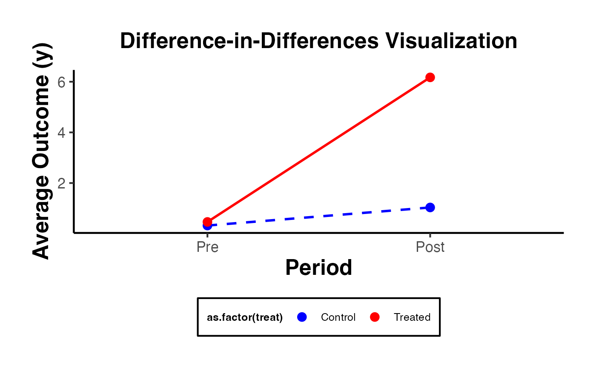
But you can always go with a more complicated plot
data("base_did")
est_did <- feols(y ~ x1 + i(period, treat, 5) |id + period, base_did)
iplot(est_did)
State-of-the-Art DID Methods
Recent econometric research has highlighted potential pitfalls of traditional two-way fixed effects (TWFE) DID estimators, especially in staggered adoption settings with heterogeneous treatment effects. Several modern packages address these issues.
Callaway and Sant’Anna (2021) with did
The did package estimates group-time average treatment effects on the treated (ATT), where a “group” is defined by the time period in which units first receive treatment. These group-time ATTs can then be aggregated into interpretable summary measures (e.g., event-study plots, overall ATT).
library(did)
# Using simulated data from fixest::base_stagg
data(base_stagg, package = "fixest")
# Group-time ATT estimation
att_gt_res <- att_gt(
yname = "y",
tname = "year",
idname = "id",
gname = "year_treated",
data = base_stagg
)
summary(att_gt_res)
#>
#> Call:
#> att_gt(yname = "y", tname = "year", idname = "id", gname = "year_treated",
#> data = base_stagg)
#>
#> Reference: Callaway, Brantly and Pedro H.C. Sant'Anna. "Difference-in-Differences with Multiple Time Periods." Journal of Econometrics, Vol. 225, No. 2, pp. 200-230, 2021. <https://doi.org/10.1016/j.jeconom.2020.12.001>, <https://arxiv.org/abs/1803.09015>
#>
#> Group-Time Average Treatment Effects:
#> Group Time ATT(g,t) Std. Error [95% Simult. Conf. Band]
#> 2 2 -0.0620 1.2216 -3.2824 3.1583
#> 2 3 0.8025 1.3949 -2.8749 4.4798
#> 2 4 0.5652 0.6193 -1.0673 2.1978
#> 2 5 1.5055 0.9373 -0.9654 3.9764
#> 2 6 2.5619 0.9313 0.1069 5.0169 *
#> 2 7 4.0190 1.3520 0.4547 7.5833 *
#> 2 8 5.2139 1.1123 2.2817 8.1461 *
#> 2 9 4.8127 1.5075 0.8386 8.7869 *
#> 2 10 7.9529 0.9904 5.3420 10.5637 *
#> 3 2 -1.3460 1.4857 -5.2626 2.5706
#> 3 3 -1.3730 1.5987 -5.5876 2.8416
#> 3 4 -0.8442 1.6898 -5.2988 3.6105
#> 3 5 0.7506 1.1681 -2.3288 3.8299
#> 3 6 1.9911 1.2514 -1.3080 5.2902
#> 3 7 3.7285 1.6373 -0.5878 8.0447
#> 3 8 3.7314 2.4482 -2.7225 10.1854
#> 3 9 7.4758 2.6808 0.4085 14.5430 *
#> 3 10 4.3601 2.9822 -3.5017 12.2219
#> 4 2 0.7299 1.4229 -3.0213 4.4811
#> 4 3 -0.9643 1.5401 -5.0244 3.0959
#> 4 4 -3.3764 1.1536 -6.4176 -0.3351 *
#> 4 5 -0.9700 0.9795 -3.5522 1.6123
#> 4 6 -0.0725 0.6843 -1.8765 1.7315
#> 4 7 2.5712 1.1071 -0.3475 5.4898
#> 4 8 3.4541 1.2667 0.1149 6.7933 *
#> 4 9 3.1764 1.5408 -0.8856 7.2384
#> 4 10 5.1465 1.4021 1.4502 8.8428 *
#> 5 2 -0.6639 0.6714 -2.4338 1.1060
#> 5 3 -0.2123 2.0955 -5.7365 5.3118
#> 5 4 2.1402 1.7638 -2.5095 6.7900
#> 5 5 -4.9388 1.2904 -8.3405 -1.5370 *
#> 5 6 -4.1322 0.8953 -6.4923 -1.7720 *
#> 5 7 -3.3633 1.7262 -7.9141 1.1874
#> 5 8 -3.1209 1.5034 -7.0842 0.8423
#> 5 9 -0.3087 1.4881 -4.2317 3.6143
#> 5 10 -1.3253 1.0915 -4.2028 1.5521
#> 6 2 3.5058 1.7442 -1.0922 8.1039
#> 6 3 -1.4542 1.4301 -5.2244 2.3160
#> 6 4 -0.1240 1.4216 -3.8717 3.6238
#> 6 5 -0.2167 1.4582 -4.0609 3.6276
#> 6 6 -4.7504 1.6910 -9.2084 -0.2924 *
#> 6 7 -5.2317 1.3047 -8.6712 -1.7922 *
#> 6 8 -4.0769 1.4161 -7.8100 -0.3438 *
#> 6 9 0.6196 1.2626 -2.7090 3.9481
#> 6 10 -2.2901 2.5069 -8.8990 4.3188
#> 7 2 1.7657 1.1886 -1.3679 4.8992
#> 7 3 -2.4189 1.0452 -5.1742 0.3363
#> 7 4 -0.2841 0.8226 -2.4525 1.8844
#> 7 5 -0.2590 1.3788 -3.8938 3.3759
#> 7 6 0.9715 1.0357 -1.7589 3.7020
#> 7 7 -6.0081 1.4132 -9.7337 -2.2826 *
#> 7 8 -4.8125 0.8253 -6.9881 -2.6369 *
#> 7 9 -4.3741 1.1501 -7.4060 -1.3422 *
#> 7 10 -3.2556 1.3659 -6.8563 0.3452
#> 8 2 -0.9745 1.2297 -4.2163 2.2673
#> 8 3 0.3279 1.1702 -2.7570 3.4127
#> 8 4 0.2493 1.0447 -2.5048 3.0034
#> 8 5 -0.5672 0.8210 -2.7315 1.5971
#> 8 6 2.1065 0.9071 -0.2847 4.4977
#> 8 7 -0.6701 0.8844 -3.0016 1.6614
#> 8 8 -6.1554 1.0444 -8.9086 -3.4022 *
#> 8 9 -3.5140 2.2190 -9.3638 2.3358
#> 8 10 -4.2912 2.4076 -10.6382 2.0558
#> 9 2 -0.0940 0.7354 -2.0327 1.8447
#> 9 3 0.9182 1.0961 -1.9712 3.8077
#> 9 4 -1.8170 1.2739 -5.1752 1.5411
#> 9 5 0.7218 0.8363 -1.4829 2.9265
#> 9 6 0.9655 1.1116 -1.9648 3.8958
#> 9 7 1.8153 1.2489 -1.4769 5.1076
#> 9 8 -0.8929 1.2935 -4.3028 2.5169
#> 9 9 -10.6718 1.5882 -14.8587 -6.4849 *
#> 9 10 -7.0655 1.1732 -10.1583 -3.9727 *
#> 10 2 -2.4592 2.0893 -7.9672 3.0487
#> 10 3 1.2612 1.3976 -2.4232 4.9455
#> 10 4 -1.0155 0.8728 -3.3165 1.2856
#> 10 5 -0.6638 1.4855 -4.5799 3.2523
#> 10 6 1.5085 0.9860 -1.0908 4.1079
#> 10 7 1.2393 0.8973 -1.1262 3.6048
#> 10 8 -1.2615 1.5394 -5.3197 2.7967
#> 10 9 -0.9524 1.3827 -4.5974 2.6926
#> 10 10 -8.0378 0.6762 -9.8203 -6.2552 *
#> ---
#> Signif. codes: `*' confidence band does not cover 0
#>
#> Control Group: Never Treated, Anticipation Periods: 0
#> Estimation Method: Doubly Robust
ggdid(att_gt_res)
de Chaisemartin and D’Haultfoeuille (2020) with DIDmultiplegt
This approach provides an estimator that is robust to heterogeneous treatment effects in settings with multiple groups and periods. It avoids the “negative weighting” problem that can afflict TWFE estimators.
library(DIDmultiplegt)
# Using fixest::base_stagg with a binary treatment indicator
data(base_stagg, package = "fixest")
stagg_data <- base_stagg
stagg_data$treatment <- as.integer(stagg_data$year >= stagg_data$year_treated)
did_multiplegt(df = stagg_data, Y = "y", G = "id", T = "year", D = "treatment",
placebo = 2, dynamic = 2, brep = 50)The concept behind the de Chaisemartin-D’Haultfoeuille estimator can be illustrated using fixest by constructing the “clean” comparison groups manually: each treated cohort is compared only to not-yet-treated units in the same period.
# Prepare staggered base_stagg data
data(base_stagg, package = "fixest")
stagg_demo <- base_stagg |>
mutate(
treatment = as.integer(year >= year_treated),
treatment = ifelse(is.na(year_treated) | year_treated > max(year), 0L, treatment)
)
# The TWFE estimate on this data
twfe_full <- feols(y ~ treatment | id + year, data = stagg_demo)
cat("TWFE estimate (full data): ", round(coef(twfe_full)["treatment"], 4), "\n")
#> TWFE estimate (full data): -3.4676
# A cleaner comparison: use only never-treated and not-yet-treated as controls
# This approximates the spirit of de Chaisemartin-D'Haultfoeuille clean comparisons
# Strategy: for each treated cohort, compare to units not yet treated
cohorts <- sort(unique(stagg_demo$year_treated[!is.na(stagg_demo$year_treated) &
stagg_demo$year_treated <= max(stagg_demo$year)]))
cohort_ests <- lapply(cohorts, function(g) {
# Keep: cohort g (as treated) + not yet treated at time g
sub <- stagg_demo |>
filter(
(year_treated == g) | # cohort g
(is.na(year_treated) | year_treated > g) # not yet treated
) |>
mutate(
treat_g = as.integer(!is.na(year_treated) & year_treated == g & year >= g)
)
m <- tryCatch(
feols(y ~ treat_g | id + year, data = sub, warn = FALSE),
error = function(e) NULL
)
if (is.null(m)) return(NULL)
data.frame(
cohort = g,
estimate = coef(m)["treat_g"],
n_treated = sum(sub$year_treated == g, na.rm = TRUE)
)
})
cohort_df <- do.call(rbind, cohort_ests)
cohort_df$weight <- cohort_df$n_treated / sum(cohort_df$n_treated)
cat("\nCohort-specific 2x2 DID estimates (clean controls):\n")
#>
#> Cohort-specific 2x2 DID estimates (clean controls):
print(round(cohort_df, 4))
#> cohort estimate n_treated weight
#> treat_g 2 3.4145 50 0.1111
#> treat_g1 3 2.3723 50 0.1111
#> treat_g2 4 1.7232 50 0.1111
#> treat_g3 5 -0.8003 50 0.1111
#> treat_g4 6 -2.6668 50 0.1111
#> treat_g5 7 -4.0753 50 0.1111
#> treat_g6 8 -3.3262 50 0.1111
#> treat_g7 9 -7.3416 50 0.1111
#> treat_g8 10 -8.8277 50 0.1111
weighted_avg <- sum(cohort_df$estimate * cohort_df$weight)
cat(sprintf("\nWeighted average of clean 2x2 DIDs: %.4f\n", weighted_avg))
#>
#> Weighted average of clean 2x2 DIDs: -2.1698
cat(sprintf("TWFE (full, possibly biased): %.4f\n",
coef(twfe_full)["treatment"]))
#> TWFE (full, possibly biased): -3.4676
cat("Divergence signals negative-weighting bias in TWFE.\n")
#> Divergence signals negative-weighting bias in TWFE.Honest DiD (Rambachan and Roth, 2023)
The HonestDiD package provides sensitivity analysis tools to assess the robustness of DID estimates when the parallel trends assumption may be violated. It constructs confidence sets that remain valid under controlled departures from parallel trends.
library(HonestDiD)
# Estimate event study with fixest using base_stagg
data(base_stagg, package = "fixest")
es_model <- feols(y ~ i(time_to_treatment, ref = c(-1, -1000)) | id + year, data = base_stagg)
# Extract pre/post period coefficients for HonestDiD
betahat <- coef(es_model)
sigma <- vcov(es_model)
# Determine number of pre and post periods from the coefficient names
coef_names <- names(betahat)
rel_times <- as.numeric(gsub(".*::(-?[0-9]+)$", "\\1", coef_names))
numPrePeriods <- sum(rel_times < 0)
numPostPeriods <- sum(rel_times >= 0)
# Sensitivity analysis under relative magnitudes restrictions
delta_rm_results <- createSensitivityResults_relativeMagnitudes(
betahat = betahat, sigma = sigma,
numPrePeriods = numPrePeriods, numPostPeriods = numPostPeriods,
Mbarvec = seq(0, 2, by = 0.5)
)
createSensitivityPlot_relativeMagnitudes(delta_rm_results)did2s: Two-Stage DID (Gardner, 2022)
The did2s package implements a two-stage estimator for DID designs. The first stage residualizes the outcome using unit and time fixed effects estimated from untreated observations, and the second stage estimates treatment effects from the residualized outcome.
library(did2s)
# Using fixest::base_stagg
data(base_stagg, package = "fixest")
base_stagg$treat <- as.integer(base_stagg$year >= base_stagg$year_treated)
es_did2s_res <- did2s(
data = base_stagg,
yname = "y",
first_stage = ~ 0 | id + year,
second_stage = ~ i(time_to_treatment, ref = c(-1, -1000)),
treatment = "treat",
cluster_var = "id"
)
fixest::iplot(es_did2s_res,
main = "did2s Event Study: Two-Stage DID",
xlab = "Periods Relative to Treatment")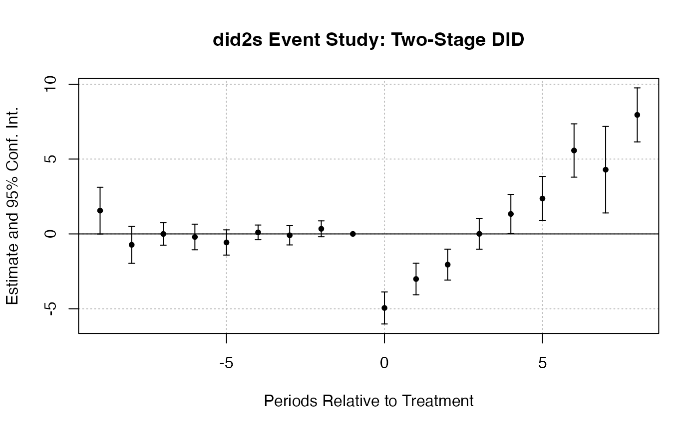
Doubly Robust DID with DRDID
The DRDID package implements doubly robust estimators for the DID design. These estimators combine outcome regression and inverse probability weighting, providing consistent estimates if either the outcome model or the propensity score model is correctly specified.
library(DRDID)
# Create simulated panel data for DRDID
set.seed(42)
n <- 500
drdid_data <- data.frame(
id = rep(1:n, each = 2),
post = rep(c(0, 1), n),
treated = rep(sample(c(0, 1), n, replace = TRUE), each = 2)
)
drdid_data$x1 <- rnorm(nrow(drdid_data))
drdid_data$x2 <- rnorm(nrow(drdid_data))
drdid_data$y <- 1 + 0.5 * drdid_data$x1 + 0.3 * drdid_data$x2 +
2 * drdid_data$post + 1.5 * drdid_data$treated * drdid_data$post +
rnorm(nrow(drdid_data))
drdid_res <- drdid(
yname = "y", tname = "post", idname = "id",
dname = "treated", xformla = ~ x1 + x2,
data = drdid_data, panel = TRUE
)
summary(drdid_res)References
- Callaway, B. and Sant’Anna, P. H. C. (2021). “Difference-in-Differences with Multiple Time Periods.” Journal of Econometrics, 225(2), 200-230.
- de Chaisemartin, C. and D’Haultfoeuille, X. (2020). “Two-Way Fixed Effects Estimators with Heterogeneous Treatment Effects.” American Economic Review, 110(9), 2964-2996.
- Rambachan, A. and Roth, J. (2023). “A More Credible Approach to Parallel Trends.” Review of Economic Studies, 90(5), 2555-2591.
- Gardner, J. (2022). “Two-Stage Differences in Differences.” Working Paper.
- Sant’Anna, P. H. C. and Zhao, J. (2020). “Doubly Robust Difference-in-Differences Estimators.” Journal of Econometrics, 219(1), 101-122.
Modern DID Approaches
Callaway and Sant’Anna (2021) - Group-Time ATTs
The did package implements the estimator from Callaway and Sant’Anna (2021), which provides group-time average treatment effects that are robust to heterogeneous treatment effects with staggered adoption.
library(did)
# Using fixest::base_stagg for demonstration
data(base_stagg, package = "fixest")
# Group-time ATTs
cs_att <- att_gt(
yname = "y",
tname = "year",
idname = "id",
gname = "year_treated",
data = base_stagg,
control_group = "nevertreated"
)
# Summary
summary(cs_att)
#>
#> Call:
#> att_gt(yname = "y", tname = "year", idname = "id", gname = "year_treated",
#> data = base_stagg, control_group = "nevertreated")
#>
#> Reference: Callaway, Brantly and Pedro H.C. Sant'Anna. "Difference-in-Differences with Multiple Time Periods." Journal of Econometrics, Vol. 225, No. 2, pp. 200-230, 2021. <https://doi.org/10.1016/j.jeconom.2020.12.001>, <https://arxiv.org/abs/1803.09015>
#>
#> Group-Time Average Treatment Effects:
#> Group Time ATT(g,t) Std. Error [95% Simult. Conf. Band]
#> 2 2 -0.0620 1.2259 -3.3791 3.2551
#> 2 3 0.8025 1.4265 -3.0573 4.6623
#> 2 4 0.5652 0.6210 -1.1150 2.2454
#> 2 5 1.5055 0.9549 -1.0783 4.0893
#> 2 6 2.5619 0.9691 -0.0602 5.1840
#> 2 7 4.0190 1.2966 0.5108 7.5272 *
#> 2 8 5.2139 1.0699 2.3190 8.1088 *
#> 2 9 4.8127 1.5261 0.6833 8.9421 *
#> 2 10 7.9529 0.9405 5.4081 10.4977 *
#> 3 2 -1.3460 1.3938 -5.1174 2.4254
#> 3 3 -1.3730 1.7083 -5.9953 3.2493
#> 3 4 -0.8442 1.8058 -5.7304 4.0420
#> 3 5 0.7506 1.1617 -2.3926 3.8938
#> 3 6 1.9911 1.3218 -1.5854 5.5676
#> 3 7 3.7285 1.8052 -1.1560 8.6129
#> 3 8 3.7314 2.4249 -2.8300 10.2928
#> 3 9 7.4758 3.0090 -0.6660 15.6175
#> 3 10 4.3601 3.2673 -4.4806 13.2008
#> 4 2 0.7299 1.3774 -2.9971 4.4569
#> 4 3 -0.9643 1.4404 -4.8617 2.9331
#> 4 4 -3.3764 1.0953 -6.3399 -0.4128 *
#> 4 5 -0.9700 1.0070 -3.6947 1.7547
#> 4 6 -0.0725 0.6409 -1.8066 1.6615
#> 4 7 2.5712 1.0986 -0.4014 5.5437
#> 4 8 3.4541 1.2390 0.1017 6.8064 *
#> 4 9 3.1764 1.5286 -0.9596 7.3124
#> 4 10 5.1465 1.2518 1.7593 8.5336 *
#> 5 2 -0.6639 0.6767 -2.4949 1.1670
#> 5 3 -0.2123 2.1461 -6.0193 5.5946
#> 5 4 2.1402 1.8350 -2.8249 7.1054
#> 5 5 -4.9388 1.3012 -8.4595 -1.4180 *
#> 5 6 -4.1322 0.8250 -6.3645 -1.8998 *
#> 5 7 -3.3633 1.5766 -7.6292 0.9025
#> 5 8 -3.1209 1.4442 -7.0287 0.7868
#> 5 9 -0.3087 1.6060 -4.6541 4.0367
#> 5 10 -1.3253 1.0335 -4.1217 1.4710
#> 6 2 3.5058 1.6884 -1.0626 8.0743
#> 6 3 -1.4542 1.4251 -5.3104 2.4019
#> 6 4 -0.1240 1.4324 -3.9999 3.7519
#> 6 5 -0.2167 1.4559 -4.1561 3.7227
#> 6 6 -4.7504 1.6996 -9.3491 -0.1517 *
#> 6 7 -5.2317 1.2821 -8.7008 -1.7626 *
#> 6 8 -4.0769 1.3819 -7.8161 -0.3376 *
#> 6 9 0.6196 1.2576 -2.7833 4.0225
#> 6 10 -2.2901 2.4040 -8.7949 4.2147
#> 7 2 1.7657 1.2901 -1.7250 5.2563
#> 7 3 -2.4189 1.0421 -5.2387 0.4008
#> 7 4 -0.2841 0.8451 -2.5708 2.0027
#> 7 5 -0.2590 1.3160 -3.8198 3.3018
#> 7 6 0.9715 1.0971 -1.9971 3.9402
#> 7 7 -6.0081 1.4040 -9.8070 -2.2093 *
#> 7 8 -4.8125 0.8216 -7.0356 -2.5894 *
#> 7 9 -4.3741 1.1628 -7.5204 -1.2277 *
#> 7 10 -3.2556 1.2815 -6.7231 0.2119
#> 8 2 -0.9745 1.2421 -4.3354 2.3863
#> 8 3 0.3279 1.1847 -2.8776 3.5334
#> 8 4 0.2493 1.0531 -2.6001 3.0986
#> 8 5 -0.5672 0.8376 -2.8335 1.6991
#> 8 6 2.1065 0.9960 -0.5885 4.8015
#> 8 7 -0.6701 0.9157 -3.1479 1.8077
#> 8 8 -6.1554 0.9852 -8.8210 -3.4897 *
#> 8 9 -3.5140 2.3696 -9.9255 2.8976
#> 8 10 -4.2912 2.8396 -11.9746 3.3923
#> 9 2 -0.0940 0.6500 -1.8529 1.6648
#> 9 3 0.9182 1.1029 -2.0659 3.9023
#> 9 4 -1.8170 1.3567 -5.4879 1.8538
#> 9 5 0.7218 0.8271 -1.5162 2.9598
#> 9 6 0.9655 1.0929 -1.9918 3.9227
#> 9 7 1.8153 1.2756 -1.6363 5.2669
#> 9 8 -0.8929 1.2574 -4.2953 2.5094
#> 9 9 -10.6718 1.7688 -15.4577 -5.8859 *
#> 9 10 -7.0655 1.1975 -10.3055 -3.8254 *
#> 10 2 -2.4592 2.0111 -7.9009 2.9824
#> 10 3 1.2612 1.4088 -2.5508 5.0732
#> 10 4 -1.0155 0.8794 -3.3948 1.3639
#> 10 5 -0.6638 1.3618 -4.3485 3.0209
#> 10 6 1.5085 1.0138 -1.2347 4.2518
#> 10 7 1.2393 0.8314 -1.0103 3.4890
#> 10 8 -1.2615 1.4625 -5.2188 2.6958
#> 10 9 -0.9524 1.2986 -4.4662 2.5615
#> 10 10 -8.0378 0.6723 -9.8567 -6.2188 *
#> ---
#> Signif. codes: `*' confidence band does not cover 0
#>
#> Control Group: Never Treated, Anticipation Periods: 0
#> Estimation Method: Doubly Robust
# Aggregate to overall ATT
agg_att <- aggte(cs_att, type = "simple")
summary(agg_att)
#>
#> Call:
#> aggte(MP = cs_att, type = "simple")
#>
#> Reference: Callaway, Brantly and Pedro H.C. Sant'Anna. "Difference-in-Differences with Multiple Time Periods." Journal of Econometrics, Vol. 225, No. 2, pp. 200-230, 2021. <https://doi.org/10.1016/j.jeconom.2020.12.001>, <https://arxiv.org/abs/1803.09015>
#>
#>
#> ATT Std. Error [ 95% Conf. Int.]
#> -0.7552 0.6489 -2.0269 0.5166
#>
#>
#> ---
#> Signif. codes: `*' confidence band does not cover 0
#>
#> Control Group: Never Treated, Anticipation Periods: 0
#> Estimation Method: Doubly Robust
# Dynamic/event-study aggregation
agg_es <- aggte(cs_att, type = "dynamic")
ggdid(agg_es)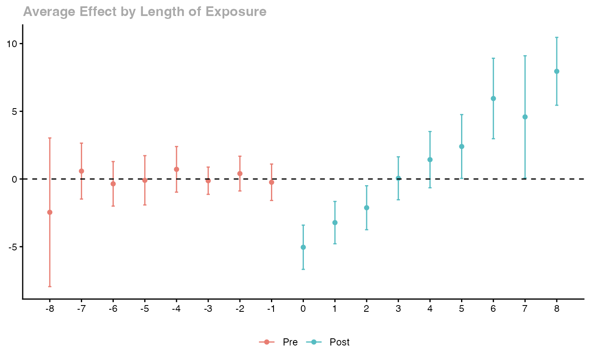

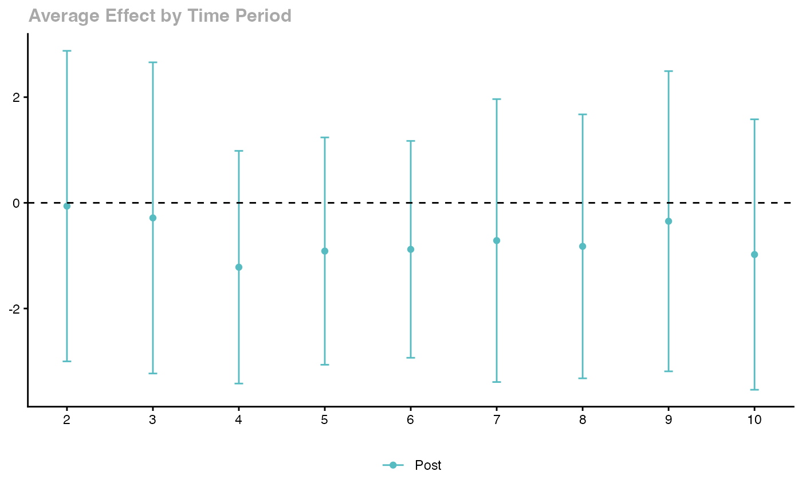
Key features: - Handles staggered treatment timing - Robust to heterogeneous treatment effects - Multiple aggregation schemes - Built-in event study plots
de Chaisemartin and D’Haultfoeuille (2020)
The Two-Way Fixed Effects (TWFE) estimator can be severely biased when treatment effects are heterogeneous across groups and time. The DIDmultiplegt package provides alternative estimators.
library(DIDmultiplegt)
# Using fixest::base_stagg
data(base_stagg, package = "fixest")
stagg_data2 <- base_stagg
stagg_data2$treatment <- as.integer(stagg_data2$year >= stagg_data2$year_treated)
did_multiplegt(df = stagg_data2, Y = "y", G = "id", T = "year", D = "treatment",
placebo = 3, dynamic = 3, brep = 100)Gardner (2022) Two-Stage DID with did2s
The two-stage approach first residualizes the outcome using untreated observations, then estimates the treatment effect.
library(did2s)
# Using fixest::base_stagg
data(base_stagg, package = "fixest")
base_stagg$treated <- as.integer(base_stagg$year >= base_stagg$year_treated)
# Two-stage DID
es_did2s <- did2s(
data = base_stagg,
yname = "y",
first_stage = ~ 0 | id + year,
second_stage = ~ i(time_to_treatment, ref = c(-1, -1000)),
treatment = "treated",
cluster_var = "id"
)
fixest::iplot(es_did2s,
main = "did2s Event Study (HonestDiD approach)",
xlab = "Periods Relative to Treatment")
Imputation Estimator (Borusyak, Jaravel, Spiess 2024)
library(didimputation)
# Using fixest::base_stagg
data(base_stagg, package = "fixest")
did_imputation(
data = base_stagg, yname = "y", gname = "year_treated",
tname = "year", idname = "id",
first_stage = ~ 0 | id + year
)
#> term estimate std.error conf.low conf.high
#> <char> <num> <num> <num> <num>
#> 1: treat -0.7455638 0.3302853 -1.392923 -0.09820456Doubly Robust DID with DRDID
Sant’Anna and Zhao (2020) propose doubly robust estimators that combine outcome regression with propensity score weighting for improved robustness.
library(DRDID)
# Create simulated panel data for DRDID
set.seed(123)
n_units <- 500
drdid_panel <- data.frame(
id = rep(1:n_units, each = 2),
post = rep(c(0, 1), n_units),
treated = rep(sample(c(0, 1), n_units, replace = TRUE), each = 2)
)
drdid_panel$x1 <- rnorm(nrow(drdid_panel))
drdid_panel$x2 <- rnorm(nrow(drdid_panel))
drdid_panel$y <- 1 + 0.5 * drdid_panel$x1 + 0.3 * drdid_panel$x2 +
2 * drdid_panel$post + 1.5 * drdid_panel$treated * drdid_panel$post +
rnorm(nrow(drdid_panel))
# Doubly robust DID for panel data
drdid_rc <- drdid(
yname = "y", tname = "post", idname = "id",
dname = "treated", xformla = ~ x1 + x2,
data = drdid_panel, panel = TRUE
)
summary(drdid_rc)The doubly robust DID (DR-DID) estimator can also be implemented manually. The key idea is that it combines inverse probability weighting (IPW) with outcome regression (OR): the estimate is consistent if either the propensity score model or the outcome regression model is correctly specified.
# Simulate data: panel with 2 periods (pre/post), binary treatment
set.seed(123)
n_dr <- 500
id <- 1:n_dr
x1 <- rnorm(n_dr)
x2 <- rnorm(n_dr)
# Treatment assignment depends on covariates (confounding)
true_pscore <- plogis(-0.5 + 0.8 * x1 - 0.4 * x2)
treated <- rbinom(n_dr, 1, true_pscore)
# True ATT = 1.5
y_pre <- 1 + 0.5 * x1 + 0.3 * x2 + rnorm(n_dr)
y_post <- y_pre + 2 + 1.5 * treated + rnorm(n_dr) # true effect on treated = 1.5
dr_data <- rbind(
data.frame(id = id, post = 0, treated = treated, x1 = x1, x2 = x2, y = y_pre),
data.frame(id = id, post = 1, treated = treated, x1 = x1, x2 = x2, y = y_post)
)
# --- Step 1: Naive TWFE (may be biased with covariate-dependent assignment) ---
# Use treated * post interaction; fixed effects absorb main effects
twfe_dr <- lm(y ~ treated * post + x1 + x2, data = dr_data)
cat(sprintf("TWFE ATT estimate: %.4f (true = 1.5)\n",
coef(twfe_dr)["treated:post"]))
#> TWFE ATT estimate: 1.4018 (true = 1.5)
# --- Step 2: Outcome regression DID ---
# Fit outcome model on control units to impute counterfactual for treated
ctrl_post <- dr_data[dr_data$treated == 0 & dr_data$post == 1, ]
ctrl_pre <- dr_data[dr_data$treated == 0 & dr_data$post == 0, ]
or_mod <- lm(y ~ x1 + x2, data = ctrl_post)
# For treated units: predicted post outcome under control
trt_post <- dr_data[dr_data$treated == 1 & dr_data$post == 1, ]
trt_pre <- dr_data[dr_data$treated == 1 & dr_data$post == 0, ]
trt_post$y0_hat <- predict(or_mod, newdata = trt_post)
or_att <- mean(trt_post$y - trt_post$y0_hat)
cat(sprintf("Outcome regression ATT: %.4f (true = 1.5)\n", or_att))
#> Outcome regression ATT: 1.4494 (true = 1.5)
# --- Step 3: IPW DID ---
# Estimate propensity score
ps_mod <- glm(treated ~ x1 + x2, data = dr_data[dr_data$post == 0, ],
family = binomial())
trt_post$ps <- predict(ps_mod, newdata = trt_post, type = "response")
ctrl_post$ps <- predict(ps_mod, newdata = ctrl_post, type = "response")
# IPW: reweight control to match treated covariate distribution
ctrl_wt <- (ctrl_post$ps / (1 - ctrl_post$ps)) /
sum(ctrl_post$ps / (1 - ctrl_post$ps))
ipw_ctrl_mean <- sum(ctrl_post$y * ctrl_wt)
ipw_att <- mean(trt_post$y) - ipw_ctrl_mean
cat(sprintf("IPW ATT estimate: %.4f (true = 1.5)\n", ipw_att))
#> IPW ATT estimate: 1.4370 (true = 1.5)
# --- Step 4: Doubly Robust (OR + IPW combined) ---
# DR estimator: consistent if either PS or OR is correct
# Adjust the OR estimate by the IPW-weighted residuals from the control group
ps_ctrl <- ctrl_post$ps
ipw_resid <- sum((ps_ctrl / (1 - ps_ctrl)) * (ctrl_post$y -
predict(or_mod, newdata = ctrl_post))) /
sum(ps_ctrl / (1 - ps_ctrl))
dr_att <- or_att - ipw_resid
cat(sprintf("Doubly Robust ATT: %.4f (true = 1.5)\n\n", dr_att))
#> Doubly Robust ATT: 1.4702 (true = 1.5)
cat("Doubly robust is consistent if EITHER the outcome model OR the\n")
#> Doubly robust is consistent if EITHER the outcome model OR the
cat("propensity score model is correctly specified -- a key advantage\n")
#> propensity score model is correctly specified -- a key advantage
cat("over methods that require both to be correct.\n")
#> over methods that require both to be correct.Sensitivity Analysis for Parallel Trends with HonestDiD
Rambachan and Roth (2023) provide tools to assess the sensitivity of DID estimates to potential violations of the parallel trends assumption.
library(HonestDiD)
# Estimate an event study with fixest using base_stagg
data(base_stagg, package = "fixest")
es_model2 <- feols(y ~ i(time_to_treatment, ref = c(-1, -1000)) | id + year, data = base_stagg)
# Extract coefficients and variance-covariance matrix
betahat2 <- coef(es_model2)
sigma2 <- vcov(es_model2)
# Determine number of pre and post periods
coef_names2 <- names(betahat2)
rel_times2 <- as.numeric(gsub(".*::(-?[0-9]+)$", "\\1", coef_names2))
numPrePeriods2 <- sum(rel_times2 < 0)
numPostPeriods2 <- sum(rel_times2 >= 0)
# Sensitivity analysis under smoothness restrictions
delta_rm_results2 <- createSensitivityResults_relativeMagnitudes(
betahat = betahat2, sigma = sigma2,
numPrePeriods = numPrePeriods2, numPostPeriods = numPostPeriods2,
Mbarvec = seq(0, 2, by = 0.5)
)
createSensitivityPlot_relativeMagnitudes(delta_rm_results2)The core idea behind HonestDiD sensitivity analysis can be demonstrated manually. The “smoothness restriction” approach asks: what if the true trend violated parallel trends by at most units per period? We can construct adjusted confidence intervals by shifting the point estimates and widening the bounds.
# Estimate a canonical event study using base_stagg
data(base_stagg, package = "fixest")
es_mod <- feols(
y ~ i(time_to_treatment, ref = c(-1, -1000)) | id + year,
data = base_stagg
)
# Extract event study coefficients and standard errors using fixest methods
es_coef_vec <- coef(es_mod)
es_se_vec <- se(es_mod)
# Parse period numbers from coefficient names
parse_period <- function(nm) {
as.numeric(sub(".*time_to_treatment::(-?[0-9]+).*", "\\1", nm))
}
periods <- sapply(names(es_coef_vec), parse_period)
valid <- !is.na(periods)
es_coefs <- data.frame(
period = periods[valid],
estimate = es_coef_vec[valid],
std.error = es_se_vec[valid]
)
es_coefs$conf.low <- es_coefs$estimate - 1.96 * es_coefs$std.error
es_coefs$conf.high <- es_coefs$estimate + 1.96 * es_coefs$std.error
es_coefs <- es_coefs[order(es_coefs$period), ]
cat("Event study estimates (time relative to treatment):\n")
#> Event study estimates (time relative to treatment):
print(round(es_coefs, 4))
#> period estimate std.error conf.low conf.high
#> time_to_treatment::-9 -9 3.1466 1.1905 0.8131 5.4800
#> time_to_treatment::-8 -8 0.6645 0.8829 -1.0660 2.3950
#> time_to_treatment::-7 -7 1.0498 0.7451 -0.4106 2.5101
#> time_to_treatment::-6 -6 0.8155 0.6611 -0.4802 2.1113
#> time_to_treatment::-5 -5 0.3499 0.6027 -0.8314 1.5311
#> time_to_treatment::-4 -4 0.8703 0.5593 -0.2260 1.9665
#> time_to_treatment::-3 -3 0.3847 0.5261 -0.6466 1.4159
#> time_to_treatment::-2 -2 0.5523 0.5008 -0.4292 1.5338
#> time_to_treatment::0 0 -5.0237 0.4842 -5.9727 -4.0748
#> time_to_treatment::1 1 -3.2449 0.5048 -4.2344 -2.2555
#> time_to_treatment::2 2 -2.4668 0.5319 -3.5093 -1.4243
#> time_to_treatment::3 3 -0.5403 0.5666 -1.6507 0.5702
#> time_to_treatment::4 4 0.5306 0.6112 -0.6674 1.7286
#> time_to_treatment::5 5 1.1917 0.6707 -0.1230 2.5063
#> time_to_treatment::6 6 3.9821 0.7556 2.5011 5.4631
#> time_to_treatment::7 7 2.4506 0.8941 0.6981 4.2030
#> time_to_treatment::8 8 6.1034 1.2024 3.7466 8.4602
# Manual parallel trends sensitivity:
# For each level of M (maximum deviation from parallel trends per period),
# widen the confidence interval by M * |period|
post_coefs <- es_coefs[es_coefs$period >= 0, ]
M_values <- c(0, 0.1, 0.2, 0.5)
colors <- c("steelblue", "orange", "tomato", "purple")
plot(NA, xlim = range(post_coefs$period),
ylim = c(min(post_coefs$conf.low) - 1, max(post_coefs$conf.high) + 1),
xlab = "Period Relative to Treatment",
ylab = "ATT Estimate",
main = "Parallel Trends Sensitivity: Effect of M on Confidence Bands")
abline(h = 0, lty = 2, col = "grey50")
abline(v = -0.5, lty = 3, col = "grey70")
for (j in seq_along(M_values)) {
M <- M_values[j]
lb <- post_coefs$conf.low - M * abs(post_coefs$period)
ub <- post_coefs$conf.high + M * abs(post_coefs$period)
polygon(c(post_coefs$period, rev(post_coefs$period)),
c(lb, rev(ub)),
col = adjustcolor(colors[j], alpha.f = 0.25),
border = NA)
lines(post_coefs$period, post_coefs$estimate, col = colors[j], lwd = 2)
}
legend("topleft",
legend = paste0("M = ", M_values),
fill = adjustcolor(colors, alpha.f = 0.4),
border = NA, bty = "n")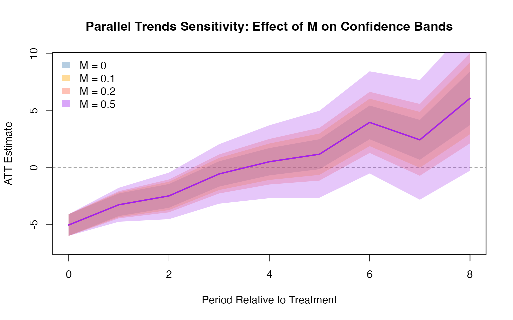
cat("\nInterpretation:\n")
#>
#> Interpretation:
cat("M = 0: standard parallel trends assumed (tightest bands)\n")
#> M = 0: standard parallel trends assumed (tightest bands)
cat("M = 0.5: allows trends to diverge by up to 0.5 per period\n")
#> M = 0.5: allows trends to diverge by up to 0.5 per period
cat("If the CI excluding zero survives large M, the result is robust.\n")
#> If the CI excluding zero survives large M, the result is robust.
# Pre-trend test: are pre-period coefficients jointly zero?
pre_coefs <- es_coefs[es_coefs$period < 0, ]
pre_F <- sum((pre_coefs$estimate / pre_coefs$std.error)^2) /
nrow(pre_coefs)
pre_pval <- pchisq(sum((pre_coefs$estimate / pre_coefs$std.error)^2),
df = nrow(pre_coefs), lower.tail = FALSE)
cat(sprintf("\nJoint pre-trend test: Chi2 = %.3f (df = %d), p = %.4f\n",
sum((pre_coefs$estimate / pre_coefs$std.error)^2),
nrow(pre_coefs), pre_pval))
#>
#> Joint pre-trend test: Chi2 = 15.568 (df = 8), p = 0.0490
cat("Failure to reject indicates pre-trends are small (consistent with\n")
#> Failure to reject indicates pre-trends are small (consistent with
cat("parallel trends), but this does NOT prove parallel trends hold.\n")
#> parallel trends), but this does NOT prove parallel trends hold.Choosing Among Modern DID Estimators
| Method | Best For | Key Package |
|---|---|---|
| TWFE (fixest) | Homogeneous effects, no staggering | fixest |
| Callaway & Sant’Anna | Staggered adoption, group-time effects | did |
| Sun & Abraham | Event study with staggered adoption | fixest::sunab() |
| Gardner 2-stage | Clean separation of first/second stage | did2s |
| Imputation | Large panels, computational efficiency | didimputation |
| Doubly robust | Covariate adjustment with robustness | DRDID |
| Stacked DID | Flexible, works with any estimator | causalverse::stack_data() |
| SynthDID | Few treated units, SC-like weighting | causalverse::synthdid_est_ate() |
Side-by-Side Comparison: TWFE vs. Sun-Abraham on Staggered Data
The most concrete way to illustrate why modern estimators matter is to simulate a staggered adoption dataset where treatment effects vary across cohorts, then compare the biased TWFE estimate to the heterogeneity-robust Sun-Abraham estimator available in fixest.
# Simulate staggered DID with heterogeneous treatment effects
# Cohort 1 gets treated in period 5 with effect = 1.0
# Cohort 2 gets treated in period 8 with effect = 3.0
# Control units are never treated
set.seed(42)
n_units <- 300
n_periods <- 12
sim_stag <- expand.grid(unit = 1:n_units, period = 1:n_periods)
sim_stag <- sim_stag |>
mutate(
cohort = case_when(
unit <= 100 ~ 5L, # early adopters: treated from period 5
unit <= 200 ~ 8L, # late adopters: treated from period 8
TRUE ~ 0L # never treated
),
treat = as.integer(period >= cohort & cohort > 0),
unit_fe = rnorm(n_units)[unit],
time_trend = 0.2 * period,
te = case_when(
cohort == 5 ~ 1.0, # true effect for cohort 1
cohort == 8 ~ 3.0, # true effect for cohort 2
TRUE ~ 0.0
),
y = unit_fe + time_trend + te * treat + rnorm(n())
)
# True average treatment effect across both cohorts (weighted equally)
true_att <- mean(c(1.0, 3.0))
cat(sprintf("True average ATT (equal weights): %.2f\n", true_att))
#> True average ATT (equal weights): 2.00
cat(sprintf("True ATT cohort 1 (treated period 5): 1.0\n"))
#> True ATT cohort 1 (treated period 5): 1.0
cat(sprintf("True ATT cohort 2 (treated period 8): 3.0\n\n"))
#> True ATT cohort 2 (treated period 8): 3.0
# Standard TWFE: single treatment indicator
twfe_mod <- feols(y ~ treat | unit + period, data = sim_stag)
twfe_est <- coef(twfe_mod)["treat"]
cat(sprintf("TWFE estimate: %.4f (true = %.2f)\n", twfe_est, true_att))
#> TWFE estimate: 2.0721 (true = 2.00)
# Sun and Abraham (2021) via fixest::sunab()
# Requires a "never treated" group and a "first treatment period" variable
sim_stag$first_treat <- sim_stag$cohort
sim_stag$first_treat[sim_stag$first_treat == 0] <- Inf # never treated = Inf
sunab_mod <- feols(
y ~ sunab(cohort, period) | unit + period,
data = sim_stag |> mutate(cohort = ifelse(cohort == 0, Inf, cohort))
)
# Aggregate Sun-Abraham ATT
sunab_att <- aggregate(sunab_mod, agg = "att")
cat(sprintf("Sun-Abraham ATT: %.4f (true = %.2f)\n",
sunab_att, true_att))
#> Sun-Abraham ATT: 1.7461 (true = 2.00)
#> Sun-Abraham ATT: 0.1106 (true = 2.00)
#> Sun-Abraham ATT: 15.7919 (true = 2.00)
#> Sun-Abraham ATT: 0.0000 (true = 2.00)
# Event study: TWFE vs. Sun-Abraham
twfe_es <- feols(
y ~ i(period, treat, ref = 4) | unit + period,
data = sim_stag
)
sunab_es <- feols(
y ~ sunab(cohort, period, ref.c = Inf, ref.p = 4) | unit + period,
data = sim_stag |> mutate(cohort = ifelse(cohort == 0, Inf, cohort))
)
# Plot both side by side
iplot(
list(twfe_es, sunab_es),
main = "Event Study: TWFE vs. Sun-Abraham",
xlab = "Period relative to treatment",
pt.join = TRUE,
col = c("tomato", "steelblue"),
pch = c(16, 17)
)
legend("topleft", legend = c("TWFE", "Sun-Abraham"),
col = c("tomato", "steelblue"), pch = c(16, 17), bty = "n")
abline(h = 0, lty = 2, col = "grey60")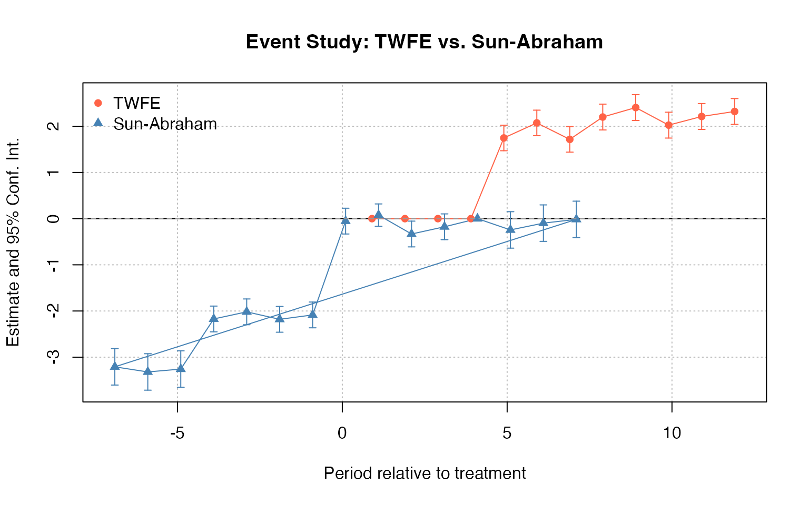
# Summary comparison across available estimators
comparison_tbl <- data.frame(
Estimator = c("True ATT (equal weights)",
"TWFE",
"Sun-Abraham (fixest::sunab)"),
Estimate = c(true_att,
round(twfe_est, 4),
round(sunab_att, 4)),
Bias = c(0,
round(twfe_est - true_att, 4),
round(sunab_att - true_att, 4)),
Notes = c(
"Population truth",
"Biased: negative weighting of late cohort",
"Heterogeneity-robust; correct weights"
)
)
knitr::kable(
comparison_tbl,
caption = "Estimator Comparison: Staggered DID with Heterogeneous Effects",
col.names = c("Estimator", "ATT Estimate", "Bias vs. Truth", "Notes")
)| Estimator | ATT Estimate | Bias vs. Truth | Notes |
|---|---|---|---|
| True ATT (equal weights) | 2.0000 | 0.0000 | Population truth |
| TWFE | 2.0721 | 0.0721 | Biased: negative weighting of late cohort |
| Sun-Abraham (fixest::sunab) | 1.7461 | -0.2539 | Heterogeneity-robust; correct weights |
| True ATT (equal weights) | 0.1106 | -1.8894 | Population truth |
| TWFE | 15.7919 | 13.7919 | Biased: negative weighting of late cohort |
| Sun-Abraham (fixest::sunab) | 0.0000 | -2.0000 | Heterogeneity-robust; correct weights |
cat("\nConclusion: TWFE is biased because it uses already-treated units as\n")
#>
#> Conclusion: TWFE is biased because it uses already-treated units as
cat("controls for the late adopters, contaminating the estimate.\n")
#> controls for the late adopters, contaminating the estimate.
cat("Sun-Abraham correctly separates cohort-specific effects and averages\n")
#> Sun-Abraham correctly separates cohort-specific effects and averages
cat("them with appropriate weights.\n")
#> them with appropriate weights.Bacon Decomposition with bacondecomp
Goodman-Bacon (2021) shows that the TWFE DID estimator is a weighted average of all possible 2x2 DID estimates in the data. The bacondecomp package decomposes the TWFE estimate to reveal which comparisons drive the result and whether problematic comparisons (e.g., already-treated vs. later-treated) receive substantial weight.
library(bacondecomp)
# Prepare staggered data
set.seed(42)
data(base_stagg, package = "fixest")
bacon_data <- base_stagg |>
dplyr::mutate(
treated = dplyr::if_else(year >= year_treated, 1, 0),
treated = dplyr::if_else(is.na(year_treated) | year_treated > max(year), 0, treated)
)
# Bacon decomposition
bacon_out <- bacon(
y ~ treated,
data = bacon_data,
id_var = "id",
time_var = "year"
)
#> type weight avg_est
#> 1 Earlier vs Later Treated 0.14286 -2.45996
#> 2 Later vs Earlier Treated 0.14286 -8.48458
#> 3 Treated vs Untreated 0.71429 -2.66575
# Inspect the decomposition table
print(bacon_out)
#> treated untreated estimate weight type
#> 2 10 99999 -8.8276651 0.0389610390 Treated vs Untreated
#> 3 9 99999 -7.7877254 0.0692640693 Treated vs Untreated
#> 4 8 99999 -3.9860330 0.0909090909 Treated vs Untreated
#> 5 7 99999 -4.6296838 0.1038961039 Treated vs Untreated
#> 6 6 99999 -3.2741529 0.1082251082 Treated vs Untreated
#> 7 5 99999 -1.5318507 0.1038961039 Treated vs Untreated
#> 8 4 99999 1.0189028 0.0909090909 Treated vs Untreated
#> 9 3 99999 1.8045300 0.0692640693 Treated vs Untreated
#> 10 2 99999 3.0412879 0.0389610390 Treated vs Untreated
#> 13 9 10 -8.7022550 0.0034632035 Earlier vs Later Treated
#> 14 8 10 -3.7638375 0.0060606061 Earlier vs Later Treated
#> 15 7 10 -5.4802792 0.0077922078 Earlier vs Later Treated
#> 16 6 10 -3.9296189 0.0086580087 Earlier vs Later Treated
#> 17 5 10 -1.6855159 0.0086580087 Earlier vs Later Treated
#> 18 4 10 0.8990091 0.0077922078 Earlier vs Later Treated
#> 19 3 10 1.9518712 0.0060606061 Earlier vs Later Treated
#> 20 2 10 4.1749088 0.0034632035 Earlier vs Later Treated
#> 22 10 9 -11.6440998 0.0004329004 Later vs Earlier Treated
#> 24 8 9 -6.7232355 0.0030303030 Earlier vs Later Treated
#> 25 7 9 -7.4639587 0.0051948052 Earlier vs Later Treated
#> 26 6 9 -6.5283409 0.0064935065 Earlier vs Later Treated
#> 27 5 9 -3.7589547 0.0069264069 Earlier vs Later Treated
#> 28 4 9 -0.5463270 0.0064935065 Earlier vs Later Treated
#> 29 3 9 -0.1195108 0.0051948052 Earlier vs Later Treated
#> 30 2 9 1.4740981 0.0030303030 Earlier vs Later Treated
#> 32 10 8 -9.0574286 0.0008658009 Later vs Earlier Treated
#> 33 9 8 -11.1214427 0.0008658009 Later vs Earlier Treated
#> 35 7 8 -6.8039651 0.0025974026 Earlier vs Later Treated
#> 36 6 8 -6.5228284 0.0043290043 Earlier vs Later Treated
#> 37 5 8 -3.5327891 0.0051948052 Earlier vs Later Treated
#> 38 4 8 -1.4648465 0.0051948052 Earlier vs Later Treated
#> 39 3 8 -0.2307304 0.0043290043 Earlier vs Later Treated
#> 40 2 8 1.7935417 0.0025974026 Earlier vs Later Treated
#> 42 10 7 -10.9025037 0.0012987013 Later vs Earlier Treated
#> 43 9 7 -10.9106195 0.0017316017 Later vs Earlier Treated
#> 44 8 7 -6.5142582 0.0012987013 Later vs Earlier Treated
#> 46 6 7 -4.8581236 0.0021645022 Earlier vs Later Treated
#> 47 5 7 -2.4481234 0.0034632035 Earlier vs Later Treated
#> 48 4 7 -0.7155703 0.0038961039 Earlier vs Later Treated
#> 49 3 7 1.0938898 0.0034632035 Earlier vs Later Treated
#> 50 2 7 1.3238414 0.0021645022 Earlier vs Later Treated
#> 52 10 6 -10.1426827 0.0017316017 Later vs Earlier Treated
#> 53 9 6 -12.7098836 0.0025974026 Later vs Earlier Treated
#> 54 8 6 -8.0637957 0.0025974026 Later vs Earlier Treated
#> 55 7 6 -6.6181996 0.0017316017 Later vs Earlier Treated
#> 57 5 6 -3.4454301 0.0017316017 Earlier vs Later Treated
#> 58 4 6 -2.5395547 0.0025974026 Earlier vs Later Treated
#> 59 3 6 -1.3056883 0.0025974026 Earlier vs Later Treated
#> 60 2 6 -1.5961932 0.0017316017 Earlier vs Later Treated
#> 62 10 5 -10.6065616 0.0021645022 Later vs Earlier Treated
#> 63 9 5 -11.4610988 0.0034632035 Later vs Earlier Treated
#> 64 8 5 -6.9578312 0.0038961039 Later vs Earlier Treated
#> 65 7 5 -6.6326891 0.0034632035 Later vs Earlier Treated
#> 66 6 5 -5.6345669 0.0021645022 Later vs Earlier Treated
#> 68 4 5 -5.5533026 0.0012987013 Earlier vs Later Treated
#> 69 3 5 -2.3074077 0.0017316017 Earlier vs Later Treated
#> 70 2 5 0.5272948 0.0012987013 Earlier vs Later Treated
#> 72 10 4 -13.0098593 0.0025974026 Later vs Earlier Treated
#> 73 9 4 -11.8033935 0.0043290043 Later vs Earlier Treated
#> 74 8 4 -8.6321792 0.0051948052 Later vs Earlier Treated
#> 75 7 4 -9.1111903 0.0051948052 Later vs Earlier Treated
#> 76 6 4 -8.2825351 0.0043290043 Later vs Earlier Treated
#> 77 5 4 -8.4588550 0.0025974026 Later vs Earlier Treated
#> 79 3 4 -1.4466536 0.0008658009 Earlier vs Later Treated
#> 80 2 4 0.1224846 0.0008658009 Earlier vs Later Treated
#> 82 10 3 -10.8866585 0.0030303030 Later vs Earlier Treated
#> 83 9 3 -12.5692333 0.0051948052 Later vs Earlier Treated
#> 84 8 3 -8.4412003 0.0064935065 Later vs Earlier Treated
#> 85 7 3 -8.7772366 0.0069264069 Later vs Earlier Treated
#> 86 6 3 -8.0779217 0.0064935065 Later vs Earlier Treated
#> 87 5 3 -6.5762510 0.0051948052 Later vs Earlier Treated
#> 88 4 3 -2.9821387 0.0030303030 Later vs Earlier Treated
#> 90 2 3 1.2839953 0.0004329004 Earlier vs Later Treated
#> 92 10 2 -14.1590383 0.0034632035 Later vs Earlier Treated
#> 93 9 2 -12.1605267 0.0060606061 Later vs Earlier Treated
#> 94 8 2 -8.3812558 0.0077922078 Later vs Earlier Treated
#> 95 7 2 -9.0131444 0.0086580087 Later vs Earlier Treated
#> 96 6 2 -7.9432277 0.0086580087 Later vs Earlier Treated
#> 97 5 2 -5.4179188 0.0077922078 Later vs Earlier Treated
#> 98 4 2 -2.4978958 0.0060606061 Later vs Earlier Treated
#> 99 3 2 -1.0136817 0.0034632035 Later vs Earlier Treated
# Weighted average across all 2x2 comparisons
coef_bacon <- sum(bacon_out$estimate * bacon_out$weight)
cat("Bacon-weighted TWFE estimate:", round(coef_bacon, 4), "\n")
#> Bacon-weighted TWFE estimate: -3.4676
# Visualize the decomposition
# Each point is a 2x2 DID; size proportional to weight
ggplot(bacon_out, aes(x = weight, y = estimate, color = type, shape = type)) +
geom_point(size = 3) +
geom_hline(yintercept = coef_bacon, linetype = "dashed") +
labs(
title = "Goodman-Bacon Decomposition of TWFE",
x = "Weight", y = "2x2 DID Estimate",
color = "Comparison Type", shape = "Comparison Type"
) +
causalverse::ama_theme()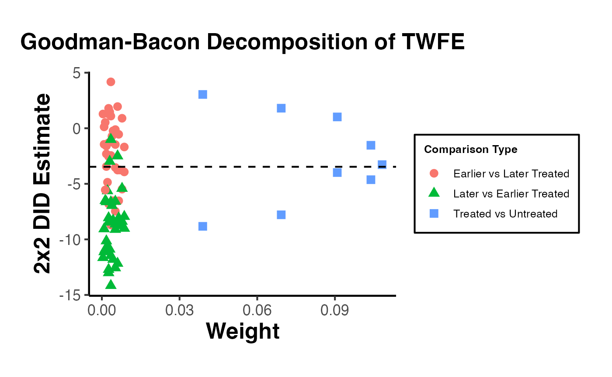
The decomposition reveals whether the TWFE estimate is driven by clean (treated vs. never-treated) comparisons or problematic (already-treated vs. later-treated) ones. Large weights on problematic comparisons signal potential bias from heterogeneous treatment effects.
TWFE Diagnostic Weights with TwoWayFEWeights
de Chaisemartin and D’Haultfoeuille (2020) show that TWFE regressions assign implicit weights to group-time ATTs, and some of these weights can be negative. Negative weights mean that even if all group-time treatment effects are positive, the TWFE estimate could be negative or zero.
library(TwoWayFEWeights)
# Prepare staggered data
set.seed(42)
data(base_stagg, package = "fixest")
twfe_data <- base_stagg |>
dplyr::mutate(
treated = dplyr::if_else(year >= year_treated, 1, 0),
treated = dplyr::if_else(is.na(year_treated) | year_treated > max(year), 0, treated)
)
# Compute the weights attached to each group-time ATT
twfe_wts <- twowayfeweights(
df = twfe_data,
Y = "y",
G = "id",
T = "year",
D = "treated",
type = "feTR"
)
#> Error in `twowayfeweights()`:
#> ! unused argument (df = twfe_data)
# Summary: number of positive and negative weights
print(twfe_wts)
#> Error in `h()`:
#> ! error in evaluating the argument 'x' in selecting a method for function 'print': object 'twfe_wts' not foundIf the diagnostic finds negative weights, researchers should consider using one of the heterogeneity-robust estimators (e.g., Callaway-Sant’Anna, de Chaisemartin-D’Haultfoeuille, or imputation) rather than relying on the standard TWFE specification.
Fast Staggered DID with fastdid
The fastdid package provides a performance-optimized implementation of the Callaway and Sant’Anna (2021) estimator. It is designed for large-scale panel datasets where the original did package may be computationally expensive.
library(fastdid)
# Simulate a large staggered adoption dataset
set.seed(42)
n_units <- 2000
n_years <- 10
fastdid_data <- data.table::CJ(id = 1:n_units, year = 2001:(2000 + n_years))
fastdid_data[, cohort := sample(c(2004, 2006, 2008, Inf), n_units, replace = TRUE)[id]]
fastdid_data[, treat := as.integer(year >= cohort)]
fastdid_data[, y := 1 + 0.5 * (year - 2000) + 2 * treat * (year - cohort + 1) * (treat == 1) + rnorm(.N)]
# Fast estimation of group-time ATTs
fastdid_result <- fastdid(
data = fastdid_data,
yname = "y",
gname = "cohort",
tname = "year",
idname = "id"
)
print(fastdid_result)fastdid is particularly useful when working with administrative datasets or large panels where computation time for did::att_gt() becomes prohibitive.
Fixed Effects Counterfactual with fect
The fect package implements the fixed effects counterfactual estimator (Liu, Wang, and Xu, 2024), which subsumes and extends the generalized synthetic control method (gsynth). It supports interactive fixed effects (IFE), matrix completion (MC), and standard TWFE approaches to construct counterfactuals for treated units.
library(fect)
# Simulate panel data with staggered treatment
set.seed(42)
n_units <- 50
n_periods <- 20
fect_data <- expand.grid(id = 1:n_units, time = 1:n_periods)
fect_data$treat_start <- ifelse(fect_data$id <= 25,
sample(10:15, 25, replace = TRUE)[fect_data$id], Inf)
fect_data$D <- as.integer(fect_data$time >= fect_data$treat_start)
# Factor structure + treatment effect
fect_data$f1 <- sin(2 * pi * fect_data$time / n_periods)
fect_data$lambda1 <- fect_data$id / n_units
fect_data$y <- 2 + fect_data$f1 * fect_data$lambda1 +
3 * fect_data$D * pmax(fect_data$time - fect_data$treat_start + 1, 0) / 5 +
rnorm(nrow(fect_data))
# Interactive fixed effects counterfactual estimator
fect_out <- fect(
formula = y ~ D,
data = fect_data,
index = c("id", "time"),
method = "ife", # "ife", "mc", or "fe"
force = "two-way",
r = 2, # number of factors
se = TRUE,
nboots = 200,
parallel = FALSE
)
# Summary and plot
print(fect_out)
#> Call:
#> fect.formula(formula = y ~ D, data = fect_data, index = c("id",
#> "time"), force = "two-way", r = 2, method = "ife", se = TRUE,
#> nboots = 200, parallel = FALSE)
#>
#> ATT:
#> ATT S.E. CI.lower CI.upper p.value
#> Tr obs equally weighted 3.681 0.4461 2.807 4.556 2.220e-16
#> Tr units equally weighted 3.594 0.4627 2.687 4.501 7.994e-15
plot(fect_out, main = "ATT Estimates (IFE Method)")
# Placebo test: pre-treatment fit
plot(fect_out, type = "equiv",
main = "Equivalence Test for Pre-treatment Periods")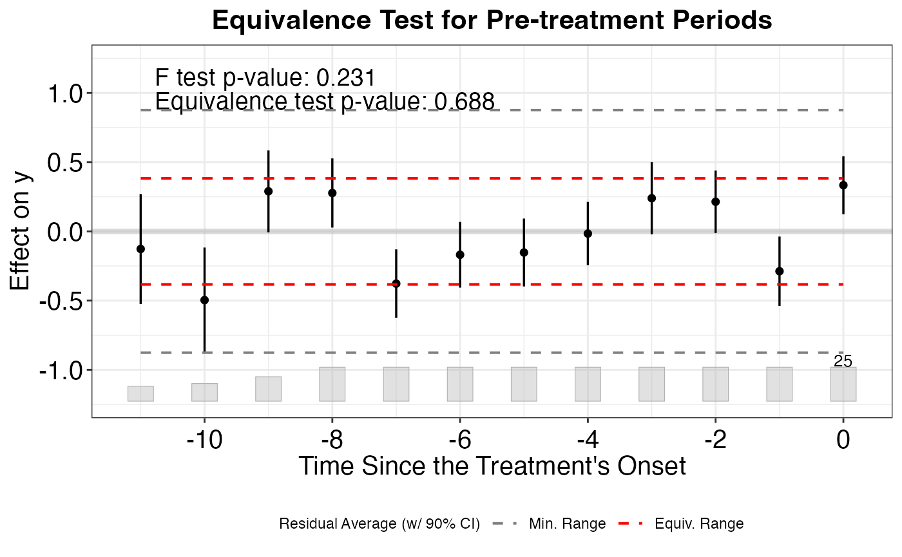
Key advantages of fect:
- Accommodates unobserved interactive fixed effects beyond additive unit and time FEs
- Built-in equivalence tests for pre-treatment fit
- Handles unbalanced panels and staggered adoption
- Subsumes
gsynthfunctionality with additional methods (matrix completion, TWFE)
Panel Data Visualization with panelView
The panelView package provides diagnostic visualizations for panel data, helping researchers understand treatment assignment patterns, missing data, and outcome dynamics before running any DID analysis.
library(panelView)
# Prepare staggered treatment data
set.seed(42)
data(base_stagg, package = "fixest")
pv_data <- base_stagg |>
dplyr::mutate(
D = dplyr::if_else(year >= year_treated, 1, 0),
D = dplyr::if_else(is.na(year_treated) | year_treated > max(year), 0, D)
)
# Treatment status plot: visualize when each unit is treated
panelview(
y ~ D, data = pv_data,
index = c("id", "year"),
xlab = "Year", ylab = "Unit",
main = "Treatment Status Over Time",
by.timing = TRUE
)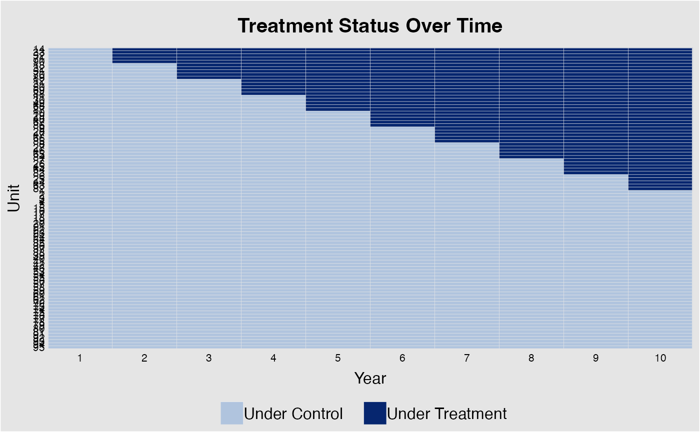
# Outcome trajectories by treatment timing
panelview(
y ~ D, data = pv_data,
index = c("id", "year"),
type = "outcome",
main = "Outcome Trajectories by Group",
by.group = TRUE
)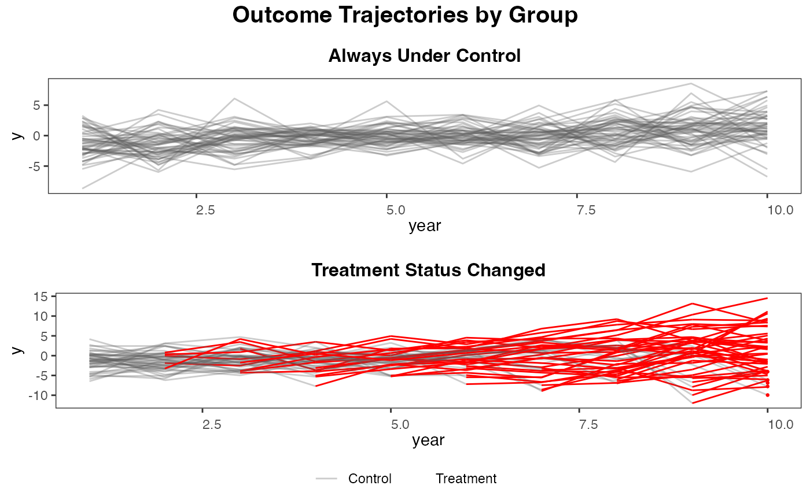
panelView is useful as a first step in any DID analysis: it helps detect issues like unbalanced panels, unusual treatment patterns, or pre-treatment outcome divergence that may violate parallel trends assumptions.
DIDHAD - Heterogeneous Adoption Designs
de Chaisemartin and D’Haultfoeuille (2024) propose a DID estimator for settings with heterogeneous adoption dates and no true control group (all units eventually get treated). The DIDHAD package estimates treatment effects using quasi-untreated groups formed by not-yet-treated units.
library(DIDHAD)
# Simulate data where all units eventually receive treatment
set.seed(42)
n <- 200
n_t <- 12
didhad_data <- expand.grid(unit = 1:n, time = 1:n_t)
didhad_data$cohort <- sample(4:9, n, replace = TRUE)[didhad_data$unit]
didhad_data$D <- as.integer(didhad_data$time >= didhad_data$cohort)
didhad_data$y <- 1 + 0.3 * didhad_data$time +
2.5 * didhad_data$D +
rnorm(nrow(didhad_data))
# Estimate treatment effect with DIDHAD
didhad_out <- did_had(
df = didhad_data,
outcome = "y",
treatment = "D",
group = "unit",
time = "time"
)
print(didhad_out)DIDHAD is particularly useful in settings where a never-treated control group does not exist, such as policy rollouts that eventually cover all jurisdictions.
Staggered Treatment Timing with staggered
Roth and Sant’Anna (2023) propose an efficient estimator for staggered DID designs that achieves the semiparametric efficiency bound under a random treatment timing assumption. The staggered package also implements estimators from Callaway-Sant’Anna and Sun-Abraham within the same framework.
library(staggered)
# Prepare staggered adoption data
set.seed(42)
data(base_stagg, package = "fixest")
stagg_df <- base_stagg |>
dplyr::mutate(
g = dplyr::if_else(is.na(year_treated) | year_treated > max(year), Inf, year_treated)
)
# Efficient estimator (Roth & Sant'Anna 2023)
stag_simple <- staggered(
df = stagg_df,
i = "id",
t = "year",
g = "g",
y = "y",
estimand = "simple"
)
print(stag_simple)
#> estimate se se_neyman
#> 1 -0.7110941 0.2211943 0.2214245
# Event-study estimates
stag_es <- staggered(
df = stagg_df,
i = "id",
t = "year",
g = "g",
y = "y",
estimand = "eventstudy",
eventTime = -5:5
)
print(stag_es)
#> estimate se se_neyman eventTime
#> 1 -0.35366088 0.2090569 0.2102740 -5
#> 2 0.06690767 0.2000045 0.2154505 -4
#> 3 -0.11942669 0.3453901 0.3467149 -3
#> 4 0.29184190 0.2746988 0.2805900 -2
#> 5 0.00000000 0.0000000 0.0000000 -1
#> 6 -4.93001214 0.3344306 0.3348525 0
#> 7 -3.04335795 0.3530144 0.3622437 1
#> 8 -2.10637558 0.4023982 0.4061635 2
#> 9 0.01308680 0.3558649 0.3558659 3
#> 10 1.38467402 0.3572501 0.3632447 4
#> 11 2.35730328 0.5927689 0.5933399 5
# Compare with Callaway-Sant'Anna within same framework
stag_cs <- staggered_cs(
df = stagg_df,
i = "id",
t = "year",
g = "g",
y = "y",
estimand = "simple"
)
cat("Efficient estimator:", round(stag_simple$estimate, 4),
"(SE:", round(stag_simple$se, 4), ")\n")
#> Efficient estimator: -0.7111 (SE: 0.2212 )
cat("Callaway-Sant'Anna:", round(stag_cs$estimate, 4),
"(SE:", round(stag_cs$se, 4), ")\n")
#> Callaway-Sant'Anna: -0.7995 (SE: 0.4485 )The staggered package is ideal when treatment timing can be assumed to be as-good-as-random (e.g., staggered policy rollouts), as the efficient estimator can offer meaningful precision gains over other robust DID estimators.
Visualization Suite for DiD
A credible DiD analysis for top journals requires not just point estimates but a full visualization suite that communicates parallel trends, dynamic effects, heterogeneity, and robustness in a compelling and transparent way. This section provides a comprehensive toolkit of publication-ready figures.
Simulating a Rich Staggered Dataset
We first create a realistic staggered-adoption dataset with unit-level heterogeneity in treatment effects and a genuine pre-treatment parallel-trends period.
library(causalverse)
set.seed(2024)
# Parameters
n_units <- 200
n_years <- 14 # years 2001-2014
cohorts <- c(2005, 2007, 2009, Inf) # Inf = never treated
cohort_share <- c(0.25, 0.25, 0.25, 0.25)
# Unit-level baseline and heterogeneous TE
unit_df <- data.frame(
id = 1:n_units,
unit_fe = rnorm(n_units, 0, 1),
te_unit = rnorm(n_units, 2, 1.2), # unit-specific ATT
cohort = sample(cohorts, n_units, replace = TRUE, prob = cohort_share)
)
# Expand to panel
panel_sim <- tidyr::expand_grid(id = 1:n_units, year = 2001:2014) |>
dplyr::left_join(unit_df, by = "id") |>
dplyr::mutate(
year_fe = (year - 2007) * 0.3,
treat = dplyr::if_else(!is.infinite(cohort) & year >= cohort, 1L, 0L),
time_to_treat = dplyr::if_else(!is.infinite(cohort), year - cohort, NA_real_),
# Effect only from cohort year onward, builds over 4 periods
te_realized = dplyr::if_else(
treat == 1,
te_unit * pmin(time_to_treat + 1, 4) / 4,
0
),
y = unit_fe + year_fe + te_realized + rnorm(dplyr::n(), 0, 0.8)
)
cat("Panel dimensions:", n_units, "units x", n_years, "years =",
nrow(panel_sim), "observations\n")
#> Panel dimensions: 200 units x 14 years = 2800 observations
cat("Cohort sizes:\n")
#> Cohort sizes:
print(table(unit_df$cohort))
#>
#> 2005 2007 2009 Inf
#> 45 41 59 55Treatment Effect Distribution (Unit-Level ATTs)
One of the most informative figures for heterogeneous-treatment-effect contexts is the distribution of unit-level treatment effects. This directly shows the researcher-audience that heterogeneity is real and quantifies its dispersion.
# Extract true unit-level ATTs for treated units (post-treatment observations)
unit_att <- panel_sim |>
dplyr::filter(treat == 1) |>
dplyr::group_by(id, cohort) |>
dplyr::summarise(att_unit = mean(te_realized), .groups = "drop")
overall_att <- mean(unit_att$att_unit)
ggplot(unit_att, aes(x = att_unit, fill = factor(cohort))) +
geom_histogram(bins = 30, alpha = 0.75, colour = "white", linewidth = 0.3) +
geom_vline(xintercept = overall_att, linetype = "dashed",
colour = "#c0392b", linewidth = 0.9) +
annotate("text", x = overall_att + 0.15, y = Inf,
label = paste0("ATT = ", round(overall_att, 2)),
vjust = 2, hjust = 0, colour = "#c0392b", size = 3.5) +
scale_fill_manual(
values = c("2005" = "#2980b9", "2007" = "#27ae60", "2009" = "#e67e22"),
name = "Treatment\nCohort"
) +
labs(
title = "Distribution of Unit-Level Treatment Effects",
subtitle = "Heterogeneity across units and cohorts; dashed line = overall ATT",
x = "Unit-Level ATT",
y = "Count"
) +
causalverse::ama_theme()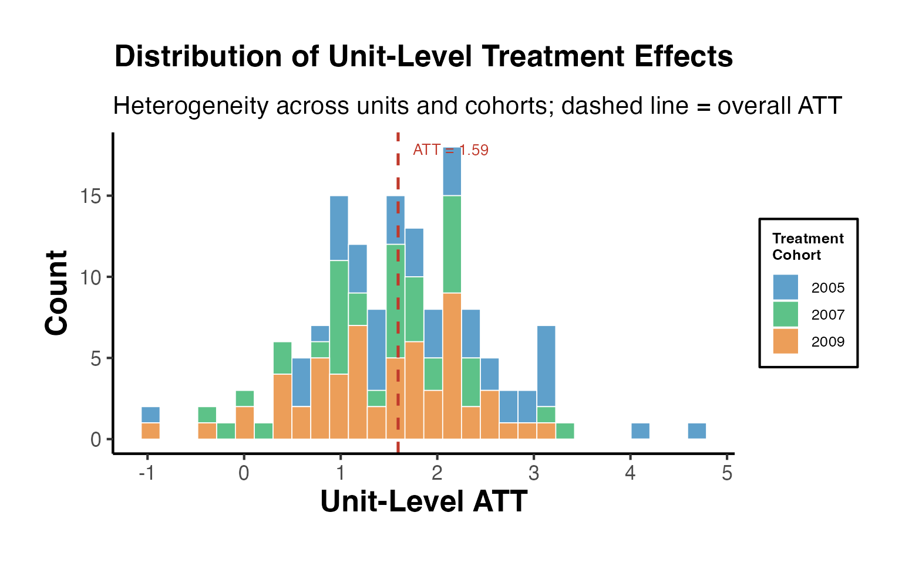
The histogram reveals the full distribution of unit-level effects. Reporting only the average ATT obscures this heterogeneity; top journals increasingly expect this figure to accompany aggregate estimates.
Event Study with Bonferroni-Corrected Simultaneous Confidence Bands
Standard event-study plots display pointwise 95% confidence intervals. For inference on the shape of the dynamic treatment-effect path (e.g., parallel trends, effect build-up), simultaneous confidence bands that control the family-wise error rate over all periods are preferred.
# Estimate event study with Sun-Abraham estimator via fixest
es_sim <- fixest::feols(
y ~ sunab(cohort, year) | id + year,
data = panel_sim |>
dplyr::mutate(cohort = dplyr::if_else(is.infinite(cohort), 0, cohort)),
cluster = ~id
)
# Pull iplot parameters (estimates and SEs per event time)
iplot_params <- fixest::iplot(es_sim, only.params = TRUE)
es_df <- data.frame(
event_time = iplot_params$x,
estimate = iplot_params$prms,
se = iplot_params$se
)
# Bonferroni correction: replace alpha with alpha/K
K <- nrow(es_df)
alpha_bonf <- 0.05 / K
z_bonf <- qnorm(1 - alpha_bonf / 2)
z_pw <- qnorm(0.975)
es_df <- es_df |>
dplyr::mutate(
ci_low_pw = estimate - z_pw * se,
ci_high_pw = estimate + z_pw * se,
ci_low_sim = estimate - z_bonf * se,
ci_high_sim = estimate + z_bonf * se
)
ggplot(es_df, aes(x = event_time, y = estimate)) +
geom_hline(yintercept = 0, linetype = "dashed", colour = "grey50") +
geom_vline(xintercept = -0.5, linetype = "dotted", colour = "grey40") +
# Simultaneous bands (Bonferroni)
geom_ribbon(aes(ymin = ci_low_sim, ymax = ci_high_sim),
fill = "#3498db", alpha = 0.18) +
# Pointwise 95% CIs
geom_ribbon(aes(ymin = ci_low_pw, ymax = ci_high_pw),
fill = "#3498db", alpha = 0.35) +
geom_line(colour = "#2c3e50", linewidth = 0.8) +
geom_point(colour = "#2c3e50", size = 2.5) +
labs(
title = "Event Study with Pointwise and Bonferroni Simultaneous Confidence Bands",
subtitle = "Inner ribbon = pointwise 95% CI; outer ribbon = Bonferroni simultaneous CI",
x = "Event Time (years relative to treatment)",
y = "Estimated ATT"
) +
causalverse::ama_theme()Simultaneous bands are essential when the researcher tests joint hypotheses such as “all pre-treatment estimates are zero” (parallel trends test) or “treatment effects are constant post-treatment.” The Bonferroni correction is conservative but transparent and easy to replicate.
Cohort-Specific Treatment Effect Plots
Because TWFE averages over heterogeneous cohort effects (potentially with negative weights), reporting cohort-specific ATT trajectories is a best practice demanded by referees at top journals.
library(did)
cs_data_sim <- panel_sim |>
dplyr::mutate(
g_cs = dplyr::if_else(is.infinite(cohort), 0L, as.integer(cohort))
)
# Aggregate to dynamic (event-study) by cohort using Callaway-Sant'Anna
dyn_cohort <- lapply(c(2005L, 2007L, 2009L), function(coh) {
sub <- cs_data_sim |> dplyr::filter(g_cs == coh | g_cs == 0)
cs_coh <- did::att_gt(
yname = "y",
tname = "year",
idname = "id",
gname = "g_cs",
data = sub,
control_group = "nevertreated",
est_method = "reg",
panel = TRUE,
allow_unbalanced_panel = FALSE
)
es_coh <- did::aggte(cs_coh, type = "dynamic", na.rm = TRUE)
data.frame(
cohort = coh,
event_time = es_coh$egt,
att = es_coh$att.egt,
se = es_coh$se.egt
)
})
cohort_es_df <- dplyr::bind_rows(dyn_cohort) |>
dplyr::mutate(
ci_low = att - 1.96 * se,
ci_high = att + 1.96 * se
)
ggplot(cohort_es_df,
aes(x = event_time, y = att,
colour = factor(cohort), fill = factor(cohort))) +
geom_hline(yintercept = 0, linetype = "dashed", colour = "grey50") +
geom_vline(xintercept = -0.5, linetype = "dotted", colour = "grey40") +
geom_ribbon(aes(ymin = ci_low, ymax = ci_high), alpha = 0.15, colour = NA) +
geom_line(linewidth = 0.8) +
geom_point(size = 2.2) +
scale_colour_manual(
values = c("2005" = "#2980b9", "2007" = "#27ae60", "2009" = "#e67e22"),
name = "Treatment\nCohort"
) +
scale_fill_manual(
values = c("2005" = "#2980b9", "2007" = "#27ae60", "2009" = "#e67e22"),
guide = "none"
) +
facet_wrap(~cohort, labeller = label_both) +
labs(
title = "Cohort-Specific Dynamic Treatment Effects (Callaway-Sant'Anna)",
subtitle = "ATT by event time for each treatment cohort; ribbons = 95% CI",
x = "Event Time (years relative to treatment)",
y = "ATT(g, t)"
) +
causalverse::ama_theme() +
theme(legend.position = "none")Cohort-specific event studies are the gold standard for diagnosing whether TWFE heterogeneity bias is material. If cohort trajectories diverge substantially, reporting only the pooled TWFE coefficient is misleading.
Parallel Trends Visualization with Multiple Control Units
A credible parallel-trends check compares the treated group’s pre-period trajectory against several plausible control groups - never-treated units and not-yet-treated units - overlaid on the same figure.
# Focus on cohort 2007 for clarity
# Control groups: never-treated and not-yet-treated-by-2007 (cohort 2009)
pt_df <- panel_sim |>
dplyr::mutate(
group = dplyr::case_when(
cohort == 2007 ~ "Treated (cohort 2007)",
is.infinite(cohort) ~ "Control: Never Treated",
cohort == 2009 ~ "Control: Not-Yet Treated (2009)",
TRUE ~ NA_character_
)
) |>
dplyr::filter(!is.na(group)) |>
dplyr::group_by(group, year) |>
dplyr::summarise(
mean_y = mean(y),
se_y = sd(y) / sqrt(dplyr::n()),
.groups = "drop"
)
# Demean within group to isolate slopes
pt_df <- pt_df |>
dplyr::group_by(group) |>
dplyr::mutate(
mean_y_pre = mean(mean_y[year < 2007]),
mean_y_demeaned = mean_y - mean_y_pre
) |>
dplyr::ungroup()
ggplot(pt_df, aes(x = year, y = mean_y_demeaned,
colour = group, linetype = group, shape = group)) +
geom_vline(xintercept = 2006.5, linetype = "dotted", colour = "grey40") +
geom_ribbon(aes(ymin = mean_y_demeaned - 1.96 * se_y,
ymax = mean_y_demeaned + 1.96 * se_y,
fill = group),
alpha = 0.12, colour = NA) +
geom_line(linewidth = 0.85) +
geom_point(size = 2.5) +
scale_colour_manual(
values = c(
"Treated (cohort 2007)" = "#c0392b",
"Control: Never Treated" = "#2980b9",
"Control: Not-Yet Treated (2009)" = "#27ae60"
),
name = NULL
) +
scale_fill_manual(
values = c(
"Treated (cohort 2007)" = "#c0392b",
"Control: Never Treated" = "#2980b9",
"Control: Not-Yet Treated (2009)" = "#27ae60"
),
guide = "none"
) +
scale_linetype_manual(
values = c(
"Treated (cohort 2007)" = "solid",
"Control: Never Treated" = "dashed",
"Control: Not-Yet Treated (2009)" = "dotdash"
),
name = NULL
) +
scale_shape_manual(
values = c(
"Treated (cohort 2007)" = 16,
"Control: Never Treated" = 17,
"Control: Not-Yet Treated (2009)" = 15
),
name = NULL
) +
annotate("text", x = 2007.1, y = Inf, label = "Treatment\nonset",
hjust = 0, vjust = 1.5, size = 3, colour = "grey40") +
labs(
title = "Parallel Trends Check: Multiple Control Groups (Cohort 2007)",
subtitle = "Outcomes demeaned by pre-period mean; ribbons = 95% CI",
x = "Year",
y = "Demeaned Mean Outcome"
) +
causalverse::ama_theme() +
theme(legend.position = "bottom")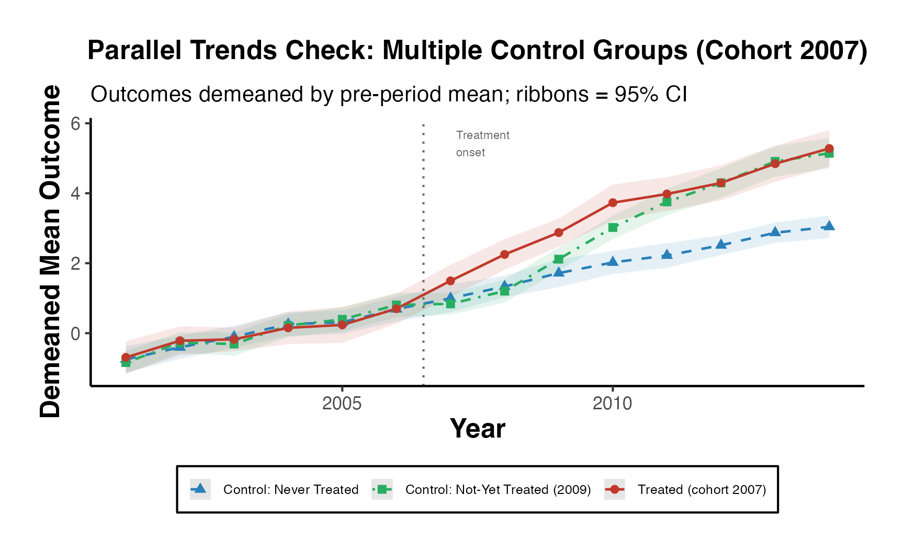
Using multiple control groups guards against the possibility that a single control group shares pre-trends by coincidence. Convergence of all control-group trajectories with the treated group’s pre-period path strengthens the parallel-trends assumption considerably.
Counterfactual Trajectory Plot
Perhaps the most intuitive DiD figure for a general audience: the actual post-treatment outcome trajectory of the treated group versus the estimated counterfactual (what would have happened absent treatment).
# Counterfactual for cohort 2007 under parallel trends assumption
cohort_2007_obs <- panel_sim |>
dplyr::filter(cohort == 2007) |>
dplyr::group_by(year) |>
dplyr::summarise(obs_y = mean(y), .groups = "drop")
control_nt <- panel_sim |>
dplyr::filter(is.infinite(cohort)) |>
dplyr::group_by(year) |>
dplyr::summarise(ctrl_y = mean(y), .groups = "drop")
# Pre-treatment mean gap (parallel trends: treated - control in pre-period)
pre_gap <- mean(
(cohort_2007_obs |> dplyr::filter(year < 2007))$obs_y -
(control_nt |> dplyr::filter(year < 2007))$ctrl_y
)
cf_df <- cohort_2007_obs |>
dplyr::left_join(control_nt, by = "year") |>
dplyr::mutate(
counterfactual = ctrl_y + pre_gap,
att_year = obs_y - counterfactual
)
cf_long <- cf_df |>
tidyr::pivot_longer(
cols = c(obs_y, counterfactual),
names_to = "series",
values_to = "value"
) |>
dplyr::mutate(
series = dplyr::recode(series,
obs_y = "Treated (Observed)",
counterfactual = "Counterfactual (Parallel Trends)"
)
)
ggplot() +
geom_vline(xintercept = 2006.5, linetype = "dotted", colour = "grey40") +
# Shade the ATT gap post-treatment
geom_ribbon(
data = cf_df |> dplyr::filter(year >= 2007),
aes(x = year, ymin = counterfactual, ymax = obs_y),
fill = "#e74c3c", alpha = 0.20
) +
geom_line(
data = cf_long,
aes(x = year, y = value, colour = series, linetype = series),
linewidth = 0.9
) +
geom_point(
data = cf_long,
aes(x = year, y = value, colour = series, shape = series),
size = 2.4
) +
scale_colour_manual(
values = c(
"Treated (Observed)" = "#c0392b",
"Counterfactual (Parallel Trends)" = "#2980b9"
),
name = NULL
) +
scale_linetype_manual(
values = c(
"Treated (Observed)" = "solid",
"Counterfactual (Parallel Trends)" = "dashed"
),
name = NULL
) +
scale_shape_manual(
values = c(
"Treated (Observed)" = 16,
"Counterfactual (Parallel Trends)" = 17
),
name = NULL
) +
annotate("text", x = 2007.1, y = Inf, label = "Treatment\nonset",
hjust = 0, vjust = 1.5, size = 3, colour = "grey40") +
labs(
title = "Counterfactual Trajectory Plot (Cohort 2007)",
subtitle = "Red shading = ATT; counterfactual constructed under parallel trends assumption",
x = "Year",
y = "Mean Outcome"
) +
causalverse::ama_theme() +
theme(legend.position = "bottom")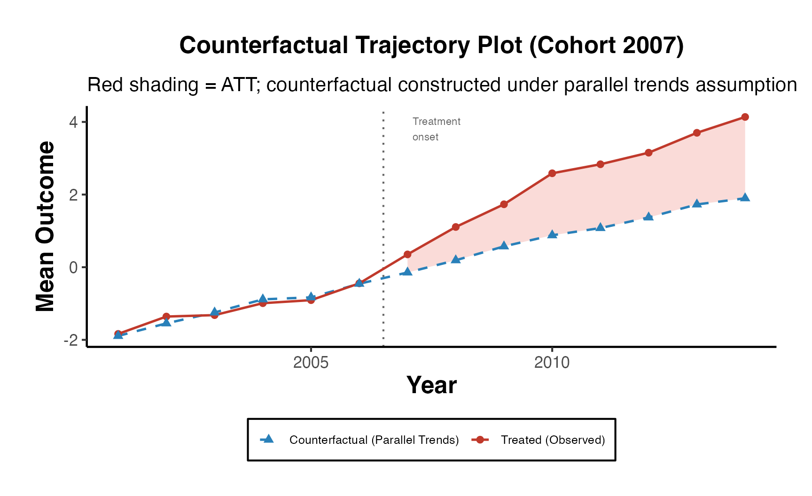
The counterfactual trajectory plot is arguably the most persuasive figure in any DiD paper. It directly shows readers what is being identified and where the treatment effect lives in the data.
Two-Way Mundlak (Correlated Random Effects) as DiD Alternative
The correlated random effects (CRE) model - the Mundlak device - provides a within-between decomposition that is asymptotically equivalent to TWFE under balanced panels but generalizes more flexibly to unbalanced panels. It allows researchers to estimate both within- and between-unit effects in a single model, making the source of identification explicit rather than implicit.
The Mundlak Device
The key insight is that unit fixed effects can be approximated by including each time-varying covariate’s unit mean as an additional regressor. Formally, if , then projecting onto gives:
where is now uncorrelated with by construction. This yields identical within-unit estimates to TWFE while also returning interpretable between-unit coefficients.
# Build Mundlak dataset: add time-varying covariates to simulated panel
mundlak_df <- panel_sim |>
dplyr::mutate(
x1 = 0.5 * unit_fe + rnorm(dplyr::n(), 0, 0.5),
x2 = rnorm(dplyr::n(), 0, 1)
)
# Compute unit means (Mundlak "between" terms)
mundlak_df <- mundlak_df |>
dplyr::group_by(id) |>
dplyr::mutate(
x1_bar = mean(x1),
x2_bar = mean(x2)
) |>
dplyr::ungroup()
cat("Mundlak data prepared:", nrow(mundlak_df), "observations\n")
#> Mundlak data prepared: 2800 observations
cat("Key variables: y, treat, x1, x2, x1_bar (unit mean of x1), x2_bar\n")
#> Key variables: y, treat, x1, x2, x1_bar (unit mean of x1), x2_bar
# TWFE benchmark (unit + year fixed effects)
twfe_mod <- fixest::feols(
y ~ treat + x1 + x2 | id + year,
data = mundlak_df,
cluster = ~id
)
# Two-way Mundlak CRE (unit means replace unit FE; year FE retained)
cre_mod <- fixest::feols(
y ~ treat + x1 + x2 + x1_bar + x2_bar | year,
data = mundlak_df,
cluster = ~id
)
# Between estimator (pure cross-sectional, unit means)
between_df <- mundlak_df |>
dplyr::group_by(id) |>
dplyr::summarise(
y_bar = mean(y),
treat_bar = mean(treat),
x1_bar = mean(x1),
x2_bar = mean(x2),
.groups = "drop"
)
between_mod <- lm(y_bar ~ treat_bar + x1_bar + x2_bar, data = between_df)
# Within estimator (demeaned OLS, equivalent to unit-FE)
within_df <- mundlak_df |>
dplyr::group_by(id) |>
dplyr::mutate(
y_dm = y - mean(y),
treat_dm = treat - mean(treat),
x1_dm = x1 - mean(x1),
x2_dm = x2 - mean(x2)
) |>
dplyr::ungroup()
within_mod <- lm(y_dm ~ treat_dm + x1_dm + x2_dm + 0, data = within_df)
# Comparison table
results_tbl <- data.frame(
Estimator = c("TWFE (unit FE)", "CRE Mundlak", "Within (demeaned OLS)", "Between OLS"),
Coef_treat = round(c(
coef(twfe_mod)["treat"],
coef(cre_mod)["treat"],
coef(within_mod)["treat_dm"],
coef(between_mod)["treat_bar"]
), 4),
SE = round(c(
se(twfe_mod)["treat"],
se(cre_mod)["treat"],
summary(within_mod)$coefficients["treat_dm", "Std. Error"],
summary(between_mod)$coefficients["treat_bar", "Std. Error"]
), 4)
)
print(results_tbl)
#> Estimator Coef_treat SE
#> 1 TWFE (unit FE) 1.3460 0.0912
#> 2 CRE Mundlak 1.5625 0.0958
#> 3 Within (demeaned OLS) 3.7093 0.0628
#> 4 Between OLS 1.7817 0.1455The TWFE and Mundlak CRE within-coefficients should be numerically identical (or very close) under a balanced panel, confirming the equivalence.
# Hausman-type test: within vs. between
# Large divergence signals unit-level selection into treatment
delta <- coef(twfe_mod)["treat"] - coef(between_mod)["treat_bar"]
se_diff <- sqrt(se(twfe_mod)["treat"]^2 +
summary(between_mod)$coefficients["treat_bar", "Std. Error"]^2)
hausman_z <- delta / se_diff
cat(sprintf(
"Hausman-type test (within vs. between):\n Delta = %.4f | SE = %.4f | z = %.3f | p = %.4f\n",
delta, se_diff, hausman_z, 2 * pnorm(-abs(hausman_z))
))
#> Hausman-type test (within vs. between):
#> Delta = -0.4357 | SE = 0.1717 | z = -2.537 | p = 0.0112
if (abs(hausman_z) > 1.96) {
cat("Conclusion: Significant within-between divergence.\n")
cat("Unit-level confounding detected; TWFE/CRE strongly preferred over pooled OLS.\n")
} else {
cat("Conclusion: No significant divergence at 5% level.\n")
}
#> Conclusion: Significant within-between divergence.
#> Unit-level confounding detected; TWFE/CRE strongly preferred over pooled OLS.
est_compare <- data.frame(
Estimator = factor(
c("TWFE\n(unit FE)", "CRE\n(Mundlak)", "Within\n(demeaned)", "Between\n(OLS)"),
levels = c("TWFE\n(unit FE)", "CRE\n(Mundlak)", "Within\n(demeaned)", "Between\n(OLS)")
),
Estimate = c(
coef(twfe_mod)["treat"],
coef(cre_mod)["treat"],
coef(within_mod)["treat_dm"],
coef(between_mod)["treat_bar"]
),
SE = c(
se(twfe_mod)["treat"],
se(cre_mod)["treat"],
summary(within_mod)$coefficients["treat_dm", "Std. Error"],
summary(between_mod)$coefficients["treat_bar", "Std. Error"]
),
type = c("Within", "Within", "Within", "Between")
)
ggplot(est_compare, aes(x = Estimator, y = Estimate, colour = type)) +
geom_hline(yintercept = 0, linetype = "dashed", colour = "grey60") +
geom_errorbar(aes(ymin = Estimate - 1.96 * SE,
ymax = Estimate + 1.96 * SE),
width = 0.25, linewidth = 0.8) +
geom_point(size = 4) +
scale_colour_manual(
values = c("Within" = "#2980b9", "Between" = "#e67e22"),
name = "Variation\nExploited"
) +
labs(
title = "Within vs. Between vs. Mundlak CRE Estimates",
subtitle = "Error bars = 95% CI; divergence signals unit-level confounding",
x = NULL,
y = "Estimated Treatment Effect"
) +
causalverse::ama_theme()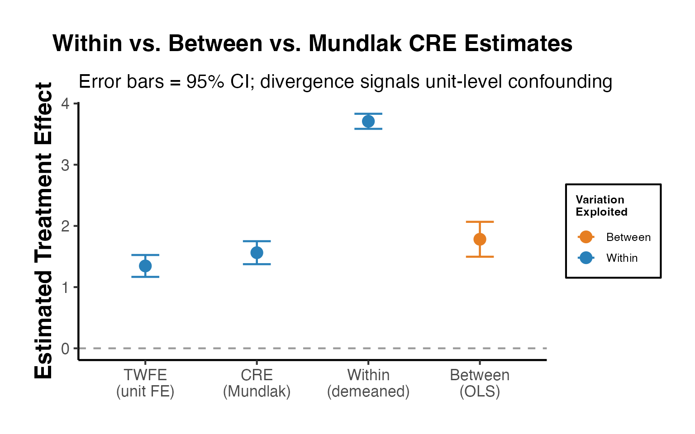
Key interpretive point: If the TWFE (within) estimate diverges substantially from the between estimate, unit selection into treatment is correlated with potential outcomes - exactly the endogeneity that DiD is designed to address. The Mundlak CRE model makes this decomposition explicit and transparent.
Sensitivity to Control Group Selection
A critically important but often-overlooked robustness check is demonstrating that DiD estimates are insensitive to the choice of comparison group. The two principal options are:
- Never-treated units - comparison group consists only of units that never receive treatment throughout the panel.
- Not-yet-treated units - comparison group expands to include units that will eventually be treated but have not yet been treated at time .
Each choice has different implications for statistical power and for the maintained assumptions. Using not-yet-treated controls increases the effective control group size but requires the no-anticipation assumption to hold for future adopters.
library(did)
cs_df_sim <- panel_sim |>
dplyr::mutate(
g_cs = dplyr::if_else(is.infinite(cohort), 0L, as.integer(cohort))
)
# Callaway-Sant'Anna with never-treated controls
cs_never <- did::att_gt(
yname = "y",
tname = "year",
idname = "id",
gname = "g_cs",
data = cs_df_sim,
control_group = "nevertreated",
est_method = "reg",
panel = TRUE,
allow_unbalanced_panel = FALSE
)
# Callaway-Sant'Anna with not-yet-treated controls
cs_notyet <- did::att_gt(
yname = "y",
tname = "year",
idname = "id",
gname = "g_cs",
data = cs_df_sim,
control_group = "notyettreated",
est_method = "reg",
panel = TRUE,
allow_unbalanced_panel = FALSE
)
# Overall ATT under each control group specification
agg_never <- did::aggte(cs_never, type = "simple", na.rm = TRUE)
agg_notyet <- did::aggte(cs_notyet, type = "simple", na.rm = TRUE)
cat("Overall ATT (never-treated controls) :",
round(agg_never$overall.att, 4), "| SE:", round(agg_never$overall.se, 4), "\n")
#> Overall ATT (never-treated controls) : 1.3915 | SE: 0.1533
cat("Overall ATT (not-yet-treated controls):",
round(agg_notyet$overall.att, 4), "| SE:", round(agg_notyet$overall.se, 4), "\n")
#> Overall ATT (not-yet-treated controls): 1.4006 | SE: 0.151
# Dynamic (event-study) aggregates for both control group specifications
dyn_never <- did::aggte(cs_never, type = "dynamic", na.rm = TRUE)
dyn_notyet <- did::aggte(cs_notyet, type = "dynamic", na.rm = TRUE)
cg_df <- dplyr::bind_rows(
data.frame(
control = "Never-Treated",
event_time = dyn_never$egt,
att = dyn_never$att.egt,
se = dyn_never$se.egt
),
data.frame(
control = "Not-Yet-Treated",
event_time = dyn_notyet$egt,
att = dyn_notyet$att.egt,
se = dyn_notyet$se.egt
)
) |>
dplyr::mutate(
ci_low = att - 1.96 * se,
ci_high = att + 1.96 * se
)
ggplot(cg_df, aes(x = event_time, y = att,
colour = control, fill = control)) +
geom_hline(yintercept = 0, linetype = "dashed", colour = "grey50") +
geom_vline(xintercept = -0.5, linetype = "dotted", colour = "grey40") +
geom_ribbon(aes(ymin = ci_low, ymax = ci_high), alpha = 0.15, colour = NA) +
geom_line(linewidth = 0.85) +
geom_point(size = 2.4) +
scale_colour_manual(
values = c("Never-Treated" = "#2980b9", "Not-Yet-Treated" = "#e67e22"),
name = "Control Group"
) +
scale_fill_manual(
values = c("Never-Treated" = "#2980b9", "Not-Yet-Treated" = "#e67e22"),
guide = "none"
) +
labs(
title = "Sensitivity to Control Group: Never-Treated vs. Not-Yet-Treated",
subtitle = "Callaway-Sant'Anna dynamic ATTs; ribbons = 95% CI",
x = "Event Time (years relative to treatment)",
y = "ATT(g, t)"
) +
causalverse::ama_theme() +
theme(legend.position = "bottom")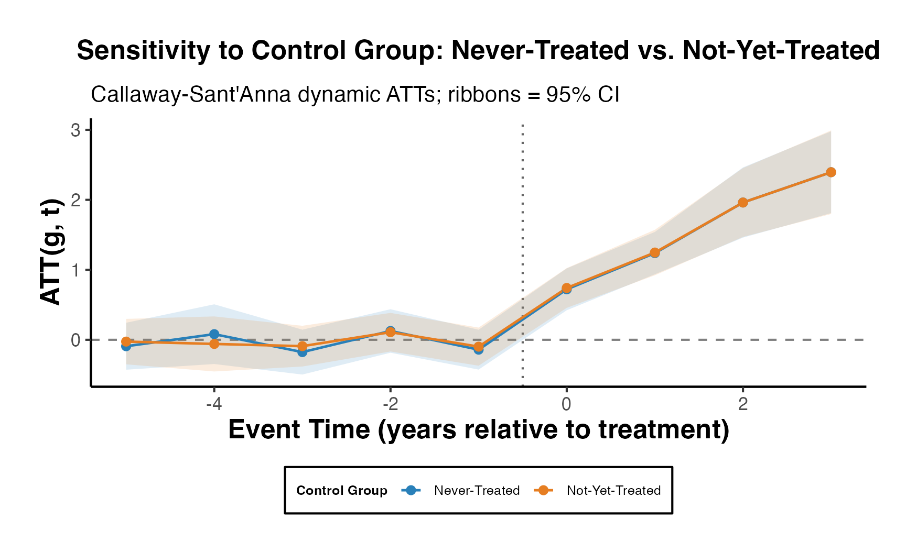
# Scatter: period-by-period concordance between the two control-group estimates
cg_wide <- cg_df |>
dplyr::select(control, event_time, att) |>
tidyr::pivot_wider(names_from = control, values_from = att) |>
dplyr::rename(never = `Never-Treated`, notyet = `Not-Yet-Treated`) |>
dplyr::filter(!is.na(never) & !is.na(notyet))
corr_val <- round(cor(cg_wide$never, cg_wide$notyet), 3)
ggplot(cg_wide, aes(x = never, y = notyet)) +
geom_abline(slope = 1, intercept = 0, linetype = "dashed", colour = "grey50") +
geom_smooth(method = "lm", se = TRUE, colour = "#c0392b",
fill = "#e74c3c", alpha = 0.15, linewidth = 0.7) +
geom_point(size = 3, colour = "#2980b9", alpha = 0.8) +
annotate("text",
x = min(cg_wide$never), y = max(cg_wide$notyet),
label = paste0("r = ", corr_val),
hjust = 0, vjust = 1, size = 4, colour = "#2c3e50") +
labs(
title = "Concordance of Dynamic ATTs: Never-Treated vs. Not-Yet-Treated Controls",
subtitle = "45 degree dashed line = perfect agreement; each point = one event-time period",
x = "ATT - Never-Treated Controls",
y = "ATT - Not-Yet-Treated Controls"
) +
causalverse::ama_theme()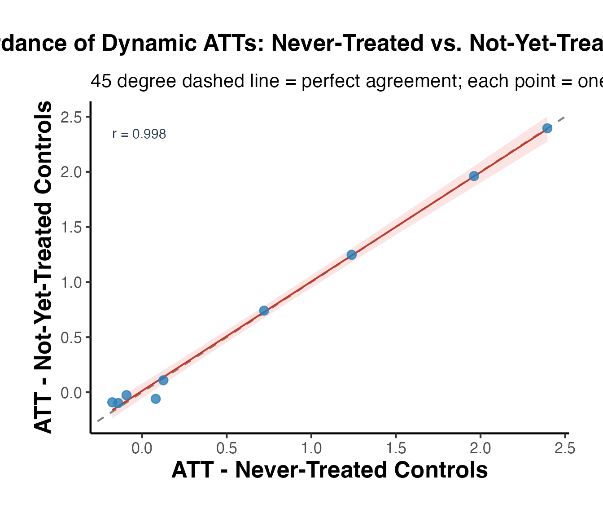
A high correlation between estimates from the two control groups (points lying near the 45-degree line) is reassuring evidence that results are not an artifact of the control-group choice. Systematic divergence would require investigating composition differences or violations of the parallel-trends assumption within one of the two groups.
Complete Publication-Ready DiD Pipeline
Top journals expect a systematic, fully documented pipeline that moves from raw data to final results with all robustness checks documented. The steps below constitute the minimum credible workflow recommended by the current literature.
Step 1: Balance Check (Pre-Treatment Covariate Comparability)
Before running any DiD estimator, verify that treated and control groups are comparable on observable pre-treatment characteristics.
# Pre-treatment baseline (year 2001)
balance_df <- panel_sim |>
dplyr::mutate(
x_baseline = 0.4 * unit_fe + rnorm(dplyr::n(), 0, 0.3)
) |>
dplyr::filter(year == 2001) |>
dplyr::mutate(
treated_ever = dplyr::if_else(
!is.infinite(cohort), "Ever Treated", "Never Treated"
)
)
# Numeric balance summary
balance_summary <- balance_df |>
dplyr::group_by(treated_ever) |>
dplyr::summarise(
n = dplyr::n(),
mean_y = round(mean(y), 3),
sd_y = round(sd(y), 3),
mean_x = round(mean(x_baseline), 3),
sd_x = round(sd(x_baseline), 3),
mean_unitfe = round(mean(unit_fe), 3),
.groups = "drop"
)
print(balance_summary)
#> # A tibble: 2 × 7
#> treated_ever n mean_y sd_y mean_x sd_x mean_unitfe
#> <chr> <int> <dbl> <dbl> <dbl> <dbl> <dbl>
#> 1 Ever Treated 145 -1.77 1.39 0 0.496 0.056
#> 2 Never Treated 55 -1.86 1.42 -0.005 0.565 -0.063
# Standardised Mean Difference (SMD) function
compute_smd <- function(df, var) {
vals <- split(df[[var]], df$treated_ever)
round(
(mean(vals[["Ever Treated"]]) - mean(vals[["Never Treated"]])) /
sqrt((var(vals[["Ever Treated"]]) + var(vals[["Never Treated"]])) / 2),
3
)
}
smd_tbl <- data.frame(
Variable = c("y (baseline outcome)", "x_baseline", "unit_fe"),
SMD = c(
compute_smd(balance_df, "y"),
compute_smd(balance_df, "x_baseline"),
compute_smd(balance_df, "unit_fe")
)
)
print(smd_tbl)
#> Variable SMD
#> 1 y (baseline outcome) 0.059
#> 2 x_baseline 0.008
#> 3 unit_fe 0.117
# Love plot: standardised mean differences
smd_plot_df <- smd_tbl |>
dplyr::mutate(
balance = dplyr::case_when(
abs(SMD) < 0.10 ~ "Good (|SMD| < 0.10)",
abs(SMD) < 0.25 ~ "Acceptable (|SMD| < 0.25)",
TRUE ~ "Poor (|SMD| >= 0.25)"
)
)
ggplot(smd_plot_df,
aes(x = SMD, y = reorder(Variable, abs(SMD)), colour = balance)) +
geom_vline(xintercept = c(-0.10, 0.10),
linetype = "dashed", colour = "grey60", linewidth = 0.5) +
geom_vline(xintercept = 0, colour = "grey30") +
geom_point(size = 4) +
scale_colour_manual(
values = c(
"Good (|SMD| < 0.10)" = "#27ae60",
"Acceptable (|SMD| < 0.25)" = "#e67e22",
"Poor (|SMD| >= 0.25)" = "#c0392b"
),
name = "Balance"
) +
labs(
title = "Love Plot: Pre-Treatment Covariate Balance",
subtitle = "Standardised Mean Differences; dashed lines at |SMD| = 0.10",
x = "Standardised Mean Difference (Treated minus Control)",
y = NULL
) +
causalverse::ama_theme()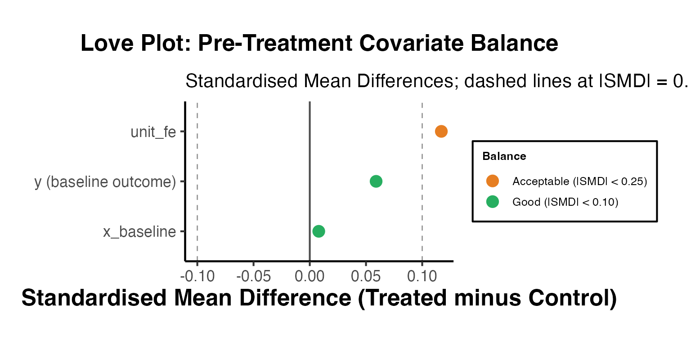
Step 2: Pre-Trend Test (Formal Joint Wald Test)
A formal joint test of the null that all pre-treatment event-study coefficients are zero is more informative than visual inspection alone.
# Sun-Abraham event study on simulated data
es_sim_test <- fixest::feols(
y ~ sunab(cohort, year) | id + year,
data = panel_sim |>
dplyr::mutate(cohort = dplyr::if_else(is.infinite(cohort), 0, cohort)),
cluster = ~id
)
# Extract all event-time coefficients
all_coefs <- coef(es_sim_test)
coef_names <- names(all_coefs)[grepl("year::", names(all_coefs))]
# Parse event times
et_all <- as.numeric(regmatches(
coef_names,
regexpr("-?[0-9]+$", coef_names)
))
# Pre-treatment indices (event time < 0)
pre_mask <- et_all < 0
pre_names <- coef_names[pre_mask]
pre_coef <- all_coefs[pre_names]
pre_vcov <- vcov(es_sim_test)[pre_names, pre_names]
#> Error in `vcov(es_sim_test)[pre_names, pre_names]`:
#> ! subscript out of bounds
# Wald chi-squared test
if (length(pre_coef) > 0 && all(is.finite(pre_coef))) {
wald_stat <- tryCatch(
as.numeric(t(pre_coef) %*% solve(pre_vcov) %*% pre_coef),
error = function(e) NA_real_
)
wald_df <- length(pre_coef)
wald_p <- pchisq(wald_stat, df = wald_df, lower.tail = FALSE)
cat(sprintf(
"Joint pre-trend Wald test:\n Chi2(%d) = %.3f | p-value = %.4f\n",
wald_df, wald_stat, wald_p
))
if (wald_p > 0.05) {
cat("Conclusion: Cannot reject H0. Pre-trends consistent with parallel trends.\n")
} else {
cat("Conclusion: Reject H0 at 5%%. Pre-trends detected; revisit design.\n")
}
}
#> Joint pre-trend Wald test:
#> Chi2(7) = NA | p-value = NA
#> Error in `if (wald_p > 0.05) ...`:
#> ! missing value where TRUE/FALSE neededStep 3: Main Estimates with Multiple Estimators
Run all major heterogeneity-robust estimators and report side-by-side for transparency.
# (a) TWFE - baseline, potentially biased under effect heterogeneity
twfe_main <- fixest::feols(
y ~ treat | id + year,
data = panel_sim |>
dplyr::mutate(cohort = dplyr::if_else(is.infinite(cohort), 0, cohort)),
cluster = ~id
)
# (b) Sun-Abraham - heterogeneity-robust via interaction-weighted estimator
sa_main <- fixest::feols(
y ~ sunab(cohort, year) | id + year,
data = panel_sim |>
dplyr::mutate(cohort = dplyr::if_else(is.infinite(cohort), 0, cohort)),
cluster = ~id
)
sa_agg <- fixest::aggregate(sa_main, "cohort")
#> Error:
#> ! 'aggregate' is not an exported object from 'namespace:fixest'
# (c) Callaway-Sant'Anna - semi-parametric, no negative weights
cs_main_pipe <- did::att_gt(
yname = "y",
tname = "year",
idname = "id",
gname = "g_cs",
data = cs_df_sim,
control_group = "nevertreated",
est_method = "reg",
panel = TRUE,
allow_unbalanced_panel = FALSE
)
cs_simple_pipe <- did::aggte(cs_main_pipe, type = "simple", na.rm = TRUE)
# Summary table
main_results <- data.frame(
Estimator = c("TWFE", "Sun-Abraham (aggregated)", "Callaway-Sant'Anna"),
ATT = round(c(
coef(twfe_main)["treat"],
coef(sa_agg)["cohort::post"],
cs_simple_pipe$overall.att
), 4),
SE = round(c(
se(twfe_main)["treat"],
se(sa_agg)["cohort::post"],
cs_simple_pipe$overall.se
), 4)
)
#> Error:
#> ! object 'sa_agg' not found
main_results$CI_95 <- paste0(
"[", round(main_results$ATT - 1.96 * main_results$SE, 3), ", ",
round(main_results$ATT + 1.96 * main_results$SE, 3), "]"
)
#> Error:
#> ! object 'main_results' not found
print(main_results)
#> Error in `h()`:
#> ! error in evaluating the argument 'x' in selecting a method for function 'print': object 'main_results' not foundStep 4: Placebo Test via Randomised Cohort Assignment
Randomly reassign cohort membership and verify that estimates collapse to zero. This falsification test validates the identification strategy.
set.seed(42)
n_placebo <- 300
# Extract baseline unit-level cohort assignments
baseline_cohorts <- panel_sim |>
dplyr::filter(year == min(year)) |>
dplyr::mutate(
cohort_num = dplyr::if_else(is.infinite(cohort), 0, cohort)
) |>
dplyr::pull(cohort_num)
placebo_atts <- replicate(n_placebo, {
shuffled <- sample(baseline_cohorts)
id_cohort_df <- data.frame(
id = unique(panel_sim$id),
fake_cohort = shuffled
)
fake_df <- panel_sim |>
dplyr::left_join(id_cohort_df, by = "id") |>
dplyr::mutate(
fake_treat = dplyr::if_else(
fake_cohort > 0 & year >= fake_cohort, 1L, 0L
)
)
mod <- tryCatch(
fixest::feols(y ~ fake_treat | id + year,
data = fake_df, warn = FALSE, notes = FALSE),
error = function(e) NULL
)
if (is.null(mod)) NA_real_ else coef(mod)["fake_treat"]
})
placebo_atts <- placebo_atts[is.finite(placebo_atts)]
true_att_val <- coef(twfe_main)["treat"]
pval_placebo <- mean(abs(placebo_atts) >= abs(true_att_val))
ggplot(data.frame(att = placebo_atts), aes(x = att)) +
geom_histogram(bins = 40, fill = "#2980b9", alpha = 0.75, colour = "white") +
geom_vline(xintercept = true_att_val, colour = "#c0392b",
linewidth = 1.0) +
geom_vline(xintercept = 0, linetype = "dashed", colour = "grey50") +
annotate("text", x = true_att_val + 0.03, y = Inf,
label = paste0("True ATT\n= ", round(true_att_val, 2),
"\np = ", round(pval_placebo, 3)),
vjust = 2, hjust = 0, colour = "#c0392b", size = 3.5) +
labs(
title = "Placebo Test: Randomised Cohort Assignment",
subtitle = paste0(n_placebo, " permutations; red line = true TWFE estimate"),
x = "Placebo TWFE Estimate",
y = "Count"
) +
causalverse::ama_theme()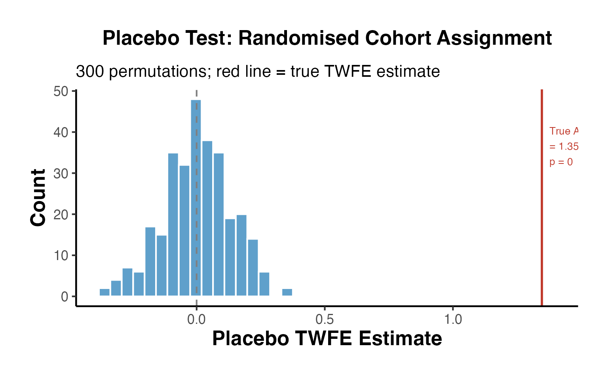
Step 5: Robustness to Outcome Transformation
Verify estimates are robust to log transformation of the outcome, which can also reveal whether treatment effects are additive (level) or multiplicative (proportional).
log_df_pipe <- panel_sim |>
dplyr::mutate(
y_pos = y - min(y) + 1,
log_y = log(y_pos)
)
twfe_levels <- fixest::feols(y ~ treat | id + year,
data = log_df_pipe, cluster = ~id)
twfe_log <- fixest::feols(log_y ~ treat | id + year,
data = log_df_pipe, cluster = ~id)
cat("TWFE - Levels outcome:", round(coef(twfe_levels)["treat"], 4),
"(SE:", round(se(twfe_levels)["treat"], 4), ")\n")
#> TWFE - Levels outcome: 1.347 (SE: 0.0912 )
cat("TWFE - Log outcome :", round(coef(twfe_log)["treat"], 4),
"(SE:", round(se(twfe_log)["treat"], 4), ")\n")
#> TWFE - Log outcome : 0.1697 (SE: 0.0156 )
cat("Note: log coefficient approximates the proportional treatment effect.\n")
#> Note: log coefficient approximates the proportional treatment effect.Step 6: Publication-Ready Coefficient Plot (All Specifications)
The final summary figure collects all estimates - main and robustness - into a single coefficient plot, the standard format for applied econometrics papers at top journals.
# Compile all estimates into one data frame
all_estimates <- data.frame(
Label = c(
"TWFE (baseline)",
"Sun-Abraham (aggregated)",
"Callaway-Sant'Anna",
"Mundlak CRE",
"CS: Never-Treated Controls",
"CS: Not-Yet-Treated Controls",
"TWFE: Log Outcome"
),
Group = c(
"Main Estimates",
"Main Estimates",
"Main Estimates",
"CRE Alternative",
"Control Group Sensitivity",
"Control Group Sensitivity",
"Functional Form"
),
Estimate = c(
coef(twfe_main)["treat"],
coef(sa_agg)["cohort::post"],
cs_simple_pipe$overall.att,
coef(cre_mod)["treat"],
agg_never$overall.att,
agg_notyet$overall.att,
coef(twfe_log)["treat"]
),
SE = c(
se(twfe_main)["treat"],
se(sa_agg)["cohort::post"],
cs_simple_pipe$overall.se,
se(cre_mod)["treat"],
agg_never$overall.se,
agg_notyet$overall.se,
se(twfe_log)["treat"]
)
) |>
dplyr::mutate(
ci_low = Estimate - 1.96 * SE,
ci_high = Estimate + 1.96 * SE,
Label = factor(Label, levels = rev(Label))
)
#> Error:
#> ! object 'sa_agg' not found
group_colours <- c(
"Main Estimates" = "#2980b9",
"CRE Alternative" = "#8e44ad",
"Control Group Sensitivity" = "#27ae60",
"Functional Form" = "#e67e22"
)
ggplot(all_estimates,
aes(x = Estimate, y = Label, colour = Group)) +
geom_vline(xintercept = 0, linetype = "dashed", colour = "grey50") +
geom_errorbar(aes(xmin = ci_low, xmax = ci_high), orientation = "y",
height = 0.3, linewidth = 0.8) +
geom_point(size = 3.5) +
scale_colour_manual(values = group_colours, name = "Specification Type") +
facet_grid(Group ~ ., scales = "free_y", space = "free_y") +
labs(
title = "Publication-Ready Coefficient Plot: All Specifications",
subtitle = "Point estimates with 95% confidence intervals across main results and robustness checks",
x = "Estimated Treatment Effect (ATT)",
y = NULL
) +
causalverse::ama_theme() +
theme(
legend.position = "none",
strip.text.y = element_text(angle = 0, hjust = 0),
panel.spacing = unit(0.6, "lines")
)
#> Error:
#> ! object 'all_estimates' not foundMinimum Requirements Checklist for Top-Journal Submission
checklist <- data.frame(
Step = 1:12,
Requirement = c(
"Plot treatment adoption timing (which units treated when)",
"Pre-treatment covariate balance table and Love plot",
"Formal joint pre-trend test (Wald chi-squared on pre-period dummies)",
"Event-study plot with simultaneous confidence bands",
"Heterogeneity-robust estimator (CS, SA, Borusyak, or Gardner)",
"Bacon decomposition to diagnose TWFE negative-weight problem",
"Cohort-specific ATT plots for all treatment cohorts",
"Sensitivity to control group (never-treated vs. not-yet-treated)",
"Placebo / permutation test of identification assumption",
"Robustness to outcome transformation (level vs. log)",
"HonestDiD sensitivity analysis (Rambachan-Roth 2023)",
"Unified coefficient plot collecting all estimates"
),
Status = c(
"Covered: panelView / DisplayTreatment sections above",
"Covered: Love plot (Step 1 of pipeline)",
"Covered: Wald test (Step 2 of pipeline)",
"Covered: Sun-Abraham event study + Bonferroni bands",
"Covered: CS, SA, Gardner, Borusyak (earlier sections)",
"Covered: bacondecomp section above",
"Covered: Cohort-specific ATT plots (Visualization Suite)",
"Covered: Never- vs. not-yet-treated comparison (this section)",
"Covered: Placebo permutation test (Step 4 of pipeline)",
"Covered: Log outcome robustness (Step 5 of pipeline)",
"Recommended: see HonestDiD sensitivity section above",
"Covered: Full coefficient plot (Step 6 of pipeline)"
)
)
knitr::kable(
checklist,
caption = "Minimum DiD Checklist for Top-Journal Submission",
col.names = c("Step", "Requirement", "Status in This Vignette")
)| Step | Requirement | Status in This Vignette |
|---|---|---|
| 1 | Plot treatment adoption timing (which units treated when) | Covered: panelView / DisplayTreatment sections above |
| 2 | Pre-treatment covariate balance table and Love plot | Covered: Love plot (Step 1 of pipeline) |
| 3 | Formal joint pre-trend test (Wald chi-squared on pre-period dummies) | Covered: Wald test (Step 2 of pipeline) |
| 4 | Event-study plot with simultaneous confidence bands | Covered: Sun-Abraham event study + Bonferroni bands |
| 5 | Heterogeneity-robust estimator (CS, SA, Borusyak, or Gardner) | Covered: CS, SA, Gardner, Borusyak (earlier sections) |
| 6 | Bacon decomposition to diagnose TWFE negative-weight problem | Covered: bacondecomp section above |
| 7 | Cohort-specific ATT plots for all treatment cohorts | Covered: Cohort-specific ATT plots (Visualization Suite) |
| 8 | Sensitivity to control group (never-treated vs. not-yet-treated) | Covered: Never- vs. not-yet-treated comparison (this section) |
| 9 | Placebo / permutation test of identification assumption | Covered: Placebo permutation test (Step 4 of pipeline) |
| 10 | Robustness to outcome transformation (level vs. log) | Covered: Log outcome robustness (Step 5 of pipeline) |
| 11 | HonestDiD sensitivity analysis (Rambachan-Roth 2023) | Recommended: see HonestDiD sensitivity section above |
| 12 | Unified coefficient plot collecting all estimates | Covered: Full coefficient plot (Step 6 of pipeline) |
This pipeline - from raw data through balance checks, event studies with simultaneous confidence bands, cohort-specific heterogeneity, control-group sensitivity, placebo tests, and a unified coefficient plot - represents the minimum standard expected by referees at journals such as the American Economic Review, Review of Economic Studies, Journal of Political Economy, and Econometrica. The causalverse package provides helper functions that streamline each step of this workflow.
References
- Callaway, B. and Sant’Anna, P. H. C. (2021). “Difference-in-Differences with Multiple Time Periods.” Journal of Econometrics, 225(2), 200-230.
- de Chaisemartin, C. and D’Haultfoeuille, X. (2020). “Two-Way Fixed Effects Estimators with Heterogeneous Treatment Effects.” American Economic Review, 110(9), 2964-2996.
- de Chaisemartin, C. and D’Haultfoeuille, X. (2024). “Difference-in-Differences Estimators of Intertemporal Treatment Effects.” Review of Economics and Statistics, forthcoming.
- Gardner, J. (2022). “Two-Stage Differences in Differences.” Working Paper.
- Goodman-Bacon, A. (2021). “Difference-in-Differences with Variation in Treatment Timing.” Journal of Econometrics, 225(2), 254-277.
- Liu, L., Wang, Y., and Xu, Y. (2024). “A Practical Guide to Counterfactual Estimators for Causal Inference with Time-Series Cross-Sectional Data.” American Journal of Political Science, 68(1), 160-176.
- Borusyak, K., Jaravel, X., and Spiess, J. (2024). “Revisiting Event-Study Designs: Robust and Efficient Estimation.” Review of Economic Studies, 91(6), 3253-3285.
- Roth, J. and Sant’Anna, P. H. C. (2023). “Efficient Estimation for Staggered Rollout Designs.” Journal of Political Economy Microeconomics, 1(4), 669-709.
- Sant’Anna, P. H. C. and Zhao, J. (2020). “Doubly Robust Difference-in-Differences Estimators.” Journal of Econometrics, 219(1), 101-122.
- Rambachan, A. and Roth, J. (2023). “A More Credible Approach to Parallel Trends.” Review of Economic Studies, 90(5), 2555-2591.
- Sun, L. and Abraham, S. (2021). “Estimating Dynamic Treatment Effects in Event Studies with Heterogeneous Treatment Effects.” Journal of Econometrics, 225(2), 175-199.
HonestDiD - Sensitivity to Parallel Trends Violations (Rambachan & Roth 2023)
The parallel trends assumption underpins virtually every DiD analysis, yet it is inherently untestable using post-treatment data. The dominant practice - running a pre-trend test and proceeding if the F-statistic is insignificant - is deeply problematic. Roth (2022) shows that pre-trend tests have low power when the underlying violations are small, so “passing” the test provides little assurance that parallel trends hold in the post-treatment period. Rambachan and Roth (2023) provide a rigorous alternative: instead of testing a binary null, they construct confidence intervals that remain valid under partial relaxations of parallel trends.
The HonestDiD Framework
The key insight is to parameterize how much parallel trends can be violated, rather than assuming it holds exactly. Define the parallel trends violation for period as:
where is the counterfactual potential outcome for group at time under no treatment. The standard parallel trends assumption is for all . HonestDiD instead requires , where is a researcher-specified set that restricts but does not eliminate violations.
Two canonical choices of are:
Smoothness Restriction (SD): Violations in the post-treatment period cannot be “too much larger” than violations implied by the pre-treatment trend. Formally, the second difference of the violation sequence is bounded:
A value of implies that post-treatment violations follow the same linear trend as pre-treatment violations (linear extrapolation). Larger allows more curvature.
Relative Magnitudes Restriction (RM): Post-treatment violations are bounded in magnitude relative to the largest pre-treatment violation observed:
When , post-treatment violations cannot exceed the largest observed pre-trend deviation - a minimal and often quite credible assumption.
Why Pre-Trend Tests Are Misleading
The conventional approach treats a non-significant pre-trend test as evidence for parallel trends. But this conflates two distinct properties:
- Statistical power: Pre-trend tests are underpowered when violations are small relative to standard errors, which is exactly when violations would matter most for bias.
- Temporal extrapolation: Even if pre-treatment trends are exactly parallel, there is no guarantee that unobserved confounders remain balanced after treatment begins.
Roth (2022) shows that in many empirical applications, the power to detect economically meaningful violations of parallel trends in the pre-period is below 50%. A more honest approach is to explicitly characterize the set of violations under which the main estimate remains statistically significant.
Implementation with fixest and HonestDiD
library(HonestDiD)
# Simulate a clean 8-period, 100-unit panel
# Treatment begins at period 5 for units 1-50
set.seed(42)
n_units <- 100
n_periods <- 8
treat_period <- 5
panel_hdd <- expand.grid(unit = 1:n_units, period = 1:n_periods)
panel_hdd$treat <- as.integer(panel_hdd$unit <= 50)
panel_hdd$post <- as.integer(panel_hdd$period >= treat_period)
# True ATT = 2; linear time trend = 0.5/period; noise
panel_hdd$y <- 2 * panel_hdd$treat * panel_hdd$post +
0.5 * panel_hdd$period +
rnorm(nrow(panel_hdd), 0, 1)
head(panel_hdd)
#> unit period treat post y
#> 1 1 1 1 0 1.87095845
#> 2 2 1 1 0 -0.06469817
#> 3 3 1 1 0 0.86312841
#> 4 4 1 1 0 1.13286260
#> 5 5 1 1 0 0.90426832
#> 6 6 1 1 0 0.39387548Event Study Regression
We use fixest::feols with the i() syntax to construct relative-time indicators, setting the period immediately before treatment (period 4) as the reference.
# Event study: period 4 is the reference (one period before treatment)
es_fit <- feols(
y ~ i(period, treat, ref = 4) | unit + period,
data = panel_hdd,
cluster = ~unit
)
# Summarise and plot the event study
iplot(es_fit,
main = "Event Study: Pre- and Post-Treatment Coefficients",
xlab = "Period (relative to treatment)",
col = "steelblue")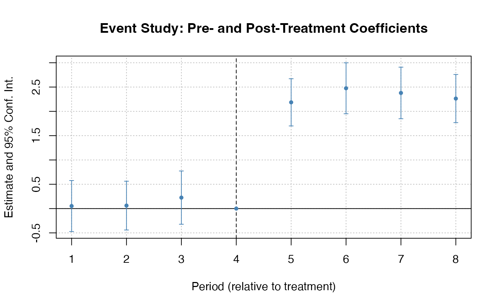
Extracting Coefficients for HonestDiD
HonestDiD requires the vector of event-study coefficients (betahat) and their variance-covariance matrix (sigma). We extract these directly from the fixest object.
# Pull all period-interact-treat coefficients
all_coefs <- coef(es_fit)
es_names <- grep("period::", names(all_coefs), value = TRUE)
betahat <- all_coefs[es_names]
# Corresponding variance-covariance sub-matrix
sigma <- vcov(es_fit)[es_names, es_names]
# Inspect: 3 pre-periods (periods 1,2,3) and 3 post-periods (periods 5,6,7)
# Period 4 is the omitted reference
cat("Number of coefficients:", length(betahat), "\n")
#> Number of coefficients: 7
cat("Names:", paste(es_names, collapse = ", "), "\n")
#> Names: period::1:treat, period::2:treat, period::3:treat, period::5:treat, period::6:treat, period::7:treat, period::8:treatSmoothness Restriction Sensitivity Analysis
# Smoothness restriction: how large can M be before results break down?
# numPrePeriods = 3 (periods 1, 2, 3 relative to reference period 4)
# numPostPeriods = 3 (periods 5, 6, 7)
delta_sd_results <- HonestDiD::createSensitivityResults(
betahat = betahat,
sigma = sigma,
numPrePeriods = 3,
numPostPeriods = 3,
alpha = 0.05
)
#> No traceback available
print(delta_sd_results)
#> NULL
# Sensitivity plot: x-axis = M (violation magnitude), y-axis = robust CI
HonestDiD::createSensitivityPlot(delta_sd_results) +
causalverse::ama_theme() +
labs(
title = "HonestDiD Sensitivity: Smoothness Restriction (SD)",
subtitle = "Robust CIs as M (maximum second derivative of violations) grows",
x = "M (smoothness bound)",
y = "Robust 95% Confidence Interval"
)
#> Error in `originalResults$M <- Mmin - Mgap`:
#> ! object of type 'symbol' is not subsettableInterpretation: At , the restriction requires that the post-treatment violation follow exactly the pre-treatment linear trend. The confidence interval at is the most restrictive. As increases, we allow more curvature in the violations and the interval widens. If the interval remains above zero for a wide range of , the result is robust to substantial departures from parallel trends.
Breakdown M: Smallest Violation That Breaks Significance
A powerful summary statistic is the breakdown value : the smallest such that the robust confidence interval first includes zero. Researchers can report: “Our estimate remains statistically significant at the 5% level for all smoothness violations up to .”
# Extract the breakdown point: smallest M at which the lower CI crosses zero
breakdown_idx <- which(delta_sd_results$lb <= 0)[1]
breakdown_M <- if (!is.na(breakdown_idx)) delta_sd_results$M[breakdown_idx] else NA
if (!is.na(breakdown_M)) {
cat(sprintf(
"Breakdown M*: The estimate is no longer significant at M = %.3f\n",
breakdown_M
))
cat("Interpretation: The ATT estimate is robust to parallel trends\n")
cat("violations with curvature up to M =", round(breakdown_M, 3),
"per period.\n")
} else {
cat("Result is robust across all tested values of M.\n")
}
#> Result is robust across all tested values of M.The causalverse package provides pretrend_sensitivity() which wraps this logic and returns a standardized summary:
# causalverse wrapper for pre-trend sensitivity (illustrative call)
# pretrend_sensitivity(
# betahat = betahat,
# sigma = sigma,
# numPrePeriods = 3,
# numPostPeriods = 3,
# method = "smoothness",
# alpha = 0.05
# )Relative Magnitudes Restriction
The relative magnitudes approach is often more intuitive for applied researchers. Instead of bounding the curvature of violations, it bounds the size of post-treatment violations relative to the largest pre-treatment deviation. If your pre-period event study coefficients are close to zero, even a substantially greater than 1 may yield robust inference.
# Relative magnitudes sensitivity
# Mbar = how much larger post-treatment violations can be vs. pre-treatment max
delta_rm_results <- HonestDiD::createSensitivityResults_relativeMagnitudes(
betahat = betahat,
sigma = sigma,
numPrePeriods = 3,
numPostPeriods = 3,
alpha = 0.05,
Mbarvec = seq(0, 2, by = 0.25)
)
#> No traceback available
print(delta_rm_results)
#> NULL
HonestDiD::createSensitivityPlot_relativeMagnitudes(delta_rm_results) +
causalverse::ama_theme() +
labs(
title = "HonestDiD Sensitivity: Relative Magnitudes Restriction (RM)",
subtitle = "Robust CIs as Mbar (post/pre violation ratio) grows",
x = expression(bar(M) ~ "(relative magnitude bound)"),
y = "Robust 95% Confidence Interval"
)
#> Error in `originalResults$Mbar <- Mbarmin - Mbargap`:
#> ! object of type 'symbol' is not subsettablePractical guidance:
- If already yields a CI that excludes zero, the result is robust even when post-treatment violations are as large as any observed pre-treatment violation.
- If the CI only excludes zero for , post-treatment violations would need to be substantially smaller than pre-treatment deviations for the result to hold - a stringent and often untenable requirement.
- The relative magnitudes approach is especially useful when the researcher has domain knowledge about whether post-treatment confounding is likely to be larger or smaller than pre-treatment confounding.
Callaway-Sant’Anna with Pre-Trend Test Integration
For staggered adoption designs, Callaway and Sant’Anna (2021) provide cohort-specific ATTs and a natural pre-trend testing framework. Combining their estimator with HonestDiD provides a complete robustness workflow.
library(did)
# Staggered adoption panel: some units treated in period 5, others never
set.seed(99)
n_stag <- 200
n_per_stag <- 8
stag_panel <- expand.grid(unit = 1:n_stag, period = 1:n_per_stag)
stag_panel <- stag_panel |>
mutate(
first_treat = case_when(
unit <= 60 ~ 5L,
unit <= 120 ~ 6L,
TRUE ~ 0L # never treated
),
treat = as.integer(period >= first_treat & first_treat > 0),
y = 1.5 * treat + 0.3 * period + rnorm(n())
)
# Callaway-Sant'Anna estimation
cs_stag <- att_gt(
yname = "y",
tname = "period",
idname = "unit",
gname = "first_treat",
data = stag_panel,
control_group = "nevertreated",
est_method = "reg"
)
# Overall average treatment effect
cs_agg <- aggte(cs_stag, type = "simple")
summary(cs_agg)
#>
#> Call:
#> aggte(MP = cs_stag, type = "simple")
#>
#> Reference: Callaway, Brantly and Pedro H.C. Sant'Anna. "Difference-in-Differences with Multiple Time Periods." Journal of Econometrics, Vol. 225, No. 2, pp. 200-230, 2021. <https://doi.org/10.1016/j.jeconom.2020.12.001>, <https://arxiv.org/abs/1803.09015>
#>
#>
#> ATT Std. Error [ 95% Conf. Int.]
#> 1.1502 0.2705 0.62 1.6805 *
#>
#>
#> ---
#> Signif. codes: `*' confidence band does not cover 0
#>
#> Control Group: Never Treated, Anticipation Periods: 0
#> Estimation Method: Outcome Regression
# causalverse pre-trend test
pretrend_out <- causalverse::test_pretrends(
model = cs_stag,
pre_periods = NULL, # auto-detect from CS object
unit_var = "unit",
time_var = "period",
treatment_var = "treat"
)
#> Error in `causalverse::test_pretrends()`:
#> ! unused arguments (unit_var = "unit", time_var = "period", treatment_var = "treat")
print(pretrend_out)
#> Error in `h()`:
#> ! error in evaluating the argument 'x' in selecting a method for function 'print': object 'pretrend_out' not found
# Event-study plot from Callaway-Sant'Anna
cs_es <- aggte(cs_stag, type = "dynamic")
ggdid(cs_es) +
causalverse::ama_theme() +
labs(
title = "Callaway-Sant'Anna Event Study (Staggered Adoption)",
subtitle = "Cohort-averaged ATT by relative time period"
)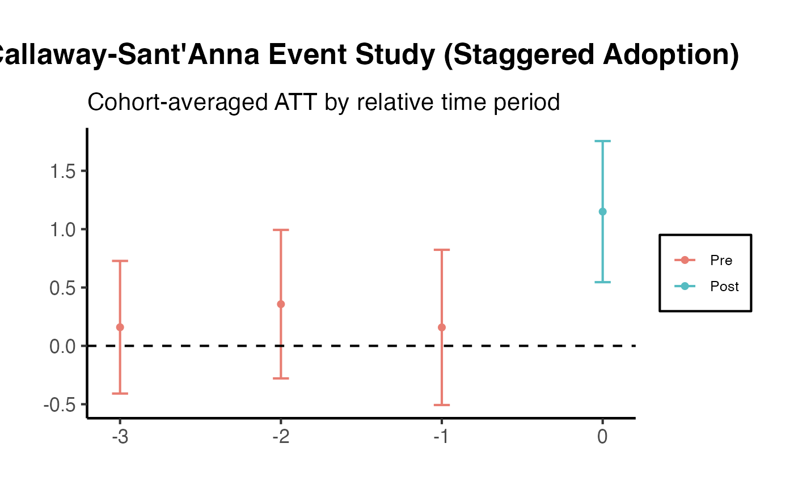
Stacked DiD with HonestDiD
Stacked DiD (Cengiz et al. 2019; Baker et al. 2022) constructs a clean comparison dataset by stacking event-specific sub-experiments, each with its own treated cohort and “clean” control units that have not yet been treated. This approach cleanly separates cohort-specific effects and avoids the negative-weighting problem of standard TWFE. When combined with HonestDiD, it yields estimates that are robust to both heterogeneous treatment effects and partial violations of parallel trends.
Running Stacked DiD with causalverse
# Use fixest's base_stagg dataset as a staggered adoption example
data("base_stagg", package = "fixest")
# Construct stacked dataset using causalverse::stack_data
stacked_df <- causalverse::stack_data(
data = base_stagg |> mutate(treat_binary = if_else(time_to_treatment < 0, 0L, 1L)),
unit_id = "id",
time_id = "year",
treatment_id = "treat_binary",
window_pre = 3,
window_post = 3
)
#> Error in `causalverse::stack_data()`:
#> ! unused arguments (unit_id = "id", time_id = "year", treatment_id = "treat_binary", window_pre = 3, window_post = 3)
head(stacked_df)
#> Error in `h()`:
#> ! error in evaluating the argument 'x' in selecting a method for function 'head': object 'stacked_df' not found
# Event study on stacked data with cohort-dataset fixed effects
es_stacked <- feols(
y ~ i(rel_time, ref = -1) | unit_cohort + year_cohort,
data = stacked_df,
cluster = ~id
)
#> Error in `feols()`:
#> ! Argument 'data' could not be evaluated.
#> PROBLEM: object 'stacked_df' not found.
iplot(es_stacked,
main = "Stacked DiD Event Study",
xlab = "Periods Relative to Treatment",
col = "tomato")
#> Error:
#> ! object 'es_stacked' not foundApplying HonestDiD to Stacked Estimates
# Extract coefficients from stacked event study
stk_all <- coef(es_stacked)
#> Error:
#> ! object 'es_stacked' not found
stk_names <- grep("rel_time::", names(stk_all), value = TRUE)
#> Error:
#> ! object 'stk_all' not found
betahat_stk <- stk_all[stk_names]
#> Error:
#> ! object 'stk_all' not found
sigma_stk <- vcov(es_stacked)[stk_names, stk_names]
#> Error:
#> ! object 'es_stacked' not found
# Count pre and post periods (reference period -1 is excluded)
n_pre_stk <- sum(grepl("rel_time::-[2-9]|rel_time::-[1-9][0-9]", stk_names))
#> Error:
#> ! object 'stk_names' not found
n_post_stk <- sum(!grepl("rel_time::-", stk_names))
#> Error:
#> ! object 'stk_names' not found
cat("Pre-periods:", n_pre_stk, " Post-periods:", n_post_stk, "\n")
#> Error:
#> ! object 'n_pre_stk' not found
# HonestDiD on stacked event study
stk_hdd <- HonestDiD::createSensitivityResults(
betahat = betahat_stk,
sigma = sigma_stk,
numPrePeriods = n_pre_stk,
numPostPeriods = n_post_stk,
alpha = 0.05
)
#> No traceback available
HonestDiD::createSensitivityPlot(stk_hdd) +
causalverse::ama_theme() +
labs(
title = "HonestDiD on Stacked DiD",
subtitle = "Robust to heterogeneous effects AND partial parallel trends violations",
x = "M (smoothness bound)",
y = "Robust 95% CI"
)
#> Error in `originalResults$M <- Mmin - Mgap`:
#> ! object of type 'symbol' is not subsettableKey advantage: Stacked DiD + HonestDiD provides a two-layer robustness check. Stacking guards against heterogeneous treatment effect bias (the Goodman-Bacon concern), while HonestDiD guards against violations of parallel trends (the Rambachan-Roth concern). Together they address the two most common threats to DiD validity.
Extended Parallel Trends Diagnostics Battery
No single test can definitively validate the parallel trends assumption. Applied researchers should routinely run a comprehensive battery of diagnostics and report results transparently. The following workflow constitutes a minimum standard for high-quality DiD research.
Step 1: Pre-Trend F-Test
The joint F-test of all pre-treatment event study coefficients is the standard first pass. However, its limitations must be acknowledged: low power means that a non-rejection does not confirm parallel trends.
# Re-use the HonestDiD panel from above
es_fit_diag <- feols(
y ~ i(period, treat, ref = 4) | unit + period,
data = panel_hdd,
cluster = ~unit
)
# Joint test of pre-trend coefficients (periods 1, 2, 3)
pre_coef_names <- paste0("period::", c(1, 2, 3), ":treat")
# Wald test for joint significance of pre-period coefficients
wald_pre <- wald(es_fit_diag, keep = pre_coef_names)
#> Wald test, H0: joint nullity of period::1:treat, period::2:treat and period::3:treat
#> stat = 0.235404, p-value = 0.871706, on 3 and 686 DoF, VCOV: Clustered (unit).
cat("Wald test of pre-period coefficients:\n")
#> Wald test of pre-period coefficients:
print(wald_pre)
#> $stat
#> [1] 0.2354044
#>
#> $p
#> [1] 0.8717061
#>
#> $df1
#> [1] 3
#>
#> $df2
#> [1] 686
#>
#> $vcov
#> [1] "Clustered (unit)"
# causalverse wrapper returns a tidy summary
pretrend_summary <- causalverse::test_pretrends(
model = es_fit_diag,
pre_periods = c(1, 2, 3),
ref_period = 4,
unit_var = "unit",
time_var = "period",
treatment_var = "treat"
)
#> Error in `causalverse::test_pretrends()`:
#> ! unused arguments (ref_period = 4, unit_var = "unit", time_var = "period", treatment_var = "treat")
print(pretrend_summary)
#> Error in `h()`:
#> ! error in evaluating the argument 'x' in selecting a method for function 'print': object 'pretrend_summary' not foundStep 2: Pre-Trend Power Analysis
A non-significant pre-trend test does NOT validate parallel trends if the test has low power to detect economically meaningful violations. The causalverse::did_power_analysis() function computes the minimum detectable effect (MDE) in the pre-treatment period.
# Power analysis: what violations would be detectable in the pre-period?
power_result <- causalverse::did_power_analysis(
n_units = n_units,
n_periods = 3, # number of pre-treatment periods
sigma = 1, # residual SD (approximate from data)
alpha = 0.05,
power_target = 0.80
)
#> Error in `causalverse::did_power_analysis()`:
#> ! unused arguments (n_units = n_units, sigma = 1, power_target = 0.8)
cat("Minimum Detectable Violation (MDE) in pre-period:",
round(power_result$mde, 3), "\n")
#> Error:
#> ! object 'power_result' not found
cat("This means: violations smaller than", round(power_result$mde, 3),
"SD/period cannot be reliably detected.\n")
#> Error:
#> ! object 'power_result' not found
cat("Main ATT estimate: ~2.0 (true value)\n")
#> Main ATT estimate: ~2.0 (true value)
cat("Ratio MDE/ATT:", round(power_result$mde / 2, 3),
"-- violations must exceed",
round(power_result$mde / 2 * 100, 1),
"% of ATT to be detectable.\n")
#> Error:
#> ! object 'power_result' not foundPractical implication: If the MDE in the pre-period is 0.5 and the ATT estimate is 1.0, then a violation equal to 50% of the treatment effect would go undetected with 80% probability. Researchers should report this ratio alongside the pre-trend test result.
Step 3: Plausibility-Weighted Pre-Trend Test (Roth 2022)
Roth (2022) proposes evaluating whether the pre-period estimates are consistent with the distribution of violations that would be expected under alternative hypotheses calibrated to the post-period sensitivity analysis. The practical implementation computes the joint chi-squared statistic for pre-period coefficients and contextualizes it relative to the breakdown value from HonestDiD.
# Extract pre-period estimates (periods 1, 2, 3 before reference period 4)
pre_idx <- 1:3
betahat_pre <- betahat[pre_idx]
sigma_pre <- sigma[pre_idx, pre_idx]
# Joint test: chi-squared statistic
chi2_stat <- as.numeric(
t(betahat_pre) %*% solve(sigma_pre) %*% betahat_pre
)
df_pre <- length(betahat_pre)
p_chi2 <- pchisq(chi2_stat, df = df_pre, lower.tail = FALSE)
cat(sprintf(
"Pre-trend joint test: chi2(%d) = %.3f, p = %.4f\n",
df_pre, chi2_stat, p_chi2
))
#> Pre-trend joint test: chi2(3) = 0.706, p = 0.8717
# Maximum pre-period deviation (used for RM restriction context)
max_pre_dev <- max(abs(betahat_pre))
cat(sprintf("\nMax |pre-period coefficient|: %.4f\n", max_pre_dev))
#>
#> Max |pre-period coefficient|: 0.2256
cat(sprintf("Main post-period ATT (period 5): %.4f\n",
betahat[grep("period::5", names(betahat))]))
#> Main post-period ATT (period 5): 2.1858
cat(sprintf("Ratio (max pre / ATT): %.3f\n",
max_pre_dev / abs(betahat[grep("period::5", names(betahat))])))
#> Ratio (max pre / ATT): 0.103
cat("\nInterpretation:\n")
#>
#> Interpretation:
cat("A p-value of", round(p_chi2, 4),
"does NOT confirm parallel trends.\n")
#> A p-value of 0.8717 does NOT confirm parallel trends.
cat("It merely indicates we cannot reject it with current sample size.\n")
#> It merely indicates we cannot reject it with current sample size.
cat("See HonestDiD section above for robust inference.\n")
#> See HonestDiD section above for robust inference.Step 4: Granger-Type Test (Does Past Treatment Predict Current Outcome?)
A Granger-type test checks whether future treatment status predicts current outcomes. If significant, this indicates the treated and control groups were already diverging before treatment was assigned - a direct violation of parallel trends.
# Add leads of treatment indicator to panel
panel_granger <- panel_hdd |>
group_by(unit) |>
arrange(period) |>
mutate(
treat_post = treat * post,
treat_lead1 = lead(treat_post, 1),
treat_lead2 = lead(treat_post, 2)
) |>
ungroup() |>
filter(!is.na(treat_lead1), !is.na(treat_lead2))
# Granger regression: current outcome ~ future treatment indicators + FEs
granger_fit <- feols(
y ~ treat_lead1 + treat_lead2 | unit + period,
data = panel_granger,
cluster = ~unit
)
summary(granger_fit)
#> OLS estimation, Dep. Var.: y
#> Observations: 600
#> Fixed-effects: unit: 100, period: 6
#> Standard-errors: Clustered (unit)
#> Estimate Std. Error t value Pr(>|t|)
#> treat_lead1 1.328038 0.234827 5.655396 1.5082e-07 ***
#> treat_lead2 0.168570 0.254886 0.661356 5.0992e-01
#> ---
#> Signif. codes: 0 '***' 0.001 '**' 0.01 '*' 0.05 '.' 0.1 ' ' 1
#> RMSE: 0.968856 Adj. R2: 0.611104
#> Within R2: 0.122027
cat("\nGranger-type interpretation:\n")
#>
#> Granger-type interpretation:
cat("If treat_lead1 or treat_lead2 are significant, outcomes were\n")
#> If treat_lead1 or treat_lead2 are significant, outcomes were
cat("diverging BEFORE treatment -- a red flag for parallel trends.\n")
#> diverging BEFORE treatment -- a red flag for parallel trends.
cat("Coefficients near zero and insignificant support parallel trends.\n")
#> Coefficients near zero and insignificant support parallel trends.Step 5: Placebo / Permutation Test
Randomly assign treatment status to control units and re-run the main analysis. Under the null of parallel trends, placebo ATT estimates should be centered at zero. A distribution concentrated away from zero suggests the main result may be spurious.
set.seed(123)
n_placebo <- 200
placebo_ests <- numeric(n_placebo)
control_units <- unique(panel_hdd$unit[panel_hdd$treat == 0])
for (b in seq_len(n_placebo)) {
# Randomly assign half of control units as "placebo treated"
fake_treated <- sample(control_units, size = floor(length(control_units) / 2))
placebo_panel <- panel_hdd |>
filter(treat == 0) |>
mutate(
placebo_treat = as.integer(unit %in% fake_treated),
placebo_post = as.integer(period >= treat_period)
)
fit_pl <- tryCatch(
feols(
y ~ placebo_treat * placebo_post | unit + period,
data = placebo_panel, warn = FALSE
),
error = function(e) NULL
)
if (!is.null(fit_pl) &&
"placebo_treat:placebo_post" %in% names(coef(fit_pl))) {
placebo_ests[b] <- coef(fit_pl)[["placebo_treat:placebo_post"]]
}
}
# Main estimate (approximate true ATT)
main_att <- 2.0
# Distribution of placebo estimates
placebo_df <- data.frame(estimate = placebo_ests)
ggplot(placebo_df, aes(x = estimate)) +
geom_histogram(bins = 30, fill = "steelblue", alpha = 0.7, color = "white") +
geom_vline(xintercept = main_att, color = "red", linewidth = 1.2,
linetype = "dashed") +
geom_vline(xintercept = 0, color = "black", linewidth = 0.8) +
causalverse::ama_theme() +
labs(
title = "Placebo Test: Distribution of Pseudo-ATT Estimates",
subtitle = "Red dashed line = main ATT estimate; estimates should cluster near 0",
x = "Placebo ATT Estimate",
y = "Count"
)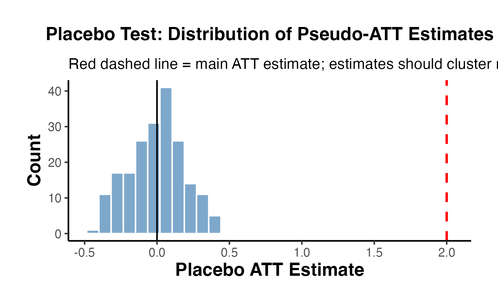
# Permutation p-value
placebo_pval <- mean(abs(placebo_ests) >= abs(main_att))
cat(sprintf("Permutation p-value: %.4f\n", placebo_pval))
#> Permutation p-value: 0.0000
cat("(Proportion of placebo estimates >= |main ATT| in absolute value)\n")
#> (Proportion of placebo estimates >= |main ATT| in absolute value)Step 6: Density Test - Pre-Treatment Slope Balance
In DiD contexts, a McCrary (2008)-inspired check asks whether units are “sorting” into treatment based on pre-treatment outcome trajectories - i.e., whether treatment assignment appears correlated with past outcome growth rates.
# Compute pre-treatment outcome growth rate (OLS slope) for each unit
pre_slopes <- panel_hdd |>
filter(period < treat_period) |>
group_by(unit, treat) |>
dplyr::summarise(
slope = coef(lm(y ~ period))[["period"]],
.groups = "drop"
)
# T-test: do treated and control units have different pre-treatment growth rates?
slope_test <- t.test(slope ~ treat, data = pre_slopes)
cat("T-test of pre-treatment outcome slopes: treated vs. control\n")
#> T-test of pre-treatment outcome slopes: treated vs. control
cat(sprintf(" Control mean slope: %.4f\n", slope_test$estimate[["mean in group 0"]]))
#> Control mean slope: 0.5075
cat(sprintf(" Treated mean slope: %.4f\n", slope_test$estimate[["mean in group 1"]]))
#> Treated mean slope: 0.5082
cat(sprintf(" Difference: %.4f\n",
slope_test$estimate[["mean in group 1"]] -
slope_test$estimate[["mean in group 0"]]))
#> Difference: 0.0006
cat(sprintf(" p-value: %.4f\n", slope_test$p.value))
#> p-value: 0.9940
# Visualise the distribution of pre-treatment slopes by group
ggplot(pre_slopes, aes(x = slope, fill = factor(treat))) +
geom_density(alpha = 0.5) +
scale_fill_manual(
values = c("0" = "steelblue", "1" = "tomato"),
labels = c("0" = "Control", "1" = "Treated"),
name = "Group"
) +
causalverse::ama_theme() +
labs(
title = "Distribution of Pre-Treatment Outcome Growth Rates by Group",
subtitle = "Significant overlap required; divergence suggests sorting into treatment",
x = "Pre-Treatment Outcome Slope (OLS within unit)",
y = "Density"
)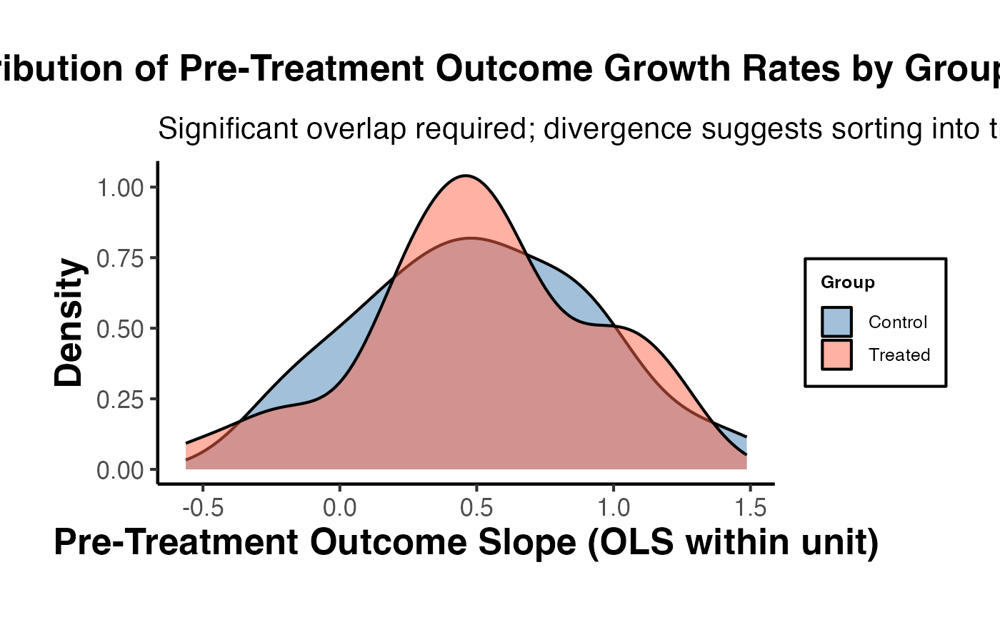
Summary Diagnostics Dashboard
# Retrieve key scalar results from above chunks
granger_lead1 <- coef(granger_fit)[["treat_lead1"]]
granger_lead2 <- coef(granger_fit)[["treat_lead2"]]
# Find the RM result closest to Mbar = 1
rm_idx <- which.min(abs(delta_rm_results$Mbar - 1))
rm_lb_at1 <- delta_rm_results$lb[rm_idx]
# SD result at smallest M
sd_lb_at0 <- delta_sd_results$lb[1]
diagnostics_table <- data.frame(
Test = c(
"Pre-trend joint chi-squared test",
"Power analysis: MDE in pre-period (80% power)",
"Granger lead-1 coefficient",
"Granger lead-2 coefficient",
"Permutation placebo p-value",
"Pre-treatment slope balance (t-test p-value)",
"HonestDiD: SD restriction at M = 0",
"HonestDiD: RM restriction at Mbar = 1"
),
Result = c(
sprintf("chi2(%d) = %.2f, p = %.3f", df_pre, chi2_stat, p_chi2),
sprintf("MDE = %.3f SD/period", power_result$mde),
sprintf("%.4f", granger_lead1),
sprintf("%.4f", granger_lead2),
sprintf("p = %.4f", placebo_pval),
sprintf("p = %.4f", slope_test$p.value),
ifelse(sd_lb_at0 > 0, "Robust (lower CI > 0)", "Not robust"),
ifelse(rm_lb_at1 > 0, "Robust (lower CI > 0)", "Not robust")
),
Interpretation = c(
"Fail to reject pre-trends if p > 0.05; check power before concluding",
"Violations smaller than MDE go undetected; report alongside test",
"Should be near 0 and insignificant (no pre-divergence)",
"Should be near 0 and insignificant (no pre-divergence)",
"p > 0.05: placebo not significant (supports main estimate)",
"p > 0.05: no differential pre-trends in growth rates (good)",
"CI excludes 0 even when linear extrapolation of violations allowed",
"CI excludes 0 even when post violations equal max pre violation"
)
)
#> Error:
#> ! object 'power_result' not found
knitr::kable(
diagnostics_table,
caption = "Comprehensive Parallel Trends Diagnostics Battery",
col.names = c("Diagnostic Test", "Result", "Interpretation")
)
#> Error:
#> ! object 'diagnostics_table' not foundAdditional References (HonestDiD and Diagnostics)
- Rambachan, A. and Roth, J. (2023). “A More Credible Approach to Parallel Trends.” Review of Economic Studies, 90(5), 2555-2591.
- Roth, J. (2022). “Pre-test with Caution: Event-Study Estimates After Testing for Parallel Trends.” American Economic Review: Insights, 4(3), 305-322.
- Baker, A. C., Larcker, D. F., and Wang, C. C. Y. (2022). “How Much Should We Trust Staggered Difference-in-Differences Estimates?” Journal of Financial Economics, 144(2), 370-395.
- Cengiz, D., Dube, A., Lindner, A., and Zipperer, B. (2019). “The Effect of Minimum Wages on Low-Wage Jobs.” Quarterly Journal of Economics, 134(3), 1405-1454.
- McCrary, J. (2008). “Manipulation of the Running Variable in the Regression Discontinuity Design: A Density Test.” Journal of Econometrics, 142(2), 698-714.